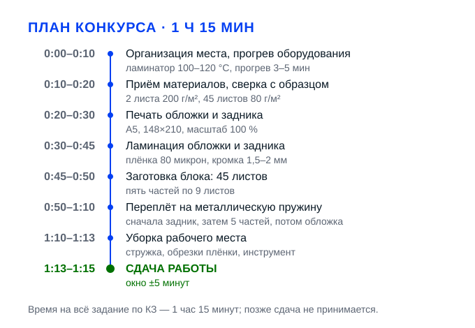
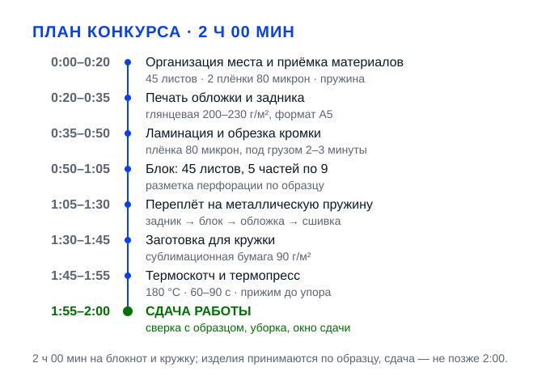
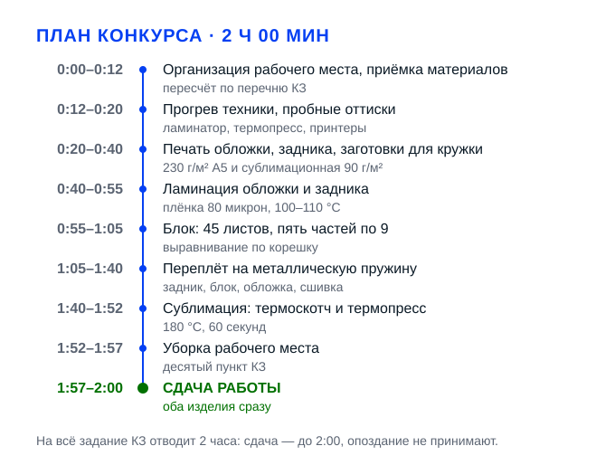

Типографское дело (ФВ)
Задания ниже — официальные файлы «Абилимпикс» (источник: abilympics-russia.ru), разложенные по категориям. Решения написаны по тексту задания, регламенту и критериям оценки; в них указано, что именно проверяет эксперт.
Школьник
14–16 лет, базовый уровень заданияВ официальном файле категории не разделены отдельными разделами — приводим задание целиком; различия по категориям смотрите в таблице модулей.
Пошаговое решение
Задание для школьников — собрать блокнот формата A5 по образцу за 1 час 15 минут. Операций немного, но каждая почти необратима: глянцевой бумаги плотностью 200–230 г/м² всего два листа, плёнки для ламинации 80 микрон — две, пружина одна, поэтому ошибка на печати или на ламинации уже не исправляется. Порядок задан жёстко: печать обложки и задника, ламинация обоих листов, заготовка 45 листов бумаги 80 г/м², переплёт на металлическую пружину и уборка места. Внутри переплёта своя логика: блок делится на пять частей по девять листов, потому что машина не пробивает 45 листов за один проход, а части надеваются на пружину по порядку — задник, пять частей, обложка. Дальше разобраны все шаги с размерами, температурами и признаками, по которым видно, что получилось, а что придётся переделывать.

Задача 1. Организовать рабочее место и принять материалыЭтап 1 КЗ · 0:00–0:20
Первые двадцать минут уходят не на изделие, а на то, чтобы изделие вообще стало возможно: осмотреть бокс, прогреть оборудование, принять и проверить расходные материалы, сверить макет с образцом. В перечне материалов по КЗ на школьника приходится два листа глянцевой бумаги плотностью 200–230 г/м², 45 листов бумаги 80 г/м², две плёнки для ламинации 80 микрон и одна металлическая пружина, и заменить их по ходу работы будет нечем. Поэтому проверка идёт до первого включения печати, а не после первой ошибки.
Действие 1.1. Осмотреть бокс и подготовить оборудование
Шаг 1.1.1
Начинаем не с бумаги, а с обхода: проходим вокруг стола и смотрим, что нас окружает. Проход до соседнего места должен оставаться не меньше 1,5 метра — это записано в требованиях к оснащению мест в КЗ, и нужно оно не для галочки, а чтобы развернуться с ламинатором в руках и никого не задеть. Проверяем розетки: их должно хватать на принтер и ламинатор, а тройник не должен лежать на полу под ногами. Свет должен падать слева и спереди, иначе тень от руки ложится на линию отреза и на отверстия перфорации. Находим глазами выключатели, аптечку и выход.
Организация рабочего места — первый пункт последовательности выполнения задания, и оценивается она отдельно от самого блокнота: эксперт смотрит, готово ли место к работе, а не только каков результат в конце. Кроме того, это чистая арифметика времени: на всё задание по КЗ даётся 1 час 15 минут, и каждая минута, потраченная на поиск розетки или перестановку стола, отнимается от переплёта, где спешка обходится дороже всего.
Проход свободен и не меньше 1,5 метра, стол не качается под рукой, розетки в пределах вытянутой руки. Свет падает слева и спереди, тень от руки не ложится на рабочую зону, до выключателя и аптечки вы дойдёте, не переступая через коробки. Если что-то не так — переставляем сейчас, до включения оборудования.
Самая частая ошибка — сразу сесть и начать печатать, оставив сумку и коробку в проходе: нарушение фиксируется при первом же обходе, а вы весь конкурс двигаетесь боком и задеваете соседа. Вторая — поставить ламинатор справа от принтера «чтобы всё под рукой» и тянуться через стол на каждом листе, теряя по пять секунд сорок пять раз.
Эксперт обходит площадку в первые пять-семь минут, пока идёт подготовка, и отмечает именно исходное состояние места: свободен ли проход, хватает ли света, есть ли порядок на столе. Позже, когда работа уже началась, оценить это невозможно.
Шаг 1.1.2
Включаем оборудование по порядку и даём ему выйти на режим. Принтер включаем первым: он дольше всех выходит на готовность, а некоторым моделям нужна ещё и калибровка. Ламинатор включаем вторым и ждём 3–5 минут до зелёного индикатора — для плёнки 80 микрон рабочая температура лежит в диапазоне 100–120 градусов. Переплётную машину проверяем на холостом ходу: рычаг должен идти вниз плавно, до упора, без заеданий, а прижим — опускаться и подниматься без перекоса.
Оборудование, включённое в последний момент, — источник половины брака на этом задании: непрогретый ламинатор даёт пузыри, а принтер, не закончивший самопроверку, сдвигает изображение на первом листе, который окажется глянцевым и единственным. Проверка рычага заранее нужна ещё и потому, что заклинившая машина посреди пробивки оставляет блок с рваными отверстиями.
Принтер показывает готовность, ламинатор горит ровным зелёным без мигания, рычаг переплётной машины ходит до упора с одинаковым усилием. Потрогайте корпус ламинатора тыльной стороной ладони: он должен быть тёплым, а не горячим и не холодным. Если индикатор мигает — прогрев не закончен, ждём ещё минуту.
Начать ламинировать сразу после включения: плёнка прилипает пятнами, между ней и бумагой остаётся воздух, и обложка уходит в брак целиком. Вторая ошибка — дёргать рычаг переплётной машины резко, «на пробу»: так гнётся тяга, сбивается упор, и отверстия потом идут с перекосом на всех листах.
Эксперт смотрит, прогрето ли оборудование, и проверяет это по первому же оттиску: пятнистая ламинация с «серебристым» налётом сразу выдаёт спешку и снимает оценку за технологию.
Шаг 1.1.3
Раскладываем инструмент по зонам, а не «куда влезло». Справа, под правую руку, ставим переплётную машину и кладём пружину: там идёт самая частая работа, и тянуться за ней через стол нельзя. Слева — ламинатор, потому что лист из него выходит горячим и его нужно сразу положить на ровную поверхность. Перед собой оставляем свободное поле примерно 40 на 30 сантиметров: на нём будет собираться блок. Ножницы, линейку и простой карандаш кладём в одну точку, образец блокнота ставим на подставку так, чтобы его было видно, не поворачивая головы.
Зонирование — это не про красоту, а про количество движений: на 45 листах и шести пробивках лишний разворот корпуса складывается в потерянные минуты, которых в конце всегда не хватает. Образец на виду нужен ещё и потому, что сверять с ним придётся каждый этап — от расположения надписи на обложке до диаметра пружины.
Правая рука достаёт машину и пружину не глядя, левая — ламинатор, рабочее поле перед вами свободно, образец виден целиком. Инструмент лежит в одном месте, а не раскидан по столу тремя кучками. Проверьте это движением: попробуйте взять ножницы, не вставая и не поворачивая головы.
Разложить всё «по ходу дела» и к переплёту обнаружить, что пружина лежит под стопкой бумаги, а ножницы уехали к соседу. Вторая ошибка — поставить образец за спину: сверять с ним работу вы будете по памяти, а память на оттенок и на расположение надписи подводит уже на втором листе.
Эксперт оценивает организацию места целиком, проходя мимо в момент подготовки: видно ли, что у участника есть порядок действий, а не хаотичное движение по столу в поисках очередного инструмента.
Действие 1.2. Принять и проверить расходные материалы
Шаг 1.2.1
Берём перечень материалов из КЗ и сверяем по нему то, что лежит на столе: два листа глянцевой бумаги формата A5 плотностью 200–230 г/м², 45 листов бумаги 80 г/м², две плёнки для ламинации плотностью 80 микрон и одна металлическая пружина для переплёта. Считаем не «на глаз по толщине пачки», а поштучно, и отмечаем карандашом в списке то, что уже проверено. Отдельно смотрим на упаковку плёнки: на ней должна быть указана плотность в микронах, потому что на ощупь 80 и 125 микрон почти не различаются.
Приёмка — единственный момент, когда недостающее ещё можно получить: после старта замена идёт только через главного эксперта, и то если он сочтёт причину уважительной. При этом по КЗ на одного участника посчитано ровно столько, сколько нужно, без запаса: двух глянцевых листов хватает на обложку и задник, и третьей попытки не предусмотрено.
Все строки перечня отмечены, количество совпадает поштучно, плотности на упаковках совпадают с заданием. Если сомневаетесь в плотности бумаги, посмотрите на торец пачки — производитель всегда печатает её там. Плёнку проверяйте по надписи в микронах, а не на ощупь.
Начать работу, не сверив перечень, и в середине обнаружить, что плёнка одна вместо двух или что вместо 80 микрон выдали 125: при 125 микронах нужен другой температурный режим, и обложка пойдёт пузырями. Вторая ошибка — увидеть нехватку и промолчать, решив «как-нибудь обойдусь».
Умение работать по перечню входит в оценку организации работы: эксперт видит, сверялся ли участник со списком материалов или брал первое, что попалось под руку, и умеет ли он считать расходники поштучно.
Шаг 1.2.2
Проверяем бумагу по трём признакам. Первое — глянцевая сторона: у листа она одна, и определяем её по блеску под углом, а не на ощупь, потому что пальцы оставляют на глянце следы, которые после ламинации превращаются в видимые пятна. Второе — заломы и волнистость: лист, лежавший во влажном помещении, выгибается «лодочкой», и такой лист после ламинации поведёт. Третье — направление волокна: лист легче гнётся вдоль волокна, и для блока A5 волокно должно идти вдоль корешка, то есть по длинной стороне 210 миллиметров.
Глянцевая бумага 200 г/м² — самый дорогой материал в этом задании и самый чувствительный к условиям хранения: она набирает влагу из воздуха и коробится. Волокно вдоль корешка нужно для того, чтобы страницы не «волнились» после перфорации: поперёк корешка лист при пробивке даёт характерную волну по всей высоте.
Оба листа блестят с одной стороны, лежат плоско на столе, не выгнуты «лодочкой». Проверьте волокно простым способом: слегка согните лист вдоль длинной стороны — он должен гнуться легче, чем поперёк. Посмотрите на лист под углом к свету: пятна и заломы видны именно так.
Взять лист, у которого глянцевая сторона уже испачкана пальцами: после ламинации отпечаток останется внутри плёнки и будет выглядеть как дефект печати. Вторая ошибка — печатать на листе с заломом: под плёнкой залом превращается в белую полосу через всю обложку.
Эксперт осматривает обложку под углом к свету и на просвет: пятна, заломы и волнистость видны только при таком взгляде, зато видны сразу и без инструментов.
Шаг 1.2.3
Проверяем плёнку и пружину. Плёнка должна быть прозрачной, без «серебристых» разводов и слипшихся участков, размером чуть больше листа A5, кромки ровные. Слипшиеся плёнки разделяем с угла, не растягивая середину. Пружину осматриваем по всей длине: витки ровные, шаг одинаковый, концы не разогнуты, следов ржавчины нет. Прикидываем пружину к стопке из 45 листов и двух ламинированных обложек — она должна охватывать эту толщину с небольшим запасом.
По КЗ плёнки ровно две, и испорченная плёнка означает незаламинированный лист, а пружина одна, поэтому её состояние проверяется до пробивки, а не после. Погнутая пружина не закроется ровно: один виток встанет косо, и по корешку пойдёт волна, которую уже ничем не выправить.
Плёнки прозрачные, ровные, не слипшиеся, размер больше листа на три-пять миллиметров с каждой стороны. Пружина ровная по всей длине 210 миллиметров, витки одинаковые, концы загнуты внутрь. Проведите пальцем по виткам: они не должны цепляться и оставлять на коже следы ржавчины или краски.
Взять плёнку с заломом: на выходе получится складка, которая тянет за собой всю поверхность обложки. Или взять пружину с разогнутым концом: крайний виток не войдёт в отверстие, и последний лист будет держаться на честном слове до первого перелистывания.
Эксперт проверяет ламинацию на просвет и на ощупь, а корешок — с торца: пузыри, складки и незакрытые витки видны без инструментов, и именно по ним он судит о качестве изделия.
Действие 1.3. Сверить макет и образец
Шаг 1.3.1
Ставим образец блокнота перед собой и разбираем его на составляющие: что напечатано на обложке, как расположена надпись, есть ли рисунок или плашка, что на заднике. Смотрим на размер: образец формата A5 — это 148 на 210 миллиметров, и ваш блокнот должен получиться ровно таким же. Отдельно отмечаем, где проходит корешок и с какой стороны открывается блокнот: у пружинного переплёта лицевая сторона обложки всегда снаружи, а открывается он слева направо.
Образец — это эталон, с которым работу будут сравнивать, и все спорные решения (расположение надписи, отступы, цвет) решаются по нему, а не по вкусу. Если разобрать образец на составляющие заранее, потом не придётся гадать, почему ваша обложка «вроде такая же, но не такая».
Вы можете перечислить вслух: формат, что напечатано на обложке, что на заднике, с какой стороны корешок, какой ширины поля. Если на какой-то вопрос ответа нет — разглядывайте образец, пока он не появится: лучше потратить две минуты сейчас, чем переделывать блокнот в конце.
Посмотреть на образец один раз и отложить: потом вы будете сверять работу по памяти, а память на оттенок и на расположение надписи подводит. Вторая ошибка — решить, что образец «примерный» и можно сделать по-своему: соответствие образцу проверяется наложением.
Эксперт сравнивает готовый блокнот с образцом наложением и рядом: соответствие проверяется по расположению надписи, цвету, формату и числу листов, и никакие объяснения тут не помогают.
Шаг 1.3.2
Открываем на рабочем компьютере файл макета и проверяем его до печати: размер страницы ровно A5 — 148 на 210 миллиметров, ориентация книжная, в документе одна страница без пустых листов и служебной разметки. В окне печати ставим масштаб 100 процентов, а не «по размеру страницы»: эта галочка по умолчанию подгоняет макет под лоток и тихо увеличивает изображение на три-пять процентов, после чего обложка перестаёт совпадать с блоком. Проверяем, что в списке принтеров выбран тот, который стоит на вашем столе.
Масштаб — самая коварная настройка во всей предпечатной подготовке: на экране всё выглядит правильно, а на бумаге поля уехали, и обрезка уже не спасёт, потому что глянцевых листов всего два. Выбор принтера в списке — вторая ловушка: на площадке их несколько, и печать может уйти на соседний стол.
В свойствах файла и в окне печати стоит A5, 100 процентов, книжная ориентация, одна страница, нужный принтер. Сверьте с образцом линейкой: ширина 148, высота 210, отступ от края до текста не меньше пяти миллиметров. Проверьте имя принтера на панели — оно должно совпадать с наклейкой на вашем аппарате.
Оставить «по размеру страницы» и получить обложку на пять миллиметров шире блока: она будет выступать за листы и выглядеть как брак. Или отправить задание на соседний принтер и искать свою печать по всей площадке, теряя минуты из тех 75, что даны на всё задание.
Эксперт может подойти в момент печати и посмотреть на настройки: правильный масштаб, выбранное устройство и отсутствие лишних страниц — часть технологической грамотности, которую он отмечает отдельно.
Шаг 1.3.3
Делаем один пробный оттиск на обычном листе 80 г/м² — он ничего не стоит и показывает, что макет встал правильно и принтер не сдвинул изображение. Смотрим пробу целиком: не уехал ли рисунок в сторону, не обрезалась ли надпись, нет ли полос и потёков. Если дефект есть — устраняем его на настройках и печатаем вторую пробу, и только после чистой пробы заряжаем глянцевый лист.
Пробный оттиск на дешёвой бумаге — это страховка, которая стоит полминуты. Глянцевой бумаги A5 в перечне материалов ровно два листа, и испорченный глянцевый лист означает отсутствие обложки или задника: заменить его будет нечем, а работа без задника не соответствует образцу.
На пробе видно всё изображение целиком, поля симметричны, надпись не обрезана, полос нет. Смотрите пробу и под углом к свету: полосы от валика видны только так, при прямом взгляде они маскируются. Если дефект есть — печатаем вторую пробу, а не глянцевый лист.
Сразу зарядить глянцевый лист и получить сдвиг на пять миллиметров: второй лист уйдёт на перепечатку, и задник печатать будет не на чем. Вторая ошибка — считать пробу формальностью и не смотреть на неё вовсе, а потом искать причину брака на готовой обложке.
Эксперт отмечает, проверяет ли участник настройки до расходного материала: это входит в оценку организации работы и отличает спокойную подготовку от работы «на авось».
Задача 2. Напечатать обложку и задникЭтап 2 КЗ · 0:20–0:30
Печать обложки блокнота на глянцевой бумаге плотностью 200–230 г/м² — вторая строка последовательности выполнения задания, и единственная операция, которую нельзя переделать: листов этой бумаги по перечню два, на обложку и на задник. Здесь важны три вещи: точный размер A5 без масштабирования, правильный режим печати под плотную глянцевую бумагу и проверка оттиска до того, как он уйдёт в ламинатор, потому что под плёнкой исправить уже ничего нельзя.
Действие 2.1. Подготовить макет к печати
Шаг 2.1.1
Открываем макет и первым делом смотрим на размер страницы: он должен быть ровно A5 — 148 на 210 миллиметров, ориентация книжная. В окне печати выставляем масштаб 100 процентов и снимаем галочку «по размеру страницы», если она стоит. Проверяем, что в макете одна страница: лишний пустой лист в файле означает, что принтер напечатает его следом и второй глянцевый лист уйдёт на пустую страницу.
Размер и масштаб — фундамент всей работы: обложка должна совпасть с блоком по формату, иначе она будет выступать за листы или окажется меньше их, и блокнот перестанет соответствовать образцу. Ошибка в масштабе не видна ни на экране, ни на ощупь — только линейкой на оттиске.
В свойствах файла и в окне печати стоит A5, 100 процентов, книжная ориентация, одна страница. Приложите линейку к пробному оттиску: 148 на 210, допуск не больше одного миллиметра. Заодно посмотрите, что в лотке именно два листа, а не один и не три.
Оставить «по размеру страницы»: изображение увеличивается на три-пять процентов, и обложка перестаёт совпадать с блоком. Вторая ошибка — не заметить в файле вторую страницу и потратить глянцевый лист на пустой оттиск, которого в образце нет.
Эксперт сверяет готовую обложку с образцом наложением: расхождение по размеру видно сразу, даже на глаз, и объяснить его обрезкой невозможно — лист уже формата A5.
Шаг 2.1.2
Проверяем цвет: текст должен быть задан в 100 процентах чёрного, а не «богатым чёрным» из четырёх красок. На глянцевой бумаге краски сохнут с разной скоростью, и составной чёрный даёт радужный ореол вокруг букв, особенно заметный на мелком кегле. Цветные плашки, если они есть в макете, сверяем с образцом: оттенок синего должен совпадать, потому что замена на «похожий» видна именно рядом с оригиналом.
Соответствие образцу проверяется глазами и наложением, и ореол вокруг шрифта читается как дефект печати, а не как особенность макета. Кроме того, лишняя краска на глянце не успевает закрепиться и пачкает обратную сторону следующего листа в стопке, а отпечаток на обороте обложки виден на сшитом блокноте с торца.
Буквы на макете одноцветные: при увеличении до 200 процентов вокруг них нет цветных контуров. Плашки совпадают с образцом по оттенку, а не «примерно похожи». Проверьте это до печати, на экране, и потом на пробном оттиске — на глянце ореол усиливается.
Оставить богатый чёрный и получить обложку с цветной каймой у каждой буквы: это спишут на небрежность печати. Вторая ошибка — «поправить» цвет на глаз, не сверив с образцом, и получить плашку, которая рядом с оригиналом выглядит чужой.
Эксперт смотрит обложку рядом с образцом при дневном свете: оттенок, читаемость, отсутствие ореолов вокруг шрифта и разнотона в заливке. Смотрит он это уже после ламинации, когда лист не переделать, поэтому ореол и уехавший цвет обнаруживаются в самый неудобный момент.
Шаг 2.1.3
Проверяем поля: ни один элемент не должен подходить к краю ближе пяти миллиметров. Принтер не печатает в край листа — у большинства моделей остаётся непечатаемое поле три-четыре миллиметра, и всё, что попало в эту зону, просто не напечатается. Если в макете надпись стоит вплотную к кромке, лучше сдвинуть её внутрь сейчас, чем обнаружить обрезанную букву на глянцевом листе.
КЗ требует печати обложки на листе формата A5, то есть обрезка по формату не предусмотрена — лист уже нужного размера. Значит, безопасное поле закладывается в макете, и другого способа спасти близко стоящий к краю текст нет: принтер физически не может напечатать в кромку.
Все элементы макета отстоят от кромки не меньше чем на пять миллиметров. Проверьте линейкой на экране, а потом на пробном оттиске: крайние буквы и линии должны быть целыми, без среза и без смаза. Смотрите именно крайние элементы, а не середину листа.
Оставить надпись в трёх миллиметрах от края: на оттиске она обрежется или смажется, а исправить это на готовом листе нельзя, потому что второй глянцевый лист по перечню предназначен для задника. Вторая ошибка — надеяться, что принтер «сам подвинет» макет внутрь листа.
Эксперт смотрит на обложку целиком, а не на отдельные буквы: обрезанные или смазанные у кромки элементы — видимый дефект печати, и он портит впечатление от всей работы.
Действие 2.2. Загрузить бумагу и настроить принтер
Шаг 2.2.1
Заряжаем глянцевую бумагу в лоток ручной подачи: плотная глянцевая бумага почти всегда идёт отдельным путём, потому что из нижнего лотка лист делает крутой изгиб и на 200 г/м² остаётся залом. Печатную сторону определяем по блеску и по метке на лотке; берём лист за кромку, а не за середину, потому что отпечаток пальца на глянце не смывается и после ламинации превращается в видимое пятно. Ограничители сдвигаем до листа, но не зажимаем: лист должен лежать свободно.
Способ подачи напрямую влияет на результат: на плотной бумаге нижний лоток даёт поперечный залом, который под плёнкой становится белой полосой. Отпечатки пальцев — вторая причина брака, и она необратима: глянец не стирается, а ламинация фиксирует загрязнение навсегда.
В лотке ровно два листа, оба лежат ровно, ограничители касаются краёв без нажима. Пролистайте их большим пальцем у кромки: слипшиеся листы на глянце — обычное дело, а двойной захват портит оба листа сразу. Убедитесь, что в лотке нет обрезков от предыдущей печати.
Положить лист глянцевой стороной вниз: печать уйдёт на матовую сторону, и обложка будет выглядеть мутной, а картинка — блёклой. Вторая ошибка — зажать ограничители: лист не захватится, принтер выдаст ошибку подачи, и время уйдёт на перезапуск.
Эксперт смотрит на загрузку бумаги: чистые листы без заломов, правильная сторона, ровная укладка в лотке. Отпечатки пальцев на глянце он замечает раньше, чем сам участник.
Шаг 2.2.2
В настройках печати выбираем тип бумаги «глянцевая» или «фотобумага», плотность — «плотная» либо явно 200 г/м², качество — «высокое». Скорость при этом падает, и это правильно: на высокой скорости краска не успевает закрепиться и размазывается по валикам подачи. Если принтер струйный, дополнительно включаем лучшее качество и отключаем экономию краски, иначе заливка выйдет бледной и полосатой.
Принтер подбирает температуру закрепления и количество краски именно по типу бумаги. При настройке «обычная бумага» на глянце краска ложится слишком щедро, не впитывается и остаётся липкой, а такой лист нельзя ни ламинировать, ни класть в стопку — он слипнется с соседним.
В окне печати стоит тип «глянцевая», плотность «плотная», качество «высокое», экономия краски выключена. Проверяем это до нажатия кнопки печати: после нажатия менять настройки бессмысленно, задание уже ушло в очередь устройства.
Оставить настройки по умолчанию: на выходе липкий, пачкающийся оттиск, а плёнка при ламинации приклеится к незакреплённой краске и стянет её с бумаги. Вторая ошибка — включить экономию краски «чтобы не тратить»: заливка выйдет бледной и полосатой.
Эксперт может спросить, какой режим выставлен и почему именно такой: это проверка понимания технологии, а не памяти, и ответ «по умолчанию» его не устроит.
Шаг 2.2.3
Проверяем лоток перед печатью: два листа, между ними ничего нет, за ними не осталось обрезков от предыдущей печати. Листы выравниваем по дальней стенке лотка и закрываем его до щелчка. После этого лоток не трогаем до конца печати: любое движение во время работы сдвигает лист и даёт перекос. Если принтер стоит на общей тумбе, не опираемся на неё локтем — вибрация тоже сдвигает лист.
Двойной захват и перекос — две самые частые причины брака именно на плотной глянцевой бумаге, и обе лечатся проверкой до печати, а не после. По КЗ листов два, и потеря одного из-за невнимательности означает, что блокнот останется без задника или без обложки.
Два листа, кромки выровнены, лоток закрыт до щелчка, на панели нет предупреждений. Если принтер пишет «нет бумаги», значит лоток не дожат, а не бумага кончилась. Проверьте ещё, что ограничители не зажаты: лист должен выниматься свободно.
Загрузить листы не до конца и получить перекос: изображение напечатается под углом, и обрезка не выровняет его относительно блока, потому что обрезки по формату в этом задании нет. Вторая ошибка — догрузить третий лист «на всякий случай» и получить двойной захват.
Эксперт смотрит на аккуратность обращения с материалом: чистые листы без отпечатков, заломов и перекосов, лоток, закрытый до конца. Замечает он это в момент загрузки, а спрашивает потом, при разборе результата: «почему на обложке пятно» — вопрос, на который уже нет хорошего ответа.
Действие 2.3. Напечатать и проверить оттиски
Шаг 2.3.1
Запускаем печать первого листа — обложки. Лист выходит медленно, и забирать его нужно сразу, двумя пальцами за кромку, а не давать упасть в приёмный лоток: на плотной бумаге при падении загибается угол, а загнутый угол уже не заламинируется ровно. Кладём оттиск печатной стороной вверх на чистый лист и не трогаем первые полминуты, пока краска не схватится.
Свежая краска на глянце не закреплена до конца, и любое касание оставляет след, который потом виден под плёнкой. Загнутый угол при ламинации даёт складку через всю обложку, а обложка одна: второй лист глянцевой бумаги по перечню предназначен для задника.
Лист вышел целиком, без сдвига, краска не блестит мокро. Проведите тыльной стороной ногтя по свободному полю: если краска осталась на пальце, дайте листу полежать ещё минуту. Углы должны быть ровными, без загибов — их потом не расправить.
Схватить лист за только что напечатанное поле: на обложке останется смазанный отпечаток, и он же заламинируется внутрь. Вторая ошибка — положить горячий оттиск в стопку, где он слипнется с соседним листом и отдаст ему часть краски.
Эксперт осматривает оттиск на просвет и под углом: полосы, смазы и равномерность заливки видны именно при таком взгляде, а не при прямом. Смотрит он на свободные поля, а не на рисунок: дефекты печати проявляются там, где нет краски, которая их маскирует.
Шаг 2.3.2
Кладём оттиск на стол и проверяем три вещи: краска не смазывается, нет полос и белых точек, изображение стоит ровно относительно кромок. Поля меряем линейкой — сверху и снизу, слева и справа: разница больше одного-двух миллиметров уже заметна на готовом блокноте. Сверяем с образцом: та же надпись, тот же цвет, то же расположение. Смотрим лист и на просвет, и под углом к лампе.
Дальше лист идёт в ламинатор, и после плёнки исправить на нём уже ничего нельзя. Все дефекты печати — полосы от валика, непропечатанные точки, сдвиг изображения — остаются внутри плёнки навсегда и видны на готовой работе. Проверка занимает полминуты и стоит дешевле, чем отсутствие обложки.
Краска сухая, полос нет, поля отличаются не больше чем на миллиметр, изображение совпадает с образцом. Смотрите лист под углом к свету: полосы от валика видны только так, при прямом взгляде их не заметно. Проверьте и обратную сторону — краска не должна отпечататься на обороте.
Пропустить полосу от валика и заламинировать её: под глянцевой плёнкой дефект становится контрастнее, и работа сразу выглядит бракованной. Вторая ошибка — не заметить сдвиг изображения на два миллиметра и получить обложку с полями разной ширины.
Эксперт прикладывает обложку к образцу и смотрит под углом — так видны и полосы, и разнотон заливки, и разница в ширине полей. Отдельно он проверяет, не смазана ли краска на свободном поле: этот след остаётся от пальцев и говорит об аккуратности больше, чем сама печать.
Шаг 2.3.3
Печатаем второй лист — задник. Он печатается по тем же настройкам, что и обложка, даже если макет у него проще: другое качество печати даст другой оттенок, и два листа будут отличаться. На обороте каждого листа простым карандашом пишем «обложка» и «задник», рядом ставим стрелку вверх — по ней потом ориентируемся при пробивке. Карандаш, а не маркер: маркер на плотной бумаге отпечатывается на соседнем листе.
После ламинации обложка и задник выглядят почти одинаково, и перепутать их в конце работы — самая обидная ошибка: блокнот открывается не той стороной, а разбирать сшитый блок на пружине нельзя, не снимая пружину целиком. Пометка карандашом решает вопрос за секунду.
Два листа, оба подписаны, стрелка вверх у обоих смотрит в одну сторону, цвет на обоих одинаковый. Сравните их рядом при одном свете, а не по очереди: разнотон заметен именно при сравнении двух листов в одной руке.
Печатать задник с другими настройками: листы отличаются по насыщенности, и на сшитом блокноте это видно с торца. Или не подписать листы и потом гадать, какой из них лицевой, а перепутать их — значит собрать блокнот, который открывается не той стороной.
Эксперт проверяет блокнот с обеих сторон: обложка и задник должны быть одного качества, одного оттенка и без пометок, которые случайно остались на лицевой стороне.
Задача 3. Заламинировать обложку и задникЭтап 3 КЗ · 0:30–0:45
Ламинирование обложки и задника плёнкой плотностью 80 микрон — третья строка задания. По КЗ лист глянцевой бумаги 200 г/м² формата A5 вкладывается в плёнку и пропускается через ламинатор, и именно на этом этапе появляются дефекты, которые потом не исправить: пузыри, складки, отслоение кромки. Плёнки по перечню две, поэтому режим настраивается на пробной полоске, а не на обложке, и оба листа проходят через машину на одном и том же режиме.
Действие 3.1. Прогреть ламинатор и подготовить плёнку
Шаг 3.1.1
Включаем ламинатор и ждём выхода на режим: для плёнки 80 микрон нужна температура около 100–120 градусов, а прогрев занимает 3–5 минут, пока не загорится индикатор готовности. Пока идёт прогрев, не суём в щель ничего «попробовать»: холодные валики сомнут плёнку и намотают её на вал, а снимать её оттуда долго и опасно. Скорость ставим минимальную или вторую из минимальных — тонкой плёнке нужен медленный проход, чтобы клей успел схватиться.
Непрогретый ламинатор — главная причина пузырей и «серебристого» налёта, который виден на просвет. На всё задание по КЗ даётся 1 час 15 минут, и эти пять минут прогрева нужно заложить в план заранее, а не обнаружить в момент, когда обложка уже вложена в плёнку.
Индикатор готовности горит ровно, без мигания, вал вращается, на входе нет остатков старой плёнки. Потрогайте корпус тыльной стороной ладони: он должен быть тёплым, а не горячим и не холодным. Если сомневаетесь — прогоните пробную полоску, она скажет точнее любого индикатора.
Начать ламинировать сразу после включения: плёнка прилипает пятнами, между ней и бумагой остаётся воздух, и обложка уходит в брак целиком. Вторая ошибка — сунуть в щель обрезок «попробовать» на холодных валиках: плёнку намотает на вал, и машина встанет.
Эксперт смотрит, прогрето ли оборудование: пятнистая ламинация с «серебром» сразу выдаёт спешку, и это одна из самых заметных ошибок на этапе ламинации.
Шаг 3.1.2
Берём две плёнки по 80 микрон и проверяем каждую: размер чуть больше A5, кромки ровные, поверхность без заломов и пыли. Плёнка должна быть прозрачной, без «серебристых» разводов — они означают, что она хранилась во влажном месте. Слипшиеся плёнки разделяем, начиная с угла, и не тянем за середину: залом на плёнке останется навсегда и после ламинации превратится в складку.
По КЗ плёнки ровно две — на обложку и на задник, и испорченная плёнка означает незаламинированный лист. Пылинка под плёнкой после ламинации становится бугорком с белым ореолом, а такой дефект на обложке видно сразу, даже если он размером с маковое зерно.
Обе плёнки чистые, ровные, не слипшиеся, размер больше листа на три-пять миллиметров с каждой стороны. Проведите по плёнке ладонью: она должна быть гладкой и прохладной, без бугорков и «серебристых» разводов. Посмотрите на просвет — прозрачность должна быть равномерной.
Взять плёнку с заломом: на выходе получится складка, которая тянет за собой всю поверхность. Или взять плёнку точно в размер листа: клей из кромки попадёт на валики и испачкает их для следующих листов, а счищать его придётся уже без права на ошибку.
Эксперт проверяет ламинацию на просвет и на ощупь: пузыри, складки и отслоение кромки видны без инструментов, и по ним он судит о том, умеет ли участник работать с плёнкой.
Шаг 3.1.3
Перед первым рабочим листом прогоняем пробную полоску: обрезок обычной бумаги 80 г/м², завёрнутый в небольшой кусок плёнки. Смотрим, как плёнка легла — ровно ли, без волн, приклеилась ли кромка полностью. Если на полоске пузыри, прибавляем температуру на пять-десять градусов или снижаем скорость и повторяем пробу, пока результат не станет чистым. Полоску не выбрасываем до конца работы: по ней видно, каким был режим.
Пробная полоска — способ настроить машину под конкретную плёнку, не расходуя рабочие материалы. Плёнки одного класса ведут себя по-разному в зависимости от партии и влажности в помещении, поэтому настройка «по паспорту» не гарантирует результата, а обложка всего одна.
На пробе нет пузырей, волн и «серебра», кромка приклеена по всей длине, плёнка не отходит при попытке поддеть ногтем. Бумага внутри полоски не потемнела от перегрева. После чистой пробы можно брать обложку.
Пропустить пробу и сразу пустить обложку: если режим не тот, испорчен первый же дорогой лист, а второго глянцевого листа на обложку в перечне нет. Вторая ошибка — гонять пробу на рабочей плёнке и остаться без материала для задника.
Эксперт отмечает, настраивал ли участник режим под материал или работал «как есть»: это часть оценки технологии, и видно её по первой же полоске. Если проба лежит на столе рядом с машиной, вопросов у него не возникает — значит, настройка была осознанной, а не случайной.
Действие 3.2. Вложить листы в плёнку и пропустить через ламинатор
Шаг 3.2.1
Вкладываем оттиск в плёнку: лист кладём на одну половину, накрываем второй, разглаживаем ладонью от середины к краям. Лист должен стоять по центру, припуск плёнки одинаковый со всех сторон — три-пять миллиметров. Печатная сторона смотрит внутрь, к плёнке, а не наружу, иначе после ламинации вы получите глянцевую плёнку поверх картинки и матовую бумагу с обратной стороны.
Равномерный припуск нужен для двух вещей: он закрывает лист целиком и даёт запас, который потом обрезается до кромки. Если припуск с одной стороны миллиметр, а с другой восемь, после обрезки кромка выйдет неровной, а в узком месте плёнка может не закрыть бумагу, и торец останется открытым.
Плёнка выступает за лист со всех четырёх сторон одинаково, лист не сдвинут, между плёнкой и бумагой нет пыли. Посмотрите на просвет: бумага должна стоять ровно по центру плёнки, без перекоса к одному углу.
Положить лист на край плёнки: с одной стороны плёнки не хватит, кромка останется открытой и быстро обтрёпается. Вторая ошибка — оставить пылинку и разгладить её вместе с плёнкой: после ламинации она превратится в бугорок с белым ореолом.
Эксперт смотрит на кромку готовой обложки: она должна быть закрыта плёнкой по всему периметру, без открытых торцов и без широких полос, торчащих за блок.
Шаг 3.2.2
Подаём конверт в ламинатор запаянной кромкой вперёд — той, где плёнка уже соединена. Ведём ровно, двумя руками, слегка поддерживая, но не подталкивая и не вытягивая: машина сама тянет лист с постоянной скоростью. Как только кромка захвачена валиками, отпускаем и ждём, пока лист выйдет целиком, не помогая ему на выходе. Если лист пошёл криво — не выравниваем его на ходу руками, это только добавляет складку.
Если подать открытой кромкой, струя воздуха между слоями плёнки заходит внутрь, слои сминаются, и на выходе получается складка через весь лист. Тянуть или придерживать тоже нельзя: скорость валиков постоянна, и любое сопротивление даёт волну, которая застывает навсегда.
Лист прошёл ровно, без перекоса, плёнка прилегает по всей площади, кромки не загнуты. Горячий лист сразу кладём на ровную поверхность и не гнём, пока он не остынет. Проверьте кромку ногтем: она должна быть приклеена, а не поддеваться.
Подтолкнуть лист пальцем: он войдёт под углом, и на выходе одна сторона будет шире другой. Или подать открытой кромкой и получить складку по всей длине, которую уже не расправить ни грузом, ни повторным прогоном.
Эксперт смотрит на ламинацию под углом: волны и перекос кромки видны сразу, даже на почти готовой работе, и именно они чаще всего снижают оценку за качество.
Шаг 3.2.3
Второй лист — задник — пропускаем тем же порядком и на том же режиме, не меняя настроек. Между листами выдерживаем паузу 10–15 секунд, чтобы валики вернулись к рабочей температуре, а первый лист успел остыть. Оба листа кладём печатной стороной вверх в одну стопку и прижимаем сверху плоским грузом — папкой с бумагой или книгой. Не кладём второй лист поверх первого горячим: свежая плёнка прилипнет к плёнке нижнего.
Одинаковый режим даёт одинаковый глянец на обложке и заднике, а их будут сравнивать рядом, когда блокнот собран. Под грузом остывающая плёнка выпрямляется: пока она тёплая, она пластична, и любая неровность поверхности застынет в ней навсегда. Пауза между листами нужна, чтобы валики не остыли от первого прохода.
Оба листа одинаковы по блеску и прозрачности, лежат ровно, не выгнуты дугой. Через две минуты они должны быть холодными на ощупь. Приложите листы друг к другу печатными сторонами: оттенок должен совпадать без оговорок.
Менять температуру между листами: обложка и задник отличаются по блеску, и на сшитом блокноте это бросается в глаза. Вторая ошибка — оставить горячие листы на весу: они выгнутся и потом не прилягут к блоку, а груз на середину листа поднимет края.
Эксперт сравнивает обложку и задник рядом: разнотон ламинации заметен даже неспециалисту, и его не спишешь ни на освещение, ни на угол обзора. Делает он это на готовом блокноте, когда листы уже сшиты, и переделать что-либо поздно.
Действие 3.3. Охладить, проверить и обрезать припуск
Шаг 3.3.1
Горячие ламинированные листы кладём на ровную твёрдую поверхность и прижимаем сверху чем-то плоским и тяжёлым: папкой с бумагой, книгой, обрезком стекла. Держим под грузом одну-две минуты, пока лист полностью не остынет. Не сгибаем, не проверяем на излом и не обрезаем, пока он тёплый. Груз кладём на весь лист, а не на середину: иначе края поднимутся.
Плёнка остывает с усадкой, и если лист в этот момент лежит неровно или его держат на весу, он застынет выгнутым. Выгнутую обложку потом не выпрямит ни переплёт, ни груз: она будет оттопыриваться на блокноте и цепляться за соседние листы, а исправить это можно только переделкой всей обложки.
Лист холодный, плоский, лежит на столе без зазора по краям. Приложите линейку к диагонали — просвета между ней и листом быть не должно. Проверьте обе диагонали и оба края: выгиб чаще всего идёт по длинной стороне.
Сразу после ламинатора положить лист на край стола или на неровную стопку: свежая плёнка застывает с изгибом, и обложка идёт в переплёт кривой. Вторая ошибка — проверять горячий лист на излом и оставить на плёнке белый след.
Эксперт кладёт блокнот на стол и смотрит, прилегает ли обложка: выгнутая обложка — видимый дефект изделия, и заметен он без линейки. Проверяет он это в самом конце, при сдаче, когда выпрямить лист уже невозможно.
Шаг 3.3.2
Проверяем ламинацию по всей площади в три приёма: на просвет, под углом к свету и на ощупь. Ищем пузыри, складки, «серебристые» пятна, отслоение кромки и пылинки под плёнкой. Кромку проверяем ногтем — она не должна поддеваться и отходить от бумаги. Отдельно смотрим углы: именно там плёнка чаще всего не приклеивается. Если нашли пузырь, отметьте его карандашом с обратной стороны: так видно, единичный это дефект или они идут по всей площади.
Три дефекта ламинации — пузырь, складка и отслоение кромки — это брак, который видно невооружённым глазом, и именно его ищут при оценке качества изделия. Найти их сейчас ещё можно и успеть что-то сделать: например, прогнать лист повторно, если плёнка не приклеилась окончательно.
Плёнка прозрачная, прилегает по всей площади, кромка приклеена, пузырей нет. Под углом поверхность даёт ровный блик без волнистости и «апельсиновой корки». Проведите ладонью: поверхность должна быть гладкой, без бугорков от пыли.
Не посмотреть на просвет и заламинировать обложку с пузырём: под глянцем пузырь выглядит как белое пятно, и работа теряет балл за качество. Вторая ошибка — принять «серебристый» налёт за блик и не прогнать лист повторно, пока клей ещё не схватился.
Эксперт проверяет ламинацию именно на просвет — так видны пузыри, незаметные при первом взгляде на лист, и оценивает кромку по всему периметру. Плёнка с пузырём под глянцем выглядит как белое пятно, и это первое, что он отмечает в протоколе.
Шаг 3.3.3
Обрезаем припуск плёнки ножницами или на резаке, оставляя по кромке полосу 1,5–2 миллиметра. Режем по линейке, от угла к углу, не доходя до бумаги: срез должен идти по плёнке, а не по краю листа. Углы срезаем наискось на два-три миллиметра, чтобы они не задирались и не кололись при перелистывании. Ножницы держим вертикально, а не под углом к листу.
Кромка вплотную к бумаге — это открытый торец, через который со временем заходит воздух, и плёнка начинает отслаиваться, особенно после перфорации. Слишком широкий припуск торчит за блок, выглядит неаккуратно и цепляется за соседние листы на пружине.
Кромка ровная по всему периметру, ширина полосы одинаковая, углы срезаны, бумага не подрезана. Проведите пальцем по периметру: ничего не должно колоться и задираться. Приложите обложку к блоку — припуск не должен выступать за листы больше чем на два миллиметра.
Обрезать вплотную к бумаге: торец открыт, плёнка отслаивается уже при пробивке отверстий, и кромка обложки начинает лохматиться. Вторая ошибка — оставить шесть-восемь миллиметров и получить лохматую полосу, которая торчит из блока.
Эксперт смотрит на кромку обложки вблизи: ровная полоса плёнки по периметру — признак аккуратной работы, а неровный срез виден даже на расстоянии вытянутой руки.
Задача 4. Заготовить блок из 45 листовЭтап 4 КЗ · 0:45–0:50
Четвёртая строка задания выглядит самой простой: отсчитать 45 листов бумаги 80 г/м². На деле именно здесь закладывается геометрия блока: если листы не выровнены по корешку и верхней кромке, отверстия встанут на разном расстоянии от края, и блок на пружине перекосится. По КЗ блок делится на пять частей по девять листов — это не формальность, а рабочий режим переплётной машины, которая не пробивает 45 листов за один проход.
Действие 4.1. Отсчитать и выровнять 45 листов
Шаг 4.1.1
Отсчитываем 45 листов бумаги 80 г/м². Считать по одному — верный способ сбиться, поэтому берём по пять листов и складываем в девять стопок: девять раз по пять даёт ровно 45. Каждую пятёрку пересчитываем вслух или про себя, а готовые стопки откладываем в сторону, чтобы не смешать с непересчитанными. В конце пересчитываем стопки, а не листы: девять стопок — это и есть 45.
Число листов в блокноте — прямой признак соответствия образцу: по КЗ их должно быть 45, и это единственная цифра в задании, которую эксперт проверит пересчётом. Ошибка на один лист видна не сразу, но исправляется только полной разборкой пружинного блока, а на это в конце уже не будет времени.
Девять стопок по пять листов, при складывании в одну — 45. Пересчёт занимает двадцать секунд и снимает весь риск; сделайте его до пробивки, а не после. Заодно проверьте, что в отложенных стопках нет листов из другой пачки с другим оттенком.
Отсчитывать «на глаз по толщине» и получить 43 или 47 листов: недобор виден по толщине блока, а перебор приводит к тому, что пружина не закрывается и листы зажимаются намертво, теряя способность переворачиваться.
Эксперт пересчитывает листы в готовом блокноте: это одна из немногих проверок, где число имеет значение само по себе, и 44 листа вместо 45 — уже несоответствие образцу.
Шаг 4.1.2
Перед тем как пустить листы в блок, просматриваем их: нет ли заломов, пятен, надорванных уголков, листов другого формата. Мятый лист вытягиваем и заменяем — бумаги в пачке с запасом, а испорченный лист в блоке будет виден при каждом перелистывании. Отдельно проверяем, что все листы одного оттенка: пачка может быть собрана из разных партий, и тогда блок получится полосатым.
Аккуратность блока входит в оценку качества изделия, и один мятый или пожелтевший лист читается как небрежность всей работы, даже если обложка и переплёт сделаны идеально. Заменить лист сейчас — пять секунд, после переплёта — разбор всего блока, на который в конце задания уже не останется времени.
Все листы ровные, чистые, одинакового цвета, формат A5 у всех. Пролистайте стопку веером, держа за верхний угол: так заломы и пятна видны сразу, а не через десять листов. Посмотрите стопку на просвет — разнотон партий проявляется именно так.
Оставить в блоке лист с загнутым углом: при пробивке он сместится, и отверстия в блоке встанут неровно, а на пружине угол будет топорщиться и цепляться за соседние листы. Вторая ошибка — заменить лист, но взять его из другой пачки, отличающейся по оттенку.
Эксперт перелистывает готовый блокнот: заломы, пятна и разнотон видны при быстром просмотре, и их не скроет ни обложка, ни пружина. Пролистывает он блок целиком, а не выборочно, поэтому один испорченный лист обязательно попадёт в поле зрения.
Шаг 4.1.3
Выравниваем стопку по двум кромкам — по корешковой, то есть левой, и по верхней. Держим стопку двумя руками, слегка сжимаем и постукиваем корешком о стол, пока листы не встанут заподлицо. Затем кладём на стол и проверяем кромку на просвет: она должна быть ровной линией, без «лесенки» из отдельных листов. Если один лист выступает, вытягиваем его и выравниваем стопку заново, а не подталкиваем пальцем.
Пробивка идёт по корешковой кромке, и если листы в стопке стоят со сдвигом даже в один миллиметр, отверстия в разных листах окажутся на разном расстоянии от края. На пружине такой блок перекашивается, а страницы при перелистывании заедают и рвутся у корешка.
Корешковая кромка — ровная линия, верхняя тоже, углы совпадают. Посмотрите на стопку с торца: слои должны идти параллельно, без клина и без выступающих отдельных листов. Проверьте обе кромки, а не только ту, по которой будете пробивать.
Пробивать невыровненную стопку: отверстия «пляшут», блок на пружине стоит косо, а часть листов вообще не надевается на витки. Вторая ошибка — выравнивать стопку уже после пробивки: отверстия от этого не сдвинутся.
Эксперт смотрит на блокнот с торца: ровный корешок — признак правильной подготовки блока, и он виден без линейки. Косой корешок он замечает раньше, чем открывает блокнот, и дальше смотрит на работу уже с поправкой на это.
Действие 4.2. Разбить блок на пять частей по девять листов
Шаг 4.2.1
Раскладываем 45 листов на пять частей по девять: берём стопку, отсчитываем девять листов, откладываем, и так пять раз. Пять частей по девять — это 45, и это же деление задано в КЗ, потому что переплётная машина рассчитана на ограниченную толщину за один проход. Каждую часть держим отдельной стопкой, не смешивая с соседними, и сразу сдвигаем её к краю стола, чтобы не мешала следующей.
Пробивать 45 листов за один раз нельзя: машина рассчитана примерно на 12–15 листов 80 г/м², а сверх этого пуансоны мнут бумагу и рвут отверстия. Деление на пять частей по девять — не формальность от составителя задания, а рабочий режим конкретного оборудования.
Пять стопок, в каждой по девять листов, суммарно 45. Пересчитайте каждую стопку отдельно, а не «на глаз по толщине»: девять листов на ощупь почти не отличаются от десяти, и ошибка вскроется только при пробивке.
Пробить все 45 листов одной стопкой: машина заклинит, отверстия получатся рваными, а часть листов придётся выбросить — и блок уже не набрать, потому что 45 листов посчитаны по КЗ без запаса. Вторая ошибка — считать части по толщине и не пересчитать их после раскладки.
Эксперт следит за процессом пробивки: работа частями по девять листов — прямое требование задания, и отступление от него заметно уже по стопке на столе.
Шаг 4.2.2
Каждую часть пролистываем и выравниваем по корешку и верху отдельно, как всю стопку целиком. Следим, чтобы все листы лежали лицевой стороной в одну сторону и одинаково относительно полей: перевёрнутый лист выдаёт себя тем, что его поля оказываются с другой стороны. Готовые части укладываем одна на другую в порядке от первой к пятой и больше не переставляем.
Порядок частей важен: пробивать их нужно в том же порядке, в каком они пойдут в блоке, иначе при надевании на пружину страницы окажутся перемешаны, и восстановить порядок в пробитых частях почти невозможно. Перевёрнутый лист виден сразу — у него поля с другой стороны, и это читается как небрежность.
В каждой части все листы лицевой стороной вверх, кромки выровнены, части лежат стопкой по порядку, верхняя кромка у всех совпадает. Пролистайте каждую часть веером перед пробивкой — перевёрнутый лист виден по полям, которые оказываются с другой стороны.
Перепутать порядок частей при пробивке: блок соберётся с перепутанными страницами, и разобрать его, не снимая пружину, невозможно. Вторая ошибка — оставить в части перевёрнутый лист и получить блокнот с одной страницей, которая смотрит не туда.
Эксперт проверяет готовый блокнот на перелистывание: перевёрнутые и перепутанные листы видны сразу, как только он откроет блокнот на середине. Один перевёрнутый лист он считает ошибкой подготовки блока, а не случайностью.
Шаг 4.2.3
Кладём пять частей рядом с переплётной машиной в том порядке, в котором будем пробивать, и прижимаем линейкой или грузом, чтобы их не сдуло и не смешало. Проверяем, что рядом лежат задник, обложка и пружина — всё, что понадобится на следующих шагах. С этого момента стол работает как конвейер: справа непробитое, слева готовое, по центру машина. Такой порядок экономит движения и не даёт смешать части.
Пять отдельных стопок по девять листов смешиваются от одного неосторожного движения, а разложенные по порядку части экономят те самые минуты, которых в конце не хватает на переплёт. Кроме того, порядок на столе в момент переплёта — это то, что эксперт видит, проходя мимо.
Пять частей лежат по порядку и прижаты, задник, обложка и пружина на месте, всё нужное в пределах вытянутой руки. Проверьте, что вы не тянетесь через машину за материалом: каждое такое движение — лишняя секунда и риск задеть пружину.
Свалить части в общую стопку: при пробивке они смешаются, и придётся пересчитывать заново, теряя время и рискуя сбиться со счёта. Вторая ошибка — положить пружину под стопку бумаги и искать её в момент, когда блок уже готов к сшивке.
Эксперт оценивает организацию процесса: порядок на столе в момент переплёта хорошо виден при обходе, и по нему понятно, продумана ли последовательность заранее.
Задача 5. Переплести блокнот на металлическую пружинуЭтап 5 КЗ · 0:50–1:10
Основная и самая дорогая по времени часть задания: переплёт на металлическую пружину при помощи переплётной машины. Порядок в КЗ задан жёстко: сначала задняя часть блокнота лицевой стороной от себя, потом основная часть пятью порциями по девять листов, потом обложка, и в конце сшивка. Каждая пробивка необратима, поэтому упор и глубина перфорации настраиваются один раз, а совпадение отверстий проверяется после каждой части.
Действие 5.1. Подобрать пружину и настроить машину
Шаг 5.1.1
Замеряем толщину будущего блока. Сорок пять листов по 0,1 миллиметра дают около 4,5 миллиметра, две ламинированные обложки добавляют примерно 0,7 миллиметра, итого блок выходит 5–6 миллиметров. Под такую толщину подходит пружина диаметром 1/4 дюйма, то есть около 6,4 миллиметра; если замер линейкой показал больше шести миллиметров, берём следующую по размеру — 5/16 дюйма.
Пружина меньшего диаметра не закроется: витки не сойдутся, и блокнот будет распирать изнутри. Пружина большего диаметра болтается, листы провисают и заминаются у корешка. По КЗ пружина одна, поэтому решение принимается до пробивки, а не после первой неудачной попытки закрыть её.
Приложите пружину к сложенному блоку: виток должен охватывать толщину с небольшим запасом, но не болтаться. Длина пружины должна равняться высоте листа — 210 миллиметров. Проверьте замер дважды: с обложкой и без неё, потому что ламинированные листы добавляют почти миллиметр.
Взять пружину «какая есть» и получить либо не закрывающийся блок, либо болтающиеся листы, которые мнутся при перелистывании и выглядят как брак переплёта. Вторая ошибка — замерить толщину без обложек и выбрать пружину на размер меньше нужной.
Эксперт смотрит на корешок готового блокнота: пружина должна облегать блок, а не висеть на нём, и это видно с первого взгляда. Слишком свободная пружина выдаёт себя тем, что листы провисают и мнутся у корешка при перелистывании.
Шаг 5.1.2
Осматриваем пружину по всей длине: витки ровные, без вмятин, концы не разогнуты, шаг одинаковый. Для формата A5 стандарт — 3:1, то есть 6,35 миллиметра между витками. Проверяем, что пружина не ржавая и не крашеная: краска в отверстиях потом осыпается и пачкает листы. Кладём её в ложе переплётной машины открытой стороной вверх, концами в одну сторону.
Погнутая пружина не закроется ровно: один виток встанет косо, и по корешку пойдёт волна. Шаг витков должен совпадать с шагом пуансонов машины, иначе отверстия не попадут на витки, и лист придётся пробивать заново, а бумаги на замену нет — по КЗ пружина одна и листов ровно 45.
Пружина ровная, длина 210 миллиметров, шаг витков одинаковый, концы загнуты внутрь. Уложенная в ложе, она держится сама и не выпадает при лёгком толчке. Проведите пальцем по виткам: они не должны цепляться и оставлять на коже следы ржавчины или краски.
Взять пружину с разогнутым концом: он не войдёт в крайнее отверстие, и последний лист будет держаться на честном слове, а при перелистывании просто выскочит. Вторая ошибка — уложить пружину концами в разные стороны: при сшивке её перекосит.
Эксперт проверяет корешок на просвет: все витки должны быть в отверстиях, без пропусков и без «пустых» витков, в которых нет ни одного листа. Пропущенный виток виден как светлая щель в корешке, и это сразу снижает оценку за качество переплёта.
Шаг 5.1.3
Настраиваем переплётную машину под A5: боковой упор сдвигаем так, чтобы лист ложился кромкой ровно по метке, а отступ от корешка до первого отверстия совпадал с образцом — обычно это три-четыре миллиметра. Проверяем ход рычага на холостом ходу: он должен идти вниз плавно, до упора, без заеданий. Под машину ставим контейнер для стружки, иначе конфетти от перфорации разлетится по всему столу и попадёт под плёнку.
Отступ от корешка — это то, что отличает аккуратный блок от блока, который рвётся при перелистывании: слишком близко к краю листы вырываются, слишком далеко страницы не раскрываются полностью. Настройка делается один раз и дальше только повторяется, поэтому лучше потратить на неё минуту, чем потом переделывать весь блок.
Пробный лист, пробитый на этих настройках, даёт отверстия на том же расстоянии от края, что и образец. Рычаг идёт до упора с одинаковым усилием, стружка падает в контейнер, а не на стол. Проверьте ряд отверстий линейкой: он должен идти параллельно кромке.
Пробить без настройки упора: отверстия встанут на шесть-восемь миллиметров от края, и листы начнут вырываться уже при первом перелистывании. Вторая ошибка — пренебречь контейнером для стружки: конфетти от перфорации попадёт под плёнку и в блок.
Эксперт проверяет блокнот на раскрываемость: листы должны свободно переворачиваться, не вырываясь у корешка, а отверстия — идти ровным рядом на одинаковом расстоянии от края.
Действие 5.2. Пробить и надеть задник
Шаг 5.2.1
Берём задник — ламинированный лист с пометкой «задник» — и кладём его на машину лицевой стороной от себя, то есть ламинированной стороной вниз. Корешковую кромку доводим до бокового упора, проверяем, что лист лежит ровно, без перекоса, и опускаем прижим. Рычаг ведём вниз плавно, до упора, и так же плавно поднимаем обратно. Лист придерживаем второй рукой до конца хода, чтобы он не съехал под пуансонами.
Лицевая сторона от себя — прямое требование КЗ, и оно не случайно: при таком положении отверстия получаются с той стороны, где будет корешок, а ламинированная поверхность не соприкасается с прижимом и не царапается. Перекос даже в один миллиметр на заднике сдвинет весь блок, потому что следующие части надеваются к нему вплотную.
Отверстия ровные, без задиров и «бахромы» по краю, расстояние от кромки одинаковое по всей длине. Приложите линейку: отверстия должны идти строго параллельно кромке, без клина к одному из концов. На ламинации не должно остаться вмятин от прижима.
Положить лист ламинированной стороной вверх: прижим оставит на плёнке вмятины, которые уже не убрать, и это будет видно на заднике готового блокнота. Вторая ошибка — не довести кромку до упора и получить косой ряд отверстий.
Эксперт осматривает кромку задника: задиры и вмятины на ламинации видны сразу, как и косо идущий ряд отверстий, и он смотрит именно на торец, а не на лицевую сторону.
Шаг 5.2.2
Снимаем задник с машины и надеваем его на пружину, которая лежит в ложе: отверстия совмещаем с витками, начиная с одного конца, и постепенно продвигаем лист по всей длине. Задник должен сесть на пружину до конца, вплотную к её торцу. После посадки проверяем, что ни один виток не остался вне отверстия, и прижимаем лист ладонью, чтобы он лёг по всей длине пружины.
Задник — первый лист блока, и он задаёт положение всему остальному: следующие части надеваются к нему вплотную. Если задник сядет криво или не до конца, весь блок пойдёт с перекосом, а выправить его на уже надетых листах невозможно — придётся снимать всё и начинать заново.
Задник сидит на пружине ровно, все витки в отверстиях, кромка параллельна пружине. Потяните лист вдоль пружины: он не должен смещаться свободно и не должен заедать. Проверьте оба конца — именно там витки чаще всего остаются вне отверстий.
Надеть задник на два-три витка и оставить остальные вне отверстий: при сшивке пружина продавит бумагу и порвёт край, а на заднике появится залом, который уже не расправить. Вторая ошибка — надеть задник ламинированной стороной внутрь.
Эксперт смотрит на корешок с торца: задник должен стоять параллельно остальным листам, без ступеньки и без зазора у пружины. Ступенька на заднике означает, что он сел не до конца, и по ней он судит о всей сборке блока.
Действие 5.3. Пробить блок пятью частями по девять листов
Шаг 5.3.1
Берём первую часть блока — девять листов — выравниваем её по корешку и верху и кладём на машину лицевой стороной от себя, кромкой до упора. Прижим опускаем до касания, но не затягиваем: девять листов должны быть сжаты, но не сдвинуты. Рычаг вниз до упора, затем вверх, часть снимаем двумя руками, держа за середину, чтобы не выгнуть. Каждую часть пробиваем одним движением, без остановки посередине.
Девять листов — расчётная толщина для одного прохода: машина пробивает их чисто, без рваных краёв. Если прижим не опустить, листы при ходе пуансонов сдвинутся, и отверстия в верхних и нижних листах окажутся на разном расстоянии от края — а это именно то, из-за чего блок потом перекашивается на пружине.
Все девять листов пробиты насквозь, отверстия ровные и совпадают между собой. Сложите часть и посмотрите на просвет: отверстия должны образовать сквозной канал без ступенек. Проверьте крайние листы — если верхний пробит, а нижний нет, прижим был слаб.
Пробить часть без прижима: листы сдвигаются, и в блоке появляется «лесенка» — часть листов сидит глубже остальных, а на пружине они заминаются. Вторая ошибка — пробивать по десять-двенадцать листов «чтобы быстрее» и получить рваные отверстия.
Эксперт проверяет блок на просвет у корешка: смещённые отверстия видны как тёмные клинья между листами, и это самый быстрый способ оценить качество пробивки.
Шаг 5.3.2
Надеваем пробитую часть на пружину вплотную к заднику: сначала совмещаем отверстия с витками у одного конца, потом продвигаем по всей длине. Придерживаем задник, чтобы он не съехал, и подтягиваем часть до плотного контакта с ним. Проверяем, что между задником и первой частью не осталось зазора, и что ни один виток не остался свободным на этом участке.
Плотная посадка частей друг к другу — это то, что делает блок монолитным: зазоры на пружине превращаются в «гармошку», и блокнот при перелистывании ведёт себя как веер. Кроме того, ровно посаженные части не дают пружине изогнуться, а изогнутую пружину потом не закрыть.
Часть сидит на пружине без зазора к заднику, все витки в отверстиях, кромки совпадают. Проверьте с торца: слои идут ровно, без клина и без выступающих листов. Потяните часть вдоль пружины — она должна идти с усилием, а не свободно.
Надеть часть с зазором в два-три миллиметра и не заметить: к пятой части блок растянется, и пружина перестанет закрываться. Вторая ошибка — подтягивать часть, держа за угол: листы веером расходятся, и часть встаёт косо.
Эксперт смотрит на корешок готового блокнота: равномерность посадки листов видна сразу, как только блокнот кладут на стол. Зазор между частями он замечает по «гармошке», которая появляется при перелистывании, и связывает её именно с этим шагом.
Шаг 5.3.3
Так же пробиваем и надеваем остальные четыре части — по девять листов, по порядку, каждый раз выравнивая по корешку и верху и проверяя совпадение отверстий с уже надетыми листами. После каждой части подтягиваем блок к пружине, чтобы зазоры не накапливались. После пятой части блок должен быть собран полностью — 45 листов и задник. Между частями не переставляем их местами и не откладываем в сторону.
Порядок частей и постоянная подтяжка — единственный способ собрать блок без накопления погрешности: сдвиг в один миллиметр на каждой части даёт пять миллиметров на весь блок, и пружина не закроется. Пересборка уже надетого блока занимает больше времени, чем аккуратная посадка с первого раза.
Пять частей и задник на пружине, 45 листов пересчитаны, зазоров нет, кромки совпадают. Пролистайте блок: страницы идут по порядку, ничего не перепутано и не выпадает. Проверьте, что все части лежат одинаково — ни одна не выступает за остальные.
Надевать части не подтягивая: к концу сборки блок стоит «лесенкой», пружина выгибается дугой, и закрыть её рычагом не удаётся. Вторая ошибка — пробить часть и отложить её в сторону «надеть потом»: порядок частей теряется.
Эксперт пересчитывает листы и пролистывает блок — порядок и плотность посадки проверяются именно так, а не на глаз по толщине. Пять частей по девять листов он может проверить и по корешку: между частями остаётся едва заметный шов.
Действие 5.4. Пробить и надеть обложку
Шаг 5.4.1
Берём обложку — ламинированный лист с пометкой «обложка» — и кладём на машину лицевой стороной от себя, как задник и части блока. Кромку доводим до упора, прижим опускаем, рычаг ведём до упора. Обложка пробивается одной штукой, без подкладки: она плотная и ламинированная, и подложка только сместит отверстия относительно блока. Следим, чтобы на плёнке не осталось отпечатков пальцев от захвата за середину.
Обложка должна быть пробита точно в том же положении, что и блок: иначе отверстия не совпадут, и либо пружина не войдёт, либо обложка встанет с перекосом. Лицевая сторона от себя — то же правило, что и для остальных листов, иначе обложка окажется внутри блока и рисунок будет виден только при раскрытии.
Отверстия на обложке расположены так же, как на блоке: приложите обложку к заднику — отверстия должны совпасть одно в одно. Кромка без задиров, ламинация не продавлена, на плёнке нет вмятин от прижима и следов пальцев.
Пробить обложку со сдвигом: пружина не пройдёт через все отверстия, и придётся либо расширять отверстия и портить кромку, либо переделывать обложку, а второго глянцевого листа по перечню нет. Вторая ошибка — пробить обложку вместе с блоком, сложив их в одну стопку.
Эксперт проверяет совпадение обложки и блока по корешку: любое расхождение видно как ступенька на торце, и её невозможно объяснить толщиной бумаги. Отдельно он смотрит на отверстия обложки: разлохмаченная кромка вокруг них говорит о том, что лист уже пробивали повторно.
Шаг 5.4.2
Надеваем обложку на пружину последней, лицевой стороной наружу, вплотную к блоку. Совмещаем отверстия с витками с одного конца и продвигаем по всей длине, придерживая блок второй рукой. После посадки проверяем, что обложка лежит ровно, не выступает за блок и не утоплена внутрь, а рисунок смотрит в ту же сторону, что на образце. Поправляем обложку только сдвигом по пружине, не сгибая лист.
Обложка, надетая последней, оказывается снаружи блока — так задано в КЗ и так выглядит готовый блокнот. Если надеть её раньше или перевернуть, лицевая сторона окажется внутри, и работа перестанет соответствовать образцу, а разбирать сшитый блок нельзя.
Обложка снаружи, лицевая сторона видна, отверстия на всех витках, кромки обложки и блока совпадают. Блокнот можно перелистать, не разбирая его, и обложка при этом не отходит. Проверьте, что задник остался с противоположной стороны.
Надеть обложку лицевой стороной внутрь: рисунок окажется внутри блока, и исправить это можно только сняв пружину и собрав всё заново, а времени на пересборку в конце не остаётся. Вторая ошибка — надеть обложку раньше блока и потом подсовывать листы под неё.
Эксперт открывает блокнот с обеих сторон: обложка должна быть снаружи и совпадать с образцом по расположению надписи и по стороне открывания. Перевёрнутая обложка — это несоответствие образцу, и оно видно в первую секунду, ещё до того, как он пролистает блок до конца.
Действие 5.5. Сшить блокнот
Шаг 5.5.1
Перед сшивкой выравниваем весь блок: подтягиваем все части и обложку к пружине, выравниваем по верхнему и нижнему краю, сжимаем блок рукой и проверяем, что кромки идут ровно. Пружину укладываем в ложе машины так, чтобы она легла по всей длине, без перекоса и без выступающих концов. Если пружина не садится в ложе, поправляем блок, а не гнём пружину.
Сшивка фиксирует то положение, в котором блок находится: если листы стоят неровно, пружина зажмёт их именно неровно, и выправить потом можно только полностью разобрав блокнот. Последняя проверка перед закрытием пружины стоит двадцать секунд и спасает всю работу.
Кромки блока и обложки совпадают, зазоров на пружине нет, пружина лежит в ложе ровно по всей длине. С торца блок выглядит как ровный прямоугольник без ступенек. Проверьте обе стороны — верх и низ, — а не только ту, что ближе к вам.
Закрыть пружину на невыровненном блоке: листы зажимаются со сдвигом, блокнот перекашивается, а страницы заедают при перелистывании. Вторая ошибка — гнуть пружину руками, чтобы она «села»: после этого она не закроется.
Эксперт проверяет блокнот, положив его на стол: перекошенный блок не лежит ровно и заметен без линейки. Смотрит он и на то, совпадают ли кромки обложки и блока, — расхождение в два миллиметра уже читается как небрежность сборки.
Шаг 5.5.2
Закрываем пружину рычагом сшивки: ведём его плавно, по всей длине, до характерного щелчка или до упора — в зависимости от модели машины. Не останавливаемся на середине и не закрываем пружину по частям: витки должны сомкнуться одновременно. После закрытия снимаем блокнот двумя руками, держа за блок, а не за пружину, и сразу кладём на стол, не поднимая за обложку.
Пружина закрывается за счёт сжатия витков, и неравномерное движение рычага приводит к тому, что часть витков остаётся приоткрытой. Такой блокнот выглядит сшитым, но листы в нём держатся на одном-двух витках и вылетают при первом же перелистывании — а это прямой брак по качеству изделия.
Все витки сомкнуты, пружина облегает блок по всей длине, листы не болтаются. Потяните за обложку: блок должен идти за ней, а не выскальзывать из витков. Проведите пальцем по корешку — ни один виток не должен торчать открытым.
Закрыть пружину наполовину и решить, что «и так держится»: при первом перелистывании листы выходят из витков, и работа разваливается на глазах эксперта. Вторая ошибка — снять готовый блокнот за пружину: она разойдётся, и витки придётся закрывать заново.
Эксперт сжимает и перелистывает блокнот: незакрытая пружина выдаёт себя сразу, и это одна из самых заметных ошибок на этом задании. Дополнительно он смотрит на концы пружины — там витки чаще всего остаются приоткрытыми, даже когда середина закрыта.
Шаг 5.5.3
Проверяем готовый блокнот: перелистываем от обложки до задника, смотрим, что все 45 листов на месте и идут по порядку, что ничего не зажато и не вырвано у корешка. Кладём блокнот на стол — он должен лежать плоско, обложка не оттопыриваться. Проверяем, что пружина не выступает за края листов больше чем на один-два миллиметра, и что обложка не сдвинута относительно блока.
Это финальная проверка перед сдачей, и именно её результат увидит эксперт: перелистывание выявляет и перепутанные листы, и незакрытые витки, и перекошенный блок. Найти дефект сейчас ещё можно и успеть исправить, после сдачи работы исправлять не дадут.
45 листов, порядок не нарушен, блокнот лежит плоско, обложка прилегает, пружина закрыта по всей длине. Пролистайте дважды — вперёд и назад, проверяя каждое перелистывание. Сравните с образцом: сторона открывания, сторона корешка, вид обложки.
Не пролистать готовый блокнот и сдать его с перепутанными или зажатыми листами: дефект найдёт эксперт, и оценка за качество изделия будет снижена. Вторая ошибка — поправить перекос силой, разогнув пружину: после этого она не сомкнётся.
Эксперт пролистывает блокнот целиком и сравнивает его с образцом: обложка, число листов, корешок, расположение надписи — всё проверяется в один заход.
Задача 6. Убрать рабочее место и сдать блокнотЭтап 6 КЗ · 1:10–1:15
Последняя строка задания — убрать рабочее место, и она же последняя возможность потерять или сохранить баллы. По требованиям охраны труда в КЗ по окончании работы нужно убрать оборудование и материалы в отведённое место, разложить инструменты в правильном порядке и убрать своё рабочее место. Сдача блокнота — отдельный момент: эксперт видит работу впервые именно тогда, и порядок на столе в эту секунду входит в общее впечатление.
Действие 6.1. Убрать рабочее место
Шаг 6.1.1
Собираем весь мусор: обрезки плёнки, стружку от перфорации, обрезки бумаги. Стружка от переплётной машины разлетается далеко, поэтому смотрим не только на стол, но и на пол вокруг и под машиной. Мусор складываем в контейнер, а не в урну «как получится»: плёнка и бумага утилизируются отдельно. Стол протираем сухой тканью, а не влажной: от влаги на глянце остаются разводы.
Уборка рабочего места — отдельный пункт последовательности выполнения задания, и её оценивают по факту, а не по обещаниям. Кроме того, обрезки плёнки на полу — это скользкая поверхность, а по требованиям охраны труда проходы между рабочими местами должны оставаться свободными.
Стол чистый, пол вокруг стола и под машиной без стружки, контейнер закрыт. Пройдите по своему месту глазами эксперта: что бы вы отметили сами, если бы обходили площадку? Проверьте пространство за машиной — туда стружка попадает чаще всего.
Оставить стружку под машиной: её видно при обходе, и балл за организацию рабочего места снимается вместе с впечатлением от всей работы. Вторая ошибка — протереть глянцевые обрезки влажной тряпкой и развезти краску по столу.
Эксперт обходит места после сдачи и смотрит именно на пол и на пространство под оборудованием — там остаётся всё, что участник не заметил. Стружка от перфорации и обрезки плёнки заметны на полу сразу, и по ним он судит об отношении к рабочему месту.
Шаг 6.1.2
Выключаем ламинатор и даём ему остыть, прежде чем убирать: горячие валики нельзя ни протирать, ни оставлять с плёнкой внутри. Принтер выключаем кнопкой, а не выдёргиванием шнура из розетки. Переплётную машину ставим на место, рычаг в верхнее положение, контейнер для стружки опорожняем. Шнуры сматываем и убираем так, чтобы они не лежали в проходе, а пол вокруг машины подметаем, а не только протираем: стружка цепляется за ткань и разносится по площадке.
Оборудование должно остаться в том состоянии, в котором его можно сразу включить следующему участнику — это и требования охраны труда, и простая профессиональная культура. Протирание горячих валиков оставляет на них ворс, и следующая ламинация пойдёт с дефектом, который спишут на вас.
Ламинатор выключен и остыл, принтер выключен, машина на месте, контейнер пуст, шнуры не лежат под ногами. На столе не осталось инструмента и обрезков. Проверьте, что в ламинаторе не осталось плёнки — её видно в щели на просвет.
Выдернуть шнур принтера из розетки: на многих моделях это оставляет печатающую головку в незапаркованном положении, и следующий участник получит высохшие дюзы. Вторая ошибка — протирать горячие валики: ворс прилипает и портит следующую ламинацию.
Эксперт проверяет, в каком состоянии осталось оборудование: это часть оценки организации работы, и оценивается наравне с самим изделием. Выключенный и остывший ламинатор, принтер в парковке и пустой контейнер для стружки — тот минимум, который он фиксирует при обходе.
Шаг 6.1.3
Сдаём остатки материалов: неиспользованную плёнку, лишнюю бумагу, пружину, если она осталась. Инструмент — ножницы, линейку, карандаш — возвращаем на место, откуда взяли. Образец блокнота кладём обратно на подставку, чтобы он не смешался с вашей работой. Остатки плёнки не выбрасываем: её считают по перечню, и обрезок ещё пригодится следующему участнику для пробной полоски.
Расходные материалы на площадке посчитаны на каждого участника по перечню КЗ, поэтому несданный остаток — это проблема следующего человека за этим столом. Порядок на столе в момент сдачи оценивается вместе с уборкой, а образец, лежащий рядом с готовым блокнотом, создаёт риск, что работы перепутают.
Остатки сданы или сложены в отведённое место, инструмент на местах, образец отдельно от вашей работы. На столе остался только готовый блокнот. Проверьте ящик стола и место под ним: мелочь вроде обрезков плёнки обычно остаётся там.
Оставить образец рядом со своим блокнотом: при сдаче их легко перепутать, а подозрение в подмене работы — самое неприятное, что может случиться на конкурсе. Вторая ошибка — промолчать о сломанном инструменте.
Эксперт принимает рабочее место по описи и отдельно смотрит, где лежит образец: он должен быть на подставке, а не рядом с готовыми работами. Несданные остатки материалов он тоже отмечает — по перечню КЗ они посчитаны на каждого участника.
Действие 6.2. Сдать блокнот и ответить на вопросы
Шаг 6.2.1
Кладём готовый блокнот на стол перед экспертом обложкой вверх, корешком к нему — так ему удобно сразу открыть и пролистать. Рядом не оставляем ни инструмента, ни обрезков, ни плёнки. Если на площадке есть бирка с номером участника, она должна быть видна и не закрыта блокнотом. Руки держим свободными: ничего не перекладываем в момент сдачи и не поправляем блокнот после того, как его взял эксперт.
Сдача — момент, когда работа переходит из ваших рук в руки эксперта, и всё, что он видит в эту секунду, формирует первое впечатление. Блокнот, положенный обложкой вверх и корешком к проверяющему, читается как работа, сделанная для оценки, а не для себя, и порядок вокруг него подтверждает то же самое.
Блокнот лежит ровно, обложка сверху, корешок обращён к эксперту, бирка видна, посторонних предметов рядом нет. Руки свободны, ничего не держите в них в момент сдачи. Проверьте, что блокнот не лежит на краю стола.
Положить блокнот как попало, поверх инструмента и обрезков: эксперт сначала разбирает завал, и первое впечатление уже испорчено, даже если работа хорошая. Вторая ошибка — протянуть блокнот, не отпуская, и начать объяснять раньше вопроса.
Эксперт принимает работу в момент сдачи и фиксирует её состояние: дальше изменить уже ничего нельзя, поэтому порядок на столе в эту секунду входит в оценку.
Шаг 6.2.2
Отвечаем на вопросы эксперта коротко и по делу: сколько листов в блоке, какой плотности бумага, какая плёнка и при какой температуре ламинировали, почему выбрали пружину такого диаметра, чем пробивали отверстия. Если что-то пошло не так — говорим прямо, а не объясняем задним числом, почему «так и было задумано». Отвечаем на тот вопрос, который задали, и не пересказываем весь ход работы.
Понимание технологии — отдельная часть оценки: участник, который знает, почему он делал именно так, показывает квалификацию, а не случайно удачный результат. Честный ответ про сложность по ходу работы воспринимается лучше, чем попытка сделать вид, что всё прошло идеально.
На каждый вопрос есть ответ с цифрой: 45 листов, 80 г/м², плёнка 80 микрон, 100–120 градусов, пружина 1/4 дюйма, шаг витков 3:1. Если цифру не помните — называете то, что действительно делали, без выдумок. Ответ должен звучать спокойно и без оправданий.
Отвечать «не знаю, так получилось» на вопрос о режиме ламинации: это читается как работа без понимания процесса, и оценка за технологию теряется. Вторая ошибка — начать оправдываться и рассказывать, кто помешал, вместо ответа по существу.
Эксперт задаёт два-три вопроса по ходу сдачи и оценивает, насколько участник понимает собственные действия и материалы, с которыми работал. Вопросы он выбирает по слабому месту работы: если на ламинации видны пузыри, спросит именно про температуру и скорость.
Студент
учащиеся колледжей и техникумовВ официальном файле категории не разделены отдельными разделами — приводим задание целиком; различия по категориям смотрите в таблице модулей.
Пошаговое решение
Задание для категории «Студенты» — два часа на два изделия: блокнот формата А5 на металлической пружине, собранный строго по образцу, и сублимационную кружку с тем же изображением. Порядок работ задан конкурсным заданием и менять его нельзя: сначала печать обложки и задника на глянцевой бумаге, потом ламинация плёнкой 80 микрон, затем блок из 45 листов, разбитый на пять частей по девять листов, переплёт на пружину, и только после блокнота — печать заготовки на сублимационной бумаге 90 г/м², приклейка термоскотчем и термопресс. Главный риск здесь не в сложности отдельной операции, а в стыках: обложку нельзя ламинировать непросохшей, блок нельзя пробивать целиком, а кружку нельзя позиционировать на глаз. Два часа — это ровно столько, чтобы пройти весь маршрут спокойно и оставить десять минут на сверку с образцом и уборку.

Задача 1. Организовать рабочее место и принять расходные материалыЭтап 1 · 0:00–0:20 · 20 минут из 120
Первый этап не приносит изделия, но определяет, дойдёте ли вы до конца: осмотренный бокс, проверенное оборудование, сверенные по перечню расходники и снятые с образца размеры. Здесь же выясняется всё, чего не хватает или что не соответствует перечню, — потом менять материалы будет уже негде. Двадцать минут на этот этап выглядят роскошью только до первой полосы на глянце или до плёнки, которой не хватило двух сантиметров.
Действие 1.1. Осмотреть бокс и подготовить оборудование
Шаг 1.1.1
Ставим сумку и посторонние вещи на стул у стены и обходим место по кругу. Смотрим три вещи: свободен ли проход между столами шириной не меньше 1,5 м, не лежат ли на полу коробки и обрезки, достаточно ли света на рабочей поверхности — по требованиям к рабочим местам это не менее 300 люкс, то есть мелкий шрифт на пробном оттиске должен читаться без наклона к столу. Проверяем, что розетки свободны, а шнуры принтера, ламинатора, переплётной машины и термопресса не тянутся через проход. Ножницы, линейку и пачку бумаги убираем от края стола: на глянце падение оставляет вмятину.
Организация рабочего места стоит первым пунктом и в начале, и в конце конкурсного задания, а требования охраны труда прямо запрещают загромождать проходы к другим рабочим местам. Площадь рабочего места по нормам 3000 на 1900 мм, и на ней должны уместиться принтер, ламинатор, переплётная машина, сублимационный принтер и термопресс — если что-то стоит не на своём месте, вы будете переносить горячий пресс в спешке, а это уже риск ожога и брака.
Пройдите по своему месту глазами эксперта: проход свободен, пол сухой и пустой, на столе нет ничего, кроме материалов и инструмента по заданию, шнуры не пересекают зону, где вы работаете руками. Свет падает так, что тень от руки не закрывает лист, а на глянцевой бумаге видно каждую пылинку.
Типичная ошибка — оставить на столе телефон, записи, стакан с водой: вода опрокидывается ровно в тот момент, когда рядом лежит напечатанная обложка, и второй лист глянцевой бумаги из двух вы уже не восстановите. Вторая ошибка — поставить ламинатор так, что его выход смотрит в стену, и принимать горячий лист приходится боком, задевая кромку.
Эксперт обходит рабочие места до старта и отмечает именно безопасность и порядок: свободные проходы, устойчиво стоящее оборудование, отсутствие лишних предметов. Отдельно фиксируется, готово ли место к работе с первого взгляда.
Шаг 1.1.2
Проверяем каждую машину по очереди, начиная с принтера: открываем лоток, смотрим, что бумага лежит ровно и не выше ограничителя, нет листов другого формата и нет сообщений о низком уровне краски. У ламинатора проверяем, что валки чистые и на них нет прилипшей плёнки от прошлой смены, а регулятор температуры стоит в рабочее положение. У переплётной машины проверяем ход рычага без бумаги: упор для перфорации должен двигаться и фиксироваться. Термопресс и сублимационный принтер включаем сразу: им нужно время на прогрев, а не пять минут в момент, когда заготовка уже напечатана.
Оборудование по перечню на одно рабочее место — по одному принтеру, ламинатору, переплётной машине, сублимационному принтеру и термопрессу, и замена сломанного узла по ходу задания не предусмотрена. Прогрев термопресса и ламинатора занимает несколько минут, и если включить их в конце, эти минуты вычтутся из времени на кружку. Чистые валки ламинатора — прямое условие ровной поверхности: грязь на валке впечатывается в плёнку навсегда.
На дисплее принтера нет предупреждений, лоток закрывается без усилия, пробный холостой прогон даёт чистый лист без полос. Ламинатор вышел на заданную температуру — обычно об этом говорит погасший индикатор прогрева. Рычаг переплётной машины идёт плавно, без хруста, упор фиксируется в выбранном положении и не съезжает от нажатия.
Самая дорогая ошибка — начать печать, не проверив лоток: лист А4 от предыдущего участника выходит с обрезанным краем, а нужен А5. Вторая — включить ламинатор и сразу подать лист: на недогретых валках плёнка ложится мутными пятнами, и переделать её нечем, потому что плёнки по перечню всего две — на обложку и на задник.
Эксперт смотрит, включает ли участник оборудование заранее и проверяет ли его до первой операции. Отдельно отмечается, умеет ли участник читать сообщения на дисплее принтера вместо того, чтобы нажимать кнопки наугад.
Шаг 1.1.3
Раскладываем рабочее место на три зоны, и это деление придётся соблюдать весь конкурс. Слева — чистая бумага: два листа глянцевой обложечной, стопка 45 листов и лист сублимационной бумаги, накрытые чистым листом или папкой. По центру — зона операций: место перед принтером и ламинатором, где лист проходит путь от лотка до выхода и не задевает ничего постороннего. Справа — готовое и отходы: обрезки плёнки, бумажная стружка после перфорации, готовая обложка. Ножницы, линейка, карандаш и термоскотч лежат в одном месте, до которого можно дотянуться, не вставая.
Глянцевая бумага и сублимационный лист боятся двух вещей — жира от пальцев и влаги, а стружка после перфорации прилипает к ламинированной поверхности и снимается только вместе с плёнкой. Разделение на зоны экономит время на каждом переходе: за два часа вы проходите цикл печати, ламинации и переплёта минимум по два раза, и каждый лишний шаг в сторону — это минус на сверку с образцом в конце.
На столе нет ни одного предмета вне своей зоны, чистая бумага накрыта, обрезки складываются в одно место, а не смахиваются на пол. Проверьте руки: перед работой с глянцем и сублимационной бумагой они должны быть сухими и чистыми, след пальца на глянце виден на отпечатке как радужное пятно.
Частая ошибка — складывать обрезки и стружку на тот же угол стола, где лежит чистый лист: стружка прилипает к плёнке под ламинатором и остаётся под ней бугорком. Вторая — держать сублимационную бумагу открытой: она набирает влагу из воздуха, и краска на кружке получается блёклой, а списать это на «слабый принтер» уже не получится.
Эксперт оценивает организацию рабочего места как отдельный пункт и смотрит на неё в динамике: остаётся ли порядок к моменту уборки или зоны смешались к середине работы.
Действие 1.2. Принять и сверить расходные материалы
Шаг 1.2.1
Берём перечень материалов на одного участника и пересчитываем всё вслух, по позициям: два листа обложечной глянцевой бумаги формата А5, 45 листов бумаги 80 г/м², две плёнки для ламинации по 80 микрон, одна металлическая пружина для переплёта, один лист сублимационной бумаги 90 г/м², одна кружка для сублимационной печати и термоскотч. Считаем именно листы, а не «на глаз»: 45 листов — это не «примерно половина пачки», а ровно сорок пять, и разница в два листа видна на готовом блокноте по толщине и по посадке на пружину. Если чего-то не хватает, идём к эксперту сразу, до первой печати.
Перечень материалов в задании зафиксирован поштучно, и это не бюрократия: плёнки всего две, потому что ламинируются ровно две детали — обложка и задник; сублимационная бумага одна, потому что печать на кружку делается один раз. Любая недостача, обнаруженная после начала работы, превращается в незакрытый пункт задания: блокнот без задника или кружка без изображения не принимаются как выполненные по образцу.
Все семь позиций пересчитаны и разложены по зонам, количество совпадает с перечнем, лишнего нет. Сомневаетесь в количестве листов — пересчитайте второй раз, отдельной стопкой по десять, и сверьте итог: пять раз по десять да пять — это 45, а не 50.
Классическая ошибка — взять стопку «на глаз», потому что пачка выглядит целой: в блокноте оказывается 43 или 47 листов, а по заданию требуется 45 и блок разбивается на пять частей по девять. Вторая ошибка — промолчать про недостачу и заменить плёнку скотчем: такая работа не соответствует образцу.
Эксперт выдаёт материалы и фиксирует выдачу; при несоответствии количества обращение должно прозвучать до старта. Дальше он сверяет фактический расход с перечнем — по остаткам видно, работал участник по заданию или импровизировал.
Шаг 1.2.2
Проверяем обложечную бумагу на просвет и на ощупь: лист должен быть ровным, без заломов, волнистых кромок и тёмных точек, а глянцевая сторона — без отпечатков пальцев. Уточните плотность: в последовательности задания указана бумага 200 г/м², а в перечне материалов — 230 г/м², и от этой цифры зависит режим принтера. Листы блока 80 г/м² проверяем на влажность: слегка согнутый угол должен пружинить, а не хрустеть и не оставаться загнутым. Смотрим и на направление волокон — у правильно сложенного листа сгиб вдоль волокна идёт мягко, без трещин по кромке.
На глянцевой поверхности дефект бумаги не спрячешь: залом под ламинацией превращается в светлую полосу, а пылинка — в бугорок, который виден при наклоне. Влажная бумага 80 г/м² после ламинации и переплёта даёт волну по всему блоку, и блокнот перестаёт закрываться ровно. Расхождение 200 и 230 г/м² — не придирка: на слишком плотной бумаге принтер с прямым трактом может не протянуть лист, и обложка выйдет со сдвигом.
Лист обложки ровный, кромки не волнистые, глянец чистый, на просвет нет пятен. Блок из 45 листов при сжатии в руке ведёт себя как единая стопка, а не рассыпается веером. Плотность уточнена у эксперта и записана: с какой цифрой работаете, ту и указываете в отчёте.
Взять первый лист из пачки, не посмотрев на кромку: именно кромки чаще всего замяты, и залом идёт как раз по лицевой стороне обложки, где будет изображение. Вторая ошибка — не заметить расхождение в плотности и настроить принтер под 200 г/м², а получить 230: лист проходит с перекосом, и поля на обложке выходят разной ширины.
Эксперт смотрит, осматривает ли участник материалы до работы и задаёт ли вопрос про расхождение в плотности. Спокойный уточняющий вопрос до старта оценивается как понимание технологии, а не как незнание.
Шаг 1.2.3
Раскладываем остальные материалы и проверяем каждый по своему признаку. Плёнку для ламинации смотрим на свет: она должна быть прозрачной, без мутных участков и заломов, а два листа — одинакового размера, потому что обложка и задник должны быть заламинированы в одном режиме. Пружину ставим на стол и проверяем, что витки целые, не разогнуты и не имеют следов ржавчины, а длина пружины соответствует высоте блокнота. Кружку осматриваем на сколы и царапины: дефект покрытия под изображением проявится тёмным пятном. Термоскотч проверяем на липкость: кусочек должен держаться на пальце.
Плёнка 80 микрон — единственный материал, который закрывает обложку, и если она с заломом, дефект останется под слоем навсегда. Целостность витков пружины важна потому, что при сшивке машина сжимает виток: разогнутый виток не защёлкнется и лист выпадет. Скол на кружке под изображением — это брак, который нельзя исправить, а замена кружки по перечню не предусмотрена, поэтому осмотр до печати — единственный шанс.
Плёнка прозрачная и ровная, оба листа одного формата, пружина целая и по длине равна высоте блока, кружка без сколов и царапин на видимой стороне, термоскотч липнет к пальцу. Всё разложено по зонам, ничего не лежит на глянцевой бумаге.
Пропустить залом плёнки: под ламинатором он разглаживается частично и остаётся светлой полосой через всю обложку. Вторая ошибка — не проверить пружину и обнаружить разогнутый виток на сшивке, когда блок уже пробит: снять пружину без повреждения отверстий почти невозможно, придётся пробивать заново и терять время.
Эксперт отмечает, осматривает ли участник материалы по одному признаку на каждый, или просто раскладывает их на столе. Дефект, замеченный до работы, — это грамотность; дефект, обнаруженный на готовом изделии, — потерянный результат.
Действие 1.3. Снять параметры с образца и записать план
Шаг 1.3.1
Кладём образец на стол и обмеряем его линейкой, записывая цифры на лист: формат обложки по внешним кромкам (у А5 это 148 на 210 мм, но ламинированная кромка добавляет 2–3 мм, и реальный размер надо измерить, а не принимать по памяти), толщину блока в корешке, общую толщину блокнота вместе с обложкой и задником, диаметр пружины и её длину. Отдельно измеряем, на сколько пружина короче или длиннее обложки — по образцу видно, утоплена ли она в формат или выступает. Все цифры пишем в одном месте, а не на разных обрывках.
Изделие сдаётся по образцу, и оценка идёт по совпадению с ним, а не по вашему представлению о том, как должен выглядеть блокнот. Диаметр пружины определяет, сколько листов она держит: пружина под 45 листов и пружина под 20 отличаются на глаз мало, но вторая просто не защёлкнется на полном блоке. Замер до работы стоит трёх минут, а перебор пружины после пробивки — это новые отверстия и испорченный корешок.
У вас на листе есть шесть цифр: ширина и высота обложки, толщина блока, толщина изделия, диаметр и длина пружины. Проверьте их повторным замером в другом месте — если ширина получилась 148 и 151 мм, значит, вы мерили разные вещи: чистый формат и ламинированную кромку.
Мерить «по памяти», считая, что А5 — это всегда 148 на 210: после ламинации кромка выходит за формат, и обложка оказывается на 3 мм больше блока, что видно как ступенька. Вторая ошибка — не замерить толщину блока и взять пружину наугад: слишком маленькая не закроется, слишком большая даст люфт, и листы будут проворачиваться в отверстиях.
Эксперт обращает внимание, работает ли участник с линейкой у образца или собирает «по ощущению». Замеры, записанные на бумаге, читаются как понимание того, что изделие оценивают сравнением с эталоном.
Шаг 1.3.2
Смотрим на корешок образца и разбираем перфорацию по трём параметрам: расстояние от корешкового края до центра первого отверстия, количество отверстий и шаг между ними. Удобно приложить к образцу полоску бумаги, отметить на ней центры двух соседних отверстий и перенести этот шаг на свой блок — так разметка получается точнее, чем на глаз. Проверяем, с какой стороны сделан отступ: у обложки, задника и блока отверстия должны стоять на одной линии, иначе при надевании на пружину листы встанут лесенкой. Заодно смотрим, обрезан ли корешковый край у блока ровно или он сходит на нет.
Совпадение перфорации — главное условие ровного блока: при несовпадении на 1–2 мм листы на пружине встают веером, блокнот не закрывается, и это сразу видно эксперту при сверке с образцом. Шаг отверстий задаётся машиной, но отступ от края выставляете вы упором, и именно здесь чаще всего уезжает вся работа. Один замер шага по образцу избавляет от пяти попыток выставить упор по памяти.
На вашей полоске-шаблоне видны центры отверстий с тем же шагом, что у образца, отступ от края совпадает с образцом с точностью до миллиметра. Приложите шаблон к обложке, заднику и к первому листу блока — линия отверстий должна идти одинаково на всех трёх деталях.
Выставить отступ «примерно так же» и пробить первую деталь: дальше под неё приходится подгонять все остальные, и ошибка накапливается. Вторая ошибка — пробить блок с отступом, отличающимся от обложки, и обнаружить это на сшивке, когда исправить можно только переделкой всех отверстий.
Эксперт смотрит на корешок готового изделия сбоку: линия отверстий должна быть единой. Разнобой в 1–2 мм он видит сразу и отмечает как несоответствие образцу.
Шаг 1.3.3
Записываем план на лист и держим его перед глазами: в какой последовательности идёт работа, сколько минут на какой этап, что делается после сушки обложки, а что до. В плане обязательно три пометки: обложку ламинируем только после полного высыхания краски, блок пробиваем частями по девять листов, кружку делаем последней, потому что термопрессу нужен прогрев и потому что кружка не должна остывать рядом с горячим оборудованием. Отдельно отмечаем время сдачи — два часа от старта — и час, после которого новые операции уже не начинаем.
Задание на два часа включает девять операций подряд, и последовательность в нём задана не случайно: печать обложки идёт до ламинации, ламинация — до переплёта, а кружка — после блокнота. Нарушение порядка стоит дороже, чем медленная работа: заламинированная непросохшая обложка даёт смазанный оттиск, который уже не исправить. План на бумаге нужен ещё и потому, что на середине работы внимание уходит в механику пробивки, и легко забыть про сушку.
В плане девять пунктов в правильном порядке, у каждого стоит время начала, и последний пункт — сверка с образцом и уборка. Проверьте, что сумма времени не выходит за 120 минут и что на сверку оставлено не меньше пяти минут.
Держать план в голове: на переплёте, где нужно считать по девять листов, время уходит незаметно, и на кружку остаётся десять минут вместо тридцати. Вторая ошибка — поставить кружку в начало, «пока принтер свободен»: тогда блокнот делается в спешке, а термопресс остывает между операциями.
Эксперт оценивает планирование по факту: успел ли участник пройти все девять операций и осталось ли время на сверку. Наличие записанного плана он отмечает как организационный навык.
Задача 2. Напечатать обложку и задник, заламинировать и обрезатьЭтап 2 · 0:20–0:50 · 30 минут из 120
Обложка и задник — единственные детали, которые видит любой, кто возьмёт блокнот в руки, поэтому половина впечатления от работы создаётся здесь. Порядок жёсткий: сначала печать на глянцевой обложечной бумаге, потом полное высыхание, потом ламинация плёнкой 80 микрон, потом обрезка кромки. Каждый переход имеет свой признак готовности, и пропуск любого из них виден на готовом изделии как полоса, пузырь или смазанный край.
Действие 2.1. Подготовить макет обложки к печати
Шаг 2.1.1
Открываем файл обложки и первым делом смотрим на размер страницы: он должен соответствовать формату А5, то есть 148 на 210 мм, а не А4 с последующей обрезкой. Проверяем ориентацию — книжная, а не альбомная, иначе изображение ляжет боком, и на пружине обложка окажется повёрнутой на девяносто градусов. Дальше смотрим поля и вылеты: значимые элементы — текст, логотип, рамка — не должны подходить к кромке ближе 5 мм: после ламинации и обрезки кромка снимается на 2–3 мм. Отдельно проверяем, что на макете нет меток, направляющих и служебных подписей: они печатаются вместе с изображением.
Печать идёт на готовом листе А5, обрезка после ламинации снимает часть кромки, и всё, что стояло близко к краю, уходит вместе с ней. Ошибка в ориентации стоит целого листа обложечной бумаги, а их по перечню два — на обложку и на задник, так что второй попытки на обложку просто нет. Метки и направляющие на печати выглядят как небрежность и сразу снижают оценку соответствия образцу.
В окне печати в предпросмотре видно целую страницу А5 без обрезки по краям, изображение стоит ровно, текст не подходит к кромке ближе 5 мм. На предпросмотре нет направляющих, сетки и служебных надписей — если они видны, значит, включён режим показа разметки, и его надо снять до печати.
Печатать макет А4 «а потом обрежем»: принтер масштабирует изображение под лоток, и вместо точного формата получается уменьшенная копия с белыми полями. Вторая ошибка — оставить включёнными направляющие и получить на обложке тонкие линии поверх изображения, которые уже не убрать.
Эксперт сверяет обложку с образцом по расположению изображения и полей. Смещение композиции к краю или поворот на девяносто градусов читаются как ошибка подготовки макета, а не как дефект печати.
Шаг 2.1.2
Настраиваем печать под конкретную бумагу: в свойствах выбираем тип носителя — глянцевая бумага, плотность из диапазона обложечной (200 или 230 г/м², ту, что реально в лотке), качество — высокое или фото, потому что на черновом режиме глянец даёт полосы и «проплешины» в заливке. Проверяем масштаб: он должен стоять 100 процентов или «реальный размер», а не «по размеру страницы», иначе принтер подгонит изображение под лоток и срежет кромку. Выбираем лоток с обложечной бумагой и убеждаемся, что не стоит двусторонняя печать: второй прогон на плотной бумаге даёт перекос.
Режим печати и тип носителя напрямую определяют, сколько краски принтер положит на глянец: на черновом качестве плотная заливка выходит полосатой, а на слишком большом количестве краски лист не просыхает и ламинация приклеивает краску к плёнке. Масштаб «по размеру страницы» — тихая ошибка: изображение выглядит правильным, но кромки уходят, и обложка перестаёт совпадать с блоком по формату.
В свойствах печати стоят четыре правильные настройки: глянцевая бумага, высокая плотность или фото-качество, масштаб 100 процентов, односторонняя печать. Проверьте их перед каждым запуском — принтер часто возвращает настройки к значениям по умолчанию после перезапуска.
Оставить масштаб «по размеру страницы»: изображение увеличивается на 4–6 процентов, и после обрезки на обложке не остаётся нужных полей. Вторая ошибка — печатать на черновом режиме ради скорости: полосы на градиенте видны под ламинацией отчётливее, чем на сухом оттиске, и переделать уже нечем.
Эксперт может подойти в момент настройки и посмотреть, выбраны ли тип носителя и качество осознанно. Полосатость и «зерно» на готовой обложке он относит к настройкам печати.
Шаг 2.1.3
Перед печатью на обложечной бумаге делаем один пробный оттиск на обычном листе 80 г/м²: он бесплатный с точки зрения материалов и показывает сразу три вещи — встало ли изображение целиком, не съехал ли цвет и не попали ли на лист служебные метки. Пробный лист кладём рядом с образцом и сравниваем расположение элементов и оттенки при том же свете, при котором будете работать. Если всё совпало, пробный лист убираем в зону отходов, чтобы он не смешался с чистыми листами блока.
Пробный оттиск на дешёвой бумаге стоит минуты, а ошибка на обложечной — целого листа из двух. Сравнивать цвет нужно именно с образцом и при рабочем свете: на столе у окна оттенок кажется одним, а под лампой — другим, и «на глаз» вы уйдёте в холодный или тёплый тон. Пробный лист также выявляет смещение изображения, которое на экране предпросмотра не видно.
Пробный оттиск полностью повторяет композицию образца: те же элементы на тех же местах, тот же масштаб, нет обрезанных краёв и лишних меток. Цвет при сравнении с образцом в одном свете не уходит в другой оттенок, заливка ровная, без полос.
Пропустить пробный оттиск «чтобы не тратить время»: экономия две минуты, а на обложке обнаруживается срезанный логотип или сдвиг на 5 мм. Вторая ошибка — оставить пробный лист в стопке чистой бумаги и потом пробить его вместе с блоком: в блокноте оказывается лист с чужим изображением.
Эксперт отмечает, делает ли участник контрольный оттиск до печати на дорогом материале. Это признак производственной грамотности: сначала проверка, потом тираж.
Действие 2.2. Напечатать обложку и задник
Шаг 2.2.1
Загружаем обложечную бумагу в лоток по одному листу, глянцевой стороной вверх — у односторонней обложечной бумаги рабочая сторона обычно подсказана упаковкой, а если она не подписана, смотрим на блеск: печатать нужно по глянцевой. Выравниваем лист по направляющим лотка, но не прижимаем слишком сильно, чтобы не осталось волнистой кромки. Запускаем печать обложки и не отходим от принтера: плотный лист проходит тракт медленнее обычного, и если он пойдёт с перекосом, лучше остановить подачу сразу. Отпечаток берём за кромку двумя пальцами, не касаясь изображения.
Обложечная бумага 200–230 г/м² — это на пределе возможностей обычного офисного принтера, поэтому лист идёт медленно и с усилием: перекос на входе даёт залом по всей длине. Глянцевая сторона определяет, куда ляжет краска: печать по матовой стороне даёт тусклое изображение, которое не спасёт даже ламинация. Пальцы на свежей заливке оставляют жирный след, а под плёнкой он превращается в неудаляемый отпечаток.
Отпечаток вышел целиком, без залома и без белой полосы по краю, изображение стоит ровно относительно кромок. Возьмите лист за угол и посмотрите на свет: заливка должна быть ровной, без светлых «дорожек» вдоль направления движения листа.
Прижать бумагу в лотке слишком сильно: кромка идёт волной, и после ламинации на обложке остаётся волнистая полоса, которую уже не разгладить. Вторая ошибка — схватить отпечаток за центр, чтобы посмотреть: на глянце остаётся отпечаток пальца, и он останется под плёнкой навсегда.
Эксперт смотрит на обложку при наклонном свете: заломы, полосы и отпечатки пальцев видны именно так. Ровный отпечаток без дефектов он отмечает как соответствие образцу по качеству печати.
Шаг 2.2.2
Печатаем задник вторым листом, в том же режиме и с теми же настройками, что и обложку, — это важно, потому что при разных настройках два листа дадут разный оттенок, и блокнот будет выглядеть собранным из разных материалов. Если по образцу задник чистый, без изображения, печатать его не нужно, но лист всё равно готовится к ламинации и обрезке по тому же формату. Кладём оба отпечатка изображением вверх на чистую поверхность, не накрывая их ничем, и не ставим сверху ничего тяжёлого.
Задник в задании указан отдельной деталью: ламинируются и обложка, и задник, значит, второй лист обложечной бумаги расходуется именно на него. Одинаковый режим печати даёт одинаковый глянец и одинаковую плотность краски, поэтому ламинация проходит на обоих листах одинаково. Стопка тяжёлых предметов на свежем оттиске — это не сушка, а выдавливание краски в бумагу.
Оба листа напечатаны в одном режиме, лежат изображением вверх, не соприкасаясь друг с другом. Сравните их между собой при одном свете: оттенок и насыщенность должны совпадать, а размеры — быть одинаковыми до миллиметра.
Напечатать задник с другими настройками, например «на всякий случай побыстрее»: обложка и задник получаются разного тона, и на сгибе это видно как стык двух разных бумаг. Вторая ошибка — положить отпечатки друг на друга изображением к изображению: краска не просохла, и один оттиск отпечатывается на другом.
Эксперт сравнивает обложку и задник между собой: одинаковый тон и одинаковая фактура читаются как аккуратность. Разница в оттенке между сторонами блокнота — заметный дефект при сверке с образцом.
Шаг 2.2.3
Даём отпечаткам высохнуть на воздухе не меньше трёх минут и проверяем готовность тыльной стороной пальца: краска должна быть сухой на ощупь и не липнуть. Если оттиск лоснится или палец оставляет след, ждём ещё, а не ускоряем процесс феном — поток горячего воздуха сдувает краску в стороны и даёт «ореол» вокруг элементов. В это время готовим ламинатор: включаем, выставляем режим под плотность 200–230 г/м² и плёнку 80 микрон, ждём выхода на температуру. Обложку и задник держим раздельно и не кладём их под груз до ламинации.
Сублимационная и струйная краска на глянце сохнет не мгновенно: сверху плёнка кажется сухой, а под ней ещё влажная, и ламинатор прикатывает влажную краску к плёнке, отчего изображение мутнеет и «плывёт». Прогрев ламинатора идёт параллельно сушке — это единственная операция, которую можно совмещать без риска, и она экономит те самые минуты, которые потом нужны на кружку. Фен здесь опасен: он гонит пыль и капли краски по поверхности.
Тыльная сторона пальца не липнет к заливке, на оттиске нет блестящих влажных участков. Ламинатор вышел на режим — индикатор прогрева погас или загорелся ровным светом, валки горячие на ощупь через корпус. Плёнка и оба листа лежат рядом, готовые к подаче.
Ламинировать сразу после выхода листа из принтера: краска ещё влажная, и на обложке появляются мутные пятна и «шагрень», которую нельзя убрать. Вторая ошибка — сушить феном вплотную: краска разлетается, вокруг изображения появляется цветной ореол, и обложка идёт в брак.
Эксперт может подойти в момент сушки и посмотреть, ждёт ли участник или торопится. Смазанное изображение под плёнкой он однозначно относит к преждевременной ламинации.
Действие 2.3. Заламинировать обложку и задник и обрезать кромку
Шаг 2.3.1
Берём плёнку 80 микрон и проверяем, что она не разрезана на части и не имеет заломов. Кладём лист обложки между слоями плёнки изображением к глянцевой стороне плёнки, совмещая кромки так, чтобы плёнка выступала за бумагу с каждой стороны на 3–5 мм — этот запас нужен, чтобы валки захватили плёнку и запечатали край. Разглаживаем рукой от центра к краям, выгоняя воздух, и следим, чтобы под плёнкой не осталось пылинок: на глянце каждая видна. То же самое делаем со вторым листом, не торопясь и не растягивая плёнку.
Плёнка 80 микрон — это тонкий материал, который держится на бумаге только за счёт сплошного приклеивания по всей площади, поэтому пузырь или пылинка остаются навсегда. Запас по краю в 3–5 мм технологически необходим: без него плёнка на входе в валки заворачивается и прилипает к валу, а лист выходит с загнутым краем. Растянутая плёнка после остывания стягивается и тянет бумагу, отчего обложка идёт волной.
Плёнка выступает за бумагу одинаково со всех сторон, под ней нет пылинок и пузырей, слои совмещены ровно, без перекоса. Проведите ладонью по поверхности: она должна быть гладкой, без бугорков и складок.
Совместить плёнку с бумагой вровень, без запаса: на входе в ламинатор плёнка подворачивается, и край выходит заламинированным наполовину. Вторая ошибка — собирать «карман» на столе, где лежит стружка от перфорации: под плёнкой остаются бугорки, которые нельзя убрать, не сняв плёнку.
Эксперт смотрит на кромку готовой обложки: ровная, без подворота и без выступающего «языка» плёнки. Пузыри и пылинки под слоем он относит к качеству ламинации.
Шаг 2.3.2
Подаём карман в ламинатор закрытой кромкой вперёд и строго перпендикулярно валкам: перекос на входе даёт диагональную складку, которую уже не исправить. Придерживаем лист двумя руками по краям, пока валки его не захватят, и дальше не тянем и не подталкиваем — машина ведёт лист сама, а любое усилие сбивает скорость и оставляет полосы. Следим, чтобы лист выходил на свободную поверхность, а не в стену или в стопку бумаги: горячий ламинат нельзя сгибать, пока он не остыл. Второй лист подаём тем же способом, не меняя настроек.
Валки задают направление движения, и любое боковое усилие от руки сдвигает лист относительно потока — на поверхности появляются полосы и «волны», которые видны на готовом изделии при наклоне. Выход на свободную поверхность важен физически: плёнка при выходе ещё пластична, и если лист упрётся в препятствие, он изогнётся, а плёнка отслоится по кромке. Одинаковые настройки для двух листов дают одинаковую фактуру обложки и задника.
Лист вышел ровным, без диагональных складок, полос и подвёрнутой кромки. Поверхность гладкая, плёнка прилегает по всей площади, на просвет нет «карманов» с воздухом. Оба листа заламинированы одинаково.
Тянуть лист на выходе, чтобы «помочь»: скорость сбивается, и на ламинате остаются поперечные полосы. Вторая ошибка — подать лист под углом: на обложке появляется диагональная складка, а плёнки по перечню всего две, и переделать деталь нечем.
Эксперт смотрит на поверхность при наклонном свете и на кромки: ровный ламинат без складок — это отдельный критерий качества. Диагональная складка видна сразу и оценивается как брак операции.
Шаг 2.3.3
Снимаем горячий лист и кладём его под ровный груз — чистый лист картона и сверху стопка бумаги — до полного остывания, две-три минуты. Пока остывает, готовим второй лист. Затем обрезаем кромку: снимаем по 2–3 мм с трёх сторон, кроме корешковой, где будет перфорация, и режем по линейке одним уверенным движением, а не «подкусываем» ножницами по чуть-чуть. Корешковый край не трогаем вообще: он должен остаться с запасом плёнки, иначе ламинат начнёт отслаиваться при пробивке. После обрезки проверяем формат линейкой и сравниваем с блоком.
Под грузом плёнка остывает в плоском состоянии, и лист не уходит «лодочкой» — это единственный способ получить ровную обложку без дополнительного оборудования. Обрезка нужна потому, что после ламинации лист больше формата А5 на величину запаса, и без подрезки обложка выступает за блок ступенькой. Корешковый край остаётся с плёнкой специально: он перфорируется, и тонкая кромка без ламината рвётся по первому отверстию.
Обложка плоская, лежит на столе без качания, формат совпадает с блоком по трём обрезанным сторонам, кромка ровная, без «ступенек» и бахромы. Корешковый край с плёнкой, ширина запаса одинаковая по всей длине.
Обрезать кромку ножницами «на глаз»: линия идёт волной, и на светлом фоне это видно как рваный край. Вторая ошибка — срезать корешковый край вместе с плёнкой: при перфорации ламинат отслаивается, и обложка начинает «отходить» уже на сшивке.
Эксперт проверяет обложку линейкой и на просвет: ровная кромка и одинаковый формат с блоком — признаки аккуратной послепечатной обработки. Обрезанный корешок с отслоением он отмечает как дефект.
Задача 3. Заготовить блок из 45 листов и разметить перфорациюЭтап 3 · 0:50–1:05 · 15 минут из 120
Блок — это то, что определяет, будет ли блокнот закрываться ровно и не начнёт ли рассыпаться через неделю. Задание требует ровно 45 листов бумаги 80 г/м² и разбивку на пять частей по девять листов: не потому, что так удобнее считать, а потому, что переплётная машина не пробивает сорок пять листов за один ход. Здесь же выставляется отступ перфорации от корешкового края — та цифра, которая потом либо совпадёт с обложкой, либо развалит всю сборку.
Действие 3.1. Отсчитать 45 листов и подготовить их
Шаг 3.1.1
Отсчитываем сорок пять листов из пачки 80 г/м², считая по десять: четыре раза по десять и один раз по пять. Считать удобнее, сдвигая лист большим пальцем в отдельную стопку, а не загибая уголки — загнутый уголок потом виден в блоке. Пересчитываем готовую стопку ещё раз, но уже с конца, и сверяем результат: два независимых счёта по 45 дают уверенность, один — нет. Отсчитанные листы сразу убираем в сторону от обрезков и стружки, накрываем чистым листом.
По заданию в блок идёт ровно 45 листов, и эта цифра проверяется на готовом изделии: по толщине блока и по посадке на пружину видно, совпадает ли количество. Считать по десять быстрее и точнее, чем по одному, потому что ошибка на единицу при счёте десятками сразу заметна по неполной десятке. Двойной пересчёт стоит минуты, а недобор или перебор листов исправляется только разборкой уже пробитого блока.
В стопке 45 листов, толщина примерно одинаковая по всей площади, кромки ровные. Сожмите стопку в руке: она должна вести себя как единое целое, а не расползаться веером — расползание говорит о том, что листы не выровнены.
Считать «на глаз» по толщине пачки: в блоке оказывается 43 или 47 листов, и на пружине это видно как неровный, «горбатый» корешок. Вторая ошибка — считать, загибая уголки: на готовом блокноте уголки остаются загнутыми, и это читается как небрежность.
Эксперт пересчитывает листы в готовом блоке или оценивает толщину по образцу. Несовпадение количества с заданием — прямое несоответствие, независимо от качества печати и ламинации.
Шаг 3.1.2
Перед выравниванием просматриваем стопку на брак: смятые кромки, пятна, надрывы, следы скрепок и степлерных проколов. Такие листы заменяем из пачки сразу, пока стопка не пробита, — потом замена невозможна. Выравниваем блок по корешковому краю, постукивая стопкой о ровную поверхность торцом, и добиваемся, чтобы все 45 листов встали в одну плоскость без выступающих на миллиметр листов. Отдельно проверяем направление волокон: у всех листов оно должно быть одинаковым, иначе блок после переплёта поведёт волной.
Дефектный лист в середине блока нельзя убрать после перфорации, не разобрав весь блокнот, а эксперт при сверке с образцом перелистывает изделие. Выравнивание по корешку — это то, что делает корешок ровным: даже при идеальной перфорации стопка со сдвигом даёт «лесенку» на торце. Разное направление волокон у листов даёт разную жёсткость, и блокнот скручивается в сторону.
Торец блока ровный, как обрез книги: проведите по нему пальцем — ступенек быть не должно. В стопке нет листов с загнутыми углами, пятнами и проколами, все листы одинаковой плотности и одного оттенка. Торец должен быть плотным, без гуляющих листов.
Оставить в стопке лист с надорванной кромкой: при пробивке надрыв идёт дальше, и лист вылетает из блока уже на сшивке. Вторая ошибка — выравнивать стопку, сжимая её с усилием: кромка мнётся, и на торце появляется волнистость, которая останется навсегда.
Эксперт смотрит на торец блока сбоку и перелистывает изделие. Ровный торец и отсутствие дефектных листов он отмечает как аккуратность сборки. Он смотрит и на плотность: листы другой плотности видны по оттенку.
Шаг 3.1.3
Кладём подготовленный блок под чистый лист или в папку и не оставляем открытым на столе: пыль и стружка от перфорации оседают на кромках и потом идут внутрь отверстий. Руки перед работой с блоком вытираем насухо: на бумаге 80 г/м² жирный след от пальца проявляется при ламинации и печати как тёмное пятно, особенно на светлых участках. Если между операциями проходит больше пяти минут, блок лучше положить под лёгкий груз, чтобы кромки не начали подворачиваться от сухого воздуха.
Пыль и бумажная стружка — главный источник брака на переплёте: стружка попадает в отверстия и мешает пружине пройти, а на готовом изделии торчит между листами. Под лёгким грузом блок сохраняет плоскую форму, что важно на этапе разбивки на части: подвёрнутые кромки потом не выровнять без повторной пробивки.
Блок накрыт, на кромках нет пыли и стружки, листы лежат плоско. Проведите пальцем по торцу — он должен быть чистым, без бумажной «бахромы». Блок держите накрытым до самого переплёта, чтобы кромки не подсохли.
Оставить блок открытым рядом с переплётной машиной: стружка после первой же пробивки летит именно туда, и в отверстиях следующих частей оказывается мусор. Вторая ошибка — брать листы влажными руками после мытья: кромки идут волной, и блок перестаёт быть плоским.
Эксперт обращает внимание на чистоту листов внутри блока — это видно при перелистывании. Пятна и стружка между листами читаются как нарушение технологии.
Действие 3.2. Разбить блок на пять частей по девять листов
Шаг 3.2.1
Делим блок на пять частей строго по девять листов: отсчитываем девять, сдвигаем в сторону, потом ещё девять, и так пять раз, пока все 45 листов не разойдутся по пяти стопкам. Каждую часть сразу укладываем в порядке следования — первая часть та, которая пойдёт ближе к обложке. Число частей и число листов в них заданы в конкурсном задании, поэтому здесь нет места импровизации: пять по девять и никак иначе. Пересчитываем сумму по стопкам, а не по исходной пачке.
Разбивка на части нужна технологически: переплётная машина пробивает ограниченную толщину за один ход, и сорок пять листов сразу она не возьмёт — листы сместятся, а часть отверстий выйдет недобитой. Пять по девять — это ровно та порция, которую машина пробивает чисто. Кроме того, порядок частей определяет порядок страниц: перепутанная часть видна на готовом блокноте как лист не на своём месте.
Получилось пять стопок, в каждой ровно девять листов, сумма 45. Стопки лежат в порядке следования, ни одна не смешана с другой, все выровнены по корешковому краю. Проверьте толщину: все пять стопок должны быть одинаковыми.
Разбить «примерно по десять»: при пробивке машина не берёт лишние листы, отверстия выходят недобитыми, и пружина проходит туго. Вторая ошибка — перепутать порядок частей и собрать блокнот с переставленными страницами, что видно при сверке с образцом.
Эксперт проверяет и количество частей, и число листов в них, и порядок сборки. Переставленные страницы — заметный дефект, который сразу снижает соответствие образцу.
Шаг 3.2.2
Каждую часть выравниваем по корешковому краю и по верхнему торцу, постукивая стопкой о стол, а затем прижимаем рукой, чтобы листы не разъехались при переносе к машине. Выравнивать нужно по двум сторонам сразу: если выровнять только корешок, верхний торец пойдёт ступенькой, и отверстия встанут с перекосом. Переносим часть к машине, держа её двумя руками с боков, а не за угол — стопка из девяти листов разъезжается от любого перекоса.
Перфорация пробивает все девять листов сразу, поэтому их взаимное положение в момент пробивки и есть положение в готовом блокноте: сдвиг на миллиметр превращается в ступеньку на торце. Прижим рукой и перенос двумя руками — это способ не дать стопке разъехаться за те несколько шагов, что отделяют стол от машины.
Каждая часть ровная по двум сторонам, листы не разъезжаются при переносе. Приложите часть к обложке: корешковые кромки должны совпадать, а верхний торец идти на одном уровне. Пальцем по торцу: ступенек быть не должно.
Выровнять только корешок: верхний торец идёт ступенькой, и на готовом блокноте это видно как «пила» по верхнему краю. Вторая ошибка — тащить стопку за угол: листы веером, и пробитые отверстия встают наискось.
Эксперт смотрит на верхний и нижний торцы готового блока: они должны быть ровными. Ступеньки и «пила» — следствие невыровненной стопки перед пробивкой.
Шаг 3.2.3
Укладываем части в стопку в порядке следования и держим их так до переплёта: первая часть сверху, если сборка идёт от задника, или снизу, если от обложки — главное, чтобы порядок не менялся и был понятен вам с первого взгляда. Чтобы не путаться, помечаем части карандашом на обороте последнего листа: 1, 2, 3, 4, 5. Пометки делаем мягким карандашом и только по краю, чтобы их не было видно в готовом изделии.
Пять одинаковых стопок по девять листов внешне неразличимы, и именно на этом этапе чаще всего теряется порядок: части путаются, и блокнот собирается с переставленными страницами. Пометка карандашом по краю решает задачу без риска: она снимается ластиком и не видна на готовом изделии, если нанесена у самого торца. Последовательность особенно важна потому, что сборка идёт от задника к обложке, а не наоборот.
Пять частей лежат в порядке 1–5, пометки на месте и читаются, ни одна часть не потерялась. Порядок проверяется один раз перед переплётом и больше не меняется. Пометки ставим у самого торца, мягким карандашом.
Сложить части в общую стопку без пометок и через десять минут начать сборку «с той, что сверху»: порядок теряется, и на готовом изделии страницы идут вразнобой. Вторая ошибка — писать номер шариковой ручкой по лицевой стороне: оттиск проявляется на просвет.
Эксперт перелистывает готовый блокнот и сверяет последовательность с образцом. Переставленные части видны сразу, потому что разрывы в содержании попадают не туда.
Действие 3.3. Выставить упор и проверить перфорацию
Шаг 3.3.1
Выставляем на переплётной машине упор по замеру, снятому с образца: расстояние от корешкового края до центра первого отверстия. Упор двигается по шкале, но шкала не всегда совпадает с реальностью, поэтому после установки проверяем положение линейкой прямо у ножа, а не по цифре на корпусе. Если в машине предусмотрена регулировка бокового ограничителя, выставляем и его — по верхнему торцу, чтобы отверстия стояли на одной высоте во всех частях. Затягиваем фиксаторы до упора: сдвинувшийся на полмиллиметра упор испортит весь блок.
Отступ перфорации — единственная настройка, которая связывает обложку, задник и блок: если он одинаковый, линия отверстий идёт единой, если разный — блок встаёт веером. Упор проверяется линейкой, потому что шкала машины даёт погрешность, а на сорока пяти листах она суммируется. Незатянутый фиксатор — причина, по которой первая часть пробивается правильно, а вторая уже со сдвигом.
Расстояние от края до центра отверстия совпадает с образцом в пределах миллиметра, боковой ограничитель выставлен по торцу, фиксаторы затянуты. Попробуйте сдвинуть упор рукой — он не должен поддаваться.
Выставить упор по цифре на шкале и не проверить линейкой: отступ уходит на 2 мм, и все отверстия оказываются ближе к краю, чем у обложки. Вторая ошибка — не затянуть фиксатор: со второй части упор сдвигается, и блок пробивается «лесенкой».
Эксперт смотрит на готовый корешок сбоку: линия отверстий должна быть единой и на том же расстоянии от края, что у образца. Сдвиг в 2 мм виден невооружённым глазом.
Шаг 3.3.2
Перед пробивкой блока проверяем ориентацию листа: лицевая сторона должна смотреть от вас, а корешковый край — в упор. Это правило задано в конкурсном задании для задника и обложки, и для блока оно работает так же: при пробивке лицевой стороной от себя отверстия оказываются на нужной стороне, и при надевании на пружину блок раскрывается правильно. Проверяем это на первой части и дальше не меняем положение рук и листа: любая смена ориентации даёт отверстия с другой стороны и брак.
Перфорация несимметрична: отверстия идут по корешковому краю, и если положить лист другой стороной, они окажутся на противоположном краю, где их быть не должно. При сборке такой лист приходится разворачивать, и он встаёт «вверх ногами» относительно остальных. Одинаковое положение листа на всех частях — это то, что делает блок читаемым при перелистывании.
На пробитой первой части отверстия стоят по корешковому краю, лицевая сторона смотрит вверх, страницы открываются по порядку. Сверьте с образцом: отверстия должны быть на той же стороне листа. Отступ от корешка должен совпадать с задником.
Перевернуть часть при пробивке: отверстия выходят на противоположном краю, и листы в блоке оказываются перевёрнутыми. Вторая ошибка — пробивать без проверки на первой части и обнаружить брак после всех пяти, когда исправлять уже нечем.
Эксперт перелистывает блокнот и смотрит, все ли страницы ориентированы одинаково. Перевёрнутые листы — грубый дефект сборки, который виден при первом же раскрытии.
Шаг 3.3.3
Прежде чем пробивать настоящий блок, пробиваем один макулатурный лист той же плотности и прикладываем его к образцу: смотрим отступ от края, шаг отверстий, высоту первого отверстия от торца. Если что-то не совпало, правим упор и пробиваем второй пробный лист, и только после совпадения берём первую часть блока. Пробный лист оставляем рядом до конца переплёта — по нему удобно проверять, не сдвинулась ли настройка.
Один макулатурный лист стоит секунды, а испорченная часть блока — девяти листов и времени на замену, которой по заданию нет: листы уже отсчитаны из пачки. Пробная пробивка выявляет сразу три ошибки — отступ, шаг и высоту, причём каждую отдельно, тогда как на настоящем блоке вы увидите только итог. Лист-эталон на столе позволяет заметить сдвиг упора до того, как он попадёт в работу.
Пробный лист полностью совпадает с образцом по трём параметрам: отступ, шаг, высота первого отверстия. Приложите его к обложке — отверстия должны встать на одну линию без перекоса. Сверьте и высоту первого отверстия.
Пробивать сразу блок «наверняка»: при сдвинутом упоре брак обнаруживается на готовом корешке, и все пять частей идут в переделку. Вторая ошибка — пробить пробный лист другой плотности: на 80 г/м² отверстие выходит иначе, чем на плотной обложке, и совпадение оказывается ложным.
Эксперт отмечает, делает ли участник контрольную пробивку. Это тот же принцип, что и пробный оттиск: сначала проверка на дешёвом материале, потом работа на основном.
Задача 4. Собрать блокнот на металлическую пружинуЭтап 4 · 1:05–1:30 · 25 минут из 120
Сборка идёт в строгом порядке, заданном конкурсным заданием: сначала пружина ставится на место для переплёта и пробивается задник, потом блок частями по девять листов, потом обложка, и только в конце выполняется сшивка. Порядок неслучаен — пружина должна быть уже зафиксирована в машине, когда на неё надевается первая деталь, иначе витки разъедутся. Здесь же проверяется всё, что было замерено раньше: отступ, ориентация, количество листов.
Действие 4.1. Установить пружину и пробить задник
Шаг 4.1.1
Берём металлическую пружину и ставим её на место для переплёта в машине так, как предусмотрено конструкцией: витки должны лечь в посадочные пазы, а пружина — встать параллельно ножу, без перекоса. Проверяем, что длина пружины соответствует высоте блока и что она не выступает за формат больше, чем на образце. Если пружина сидит криво, поправляем до начала пробивки: после первой детали сдвинуть её уже не получится, не снимая надетое.
Пружина в машине — это ось, на которую надеваются все детали, поэтому её положение задаёт линию сборки. Перекошенная пружина даёт блок, у которого один край листов выходит за обложку, а другой утопает: на готовом изделии это видно сразу. Проверка длины до работы избавляет от ситуации, когда короткая пружина не достаёт до конца блока, а длинная торчит за формат.
Пружина лежит в пазах ровно, параллельно ножу, не выступает за габарит блока больше, чем на образце. Проведите по ней пальцем — витки должны идти ровно, без задиров и следов ржавчины. Покачайте пружину: люфта в пазах быть не должно.
Поставить пружину с перекосом и начать пробивку: детали надеваются косо, и блок выходит с «уступом» на одном конце. Вторая ошибка — взять пружину не по высоте блока: короткая не держит последние листы, длинная выступает и цепляется за всё вокруг.
Эксперт смотрит на блокнот с торца: пружина должна идти ровно и одинаково относительно обложки и задника. Перекос и несоответствие длины он отмечает как дефект сборки.
Шаг 4.1.2
Берём заднюю часть блокнота, кладём её лицевой стороной от себя, корешковым краем в упор, и пробиваем на переплётной машине одним уверенным движением рычага до упора. Движение делаем плавно и до конца: недожатый рычаг оставляет недобитые отверстия, и пружина в них не пройдёт. После пробивки сразу надеваем задник на пружину, начиная с первого витка, и продвигаем его по виткам до полной посадки, не сгибая деталь.
Лицевая сторона от себя — прямое требование конкурсного задания, и оно определяет, с какой стороны окажутся отверстия: при другом положении задник встанет изнанкой наружу. Надевание сразу после пробивки нужно потому, что отверстия ещё совпадают с положением пружины в машине; если отложить деталь и сдвинуть пружину, совпадение теряется.
Отверстия пробиты насквозь, без «перемычек», задник сел на пружину по всей длине, отверстия совпали с витками. Деталь не сдвигается вдоль пружины и не болтается. Кромка задника идёт параллельно пружине, без ступеньки.
Пробить, не дожав рычаг: в части отверстий остаётся перемычка, пружина идёт с усилием и рвёт бумагу. Вторая ошибка — положить задник лицевой стороной к себе: отверстия выходят с другой стороны, и деталь встаёт изнанкой наружу.
Эксперт проверяет, с какой стороны задника отверстия и как он сидит на пружине. Изношенная сторона наружу и порванные отверстия видны сразу. Порванные отверстия он видит по бахроме на кромке.
Шаг 4.1.3
Проверяем посадку задника: он должен лежать на пружине ровно, без перекоса, отверстия — совпадать с витками по всей длине, а сам задник — не иметь заломов от надевания. Если отверстия не совпали хотя бы на одном конце, снимаем деталь и смотрим, не сдвинулся ли упор или не перекосилась ли пружина, — и только после устранения причины пробиваем заново. До исправления блоку не переходим: перекос задника потянет за собой все остальные детали.
Задник — первая деталь на пружине и база для всего блока: любой его перекос переносится на листы и обложку, потому что все они надеваются на те же витки. Проверка на этом шаге стоит полминуты, а исправление после сборки — разборки всего блока, при которой отверстия уже разбиты и держат хуже. Именно здесь видно, сработала ли настройка упора из предыдущей задачи.
Задник сидит ровно, отверстия совпадают с витками, кромки идут параллельно пружине, заломов нет. Приложите линейку к краю задника и к пружине — расстояние должно быть одинаковым по всей длине. Задник не должен выступать за блок ни с одной стороны.
Заметить перекос и «дотянуть» задник рукой: отверстия разбиваются, и деталь начинает болтаться на пружине. Вторая ошибка — переходить к блоку с надеждой, что перекос «уйдёт дальше»: он только усиливается, потому что каждая следующая деталь встаёт по заднику.
Эксперт смотрит на линию кромок задника относительно пружины. Ровная посадка первой детали — признак того, что настройка машины была верной. Перекос задника виден по линии кромок с торца.
Действие 4.2. Пробить блок частями и надеть на пружину
Шаг 4.2.1
Берём первую часть блока — девять листов — выравниваем её по корешку и торцу, кладём лицевой стороной от себя и пробиваем на машине. Сразу надеваем пробитую часть на пружину, придвигая её вплотную к заднику. Дальше берём следующую часть в том же порядке, пробиваем и надеваем, и так все пять. Между операциями части не перекладываем и не перемешиваем: порядок 1–5, зафиксированный карандашной пометкой, сохраняется до конца.
Пять частей по девять листов — это та порция, которую машина пробивает чисто; большее количество листов она не возьмёт, и отверстия выйдут недобитыми. Надевание после каждой части, а не всех сразу в конце, нужно потому, что пробитые отверстия ещё совпадают с витками, а сложенные в стопку части сдвигаются и совпадение теряется. Сохранение порядка — прямое требование задания: страницы должны идти по образцу.
Все пять частей пробиты и надеты, отверстия совпадают с витками, части стоят в порядке 1–5, между ними нет пропущенных или лишних листов. Пересчитайте: 5 частей по 9 листов на пружине. Каждая часть садится вплотную к предыдущей, без зазора.
Пробить все 45 листов одной стопкой: машина не берёт такую толщину, часть отверстий остаётся недобитой, и листы в блоке стоят с перекосом. Вторая ошибка — сложить пробитые части в стопку и надевать в конце: отверстия сдвигаются, и приходится пробивать заново.
Эксперт проверяет, все ли отверстия пробиты насквозь и совпадают ли они с витками. «Перемычки» в отверстиях и порванные кромки он видит при перелистывании.
Шаг 4.2.2
После каждой части проверяем, что листы не развернулись и не попали в блок другой стороной, а отверстия встали на ту же линию, что у задника. Следим за ровностью торца: если часть выровнена плохо, она выступает из общей стопки на миллиметр-два, и это видно сбоку. Пальцем придерживаем уже надетые части, чтобы они не съезжали вдоль пружины, пока надевается следующая.
Сорок пять листов на пружине ведут себя как единый блок только при совпадении всех отверстий: разница в миллиметр даёт «пилу» на торце, которую не убрать обрезкой — корешковый край не обрезается. Придерживание уже надетых частей предотвращает их сползание, из-за которого следующая часть надевается со сдвигом. Проверка после каждой части обходится в секунды, а проверка после всех пяти — в разборку.
Торец блока ровный по всей толщине, ни одна часть не выступает, все листы ориентированы одинаково. Приложите линейку к верхнему торцу — щелей и ступенек быть не должно. Смотрите с торца при боковом свете: ступеньки видны как тени.
Не заметить, что одна из частей перевёрнута: она встаёт отверстиями на другую сторону, и блок раскрывается с провалом. Вторая ошибка — тянуть блок вдоль пружины при надевании: отверстия разбиваются, и листы начинают болтаться.
Эксперт перелистывает блок и смотрит на торцы. Ровный торец и одинаково ориентированные страницы — признаки правильной сборки. Он смотрит, нет ли в блоке листа с другой ориентацией.
Шаг 4.2.3
Когда все пять частей надеты, придвигаем блок вплотную к заднику, чтобы между деталями не оставалось зазора, и проверяем общее количество: 45 листов плюс задник. Смотрим блок на просвет: между листами не должно быть видно света через щели — щели означают, что часть встала с перекосом или в ней не хватает листов. Достаём из-под рук бумажную стружку, которая осталась после пробивки, и убираем её с рабочего места, чтобы она не попала под обложку.
Придвинутый блок — это условие ровного корешка: зазор между задником и блоком после сшивки становится видимой щелью, и изделие выглядит разболтанным. Проверка на просвет выявляет перекос, который на глаз с торца не читается. Стружка, оставшаяся на столе, при сборке обложки попадает под ламинат и оставляет вмятины на лицевой стороне.
Все 45 листов на месте, детали придвинуты друг к другу без зазоров, на просвет щелей нет, стол рядом с машиной чистый. Блок держится на пружине ровно и не провисает. Ни один лист не должен выскочить из отверстий при надевании.
Оставить зазор между задником и блоком: после сшивки он превращается в щель, через которую видно пружину. Вторая ошибка — не убрать стружку: она попадает под обложку и оставляет бугорки на лицевой стороне.
Эксперт смотрит на блок на просвет и на зазоры между деталями. Щели в корешке он отмечает как дефект сборки, даже если всё остальное сделано верно. Он смотрит и на просвет, и на зазоры между деталями.
Действие 4.3. Пробить обложку, надеть и выполнить сшивку
Шаг 4.3.1
Берём обложку, кладём её лицевой стороной от себя, корешковым краем в упор, и пробиваем на машине так же, как задник: одним плавным движением до упора. Пробиваем именно с лицевой стороны от себя, потому что отверстия должны оказаться на корешковом крае с внутренней стороны, а лицевая сторона остаться целой. Сразу надеваем обложку на пружину, придвигая её к блоку, и проверяем, что она не замялась о витки.
Обложка — самая заметная деталь, и проверяется она первой при сверке с образцом: следы пробивки, заломы и перекос на ней видны сразу. Лицевая сторона от себя — требование задания, при котором отверстия выходят с правильной стороны и обложка при раскрытии встаёт наружу. Надевание сразу после пробивки сохраняет совпадение отверстий с витками.
Отверстия на обложке пробиты насквозь, совпадают с витками, лицевая сторона без вмятин и заломов, кромки идут параллельно пружине. Обложка села вплотную к блоку, без зазора. На наклонном свете вмятин от витков быть не должно.
Пробить обложку лицевой стороной к себе: отверстия оказываются с лицевой стороны, и на готовом изделии видно пробитую кромку вместо чистой. Вторая ошибка — надевать обложку, не придвинув блок: зазор остаётся, и после сшивки корешок выглядит разболтанным.
Эксперт первым делом смотрит на обложку: чистая лицевая сторона, ровные отверстия, нет заломов. Дефекты обложки он относит к качеству сборки, а не к печати.
Шаг 4.3.2
Выполняем сшивку на переплётной машине: переводим рычаг в положение сшивки и закрываем пружину по всей длине, продвигая блок по мере защёлкивания витков. Работаем от одного конца к другому, не перескакивая через середину: пропущенный виток потом закрыть нечем. Следим, чтобы при сшивке листы не выходили из отверстий — если лист выскочил, останавливаемся и заправляем его обратно до закрытия витка.
Сшивка — последняя операция переплёта, и она закрывает витки пружины, фиксируя все детали. Равномерное продвижение от края к краю не даёт пружине перекоситься: при закрытии витков вразнобой она изгибается и блок встаёт волной. Заправка выскочившего листа до закрытия витка — единственный момент, когда это можно сделать без разборки.
Пружина закрыта по всей длине, все витки защёлкнуты, ни один лист не выскочил из отверстий. Блок раскрывается и закрывается без усилия, листы проворачиваются свободно и не выпадают. Прокрутите блок на 360 градусов: пружина идёт свободно.
Закрывать витки вразнобой, начиная с середины: пружина изгибается, и блок встаёт волной, которую уже не выпрямить. Вторая ошибка — не заметить выскочивший лист и закрыть виток: лист остаётся снаружи пружины и выпадает при первом раскрытии.
Эксперт проверяет сшивку, раскрывая блокнот на нескольких страницах. Пропущенные витки и выпадающие листы видны сразу и оцениваются как незавершённая сборка.
Шаг 4.3.3
Проверяем готовый блокнот по кругу: раскрываем на первой, средней и последней странице, смотрим, ровно ли идут листы, не заедает ли пружина, совпадают ли кромки обложки, задника и блока. Кладём блокнот на стол и смотрим на корешок с торца — линия отверстий должна быть единой, а пружина ровной. Обрезаем, если нужно, выступающие нити или заусенцы на торце пружины и протираем ламинированную обложку сухой мягкой тканью от отпечатков пальцев.
Сверка с образцом идёт по внешнему виду и по работе изделия: блокнот должен раскрываться, листы — проворачиваться, а обложка — совпадать с блоком по формату. Отпечатки пальцев на ламинате читаются как небрежность именно на глянцевой поверхности, хотя снимаются одной минутой. Заусенец на торце пружины — это ещё и риск пораниться при сдаче.
Блокнот раскрывается свободно на любой странице, листы не выпадают, корешок ровный, обложка совпадает с блоком по трём сторонам, поверхность чистая. Сверьте с образцом по толщине и по посадке пружины.
Сдать блокнот, не раскрыв его ни разу: заевшая пружина или выскочивший лист обнаруживаются у эксперта. Вторая ошибка — оставить отпечатки пальцев на глянце, считая, что «высохнет и сойдёт»: на ламинате они остаются до протирки.
Эксперт раскрывает блокнот, смотрит корешок с торца и сравнивает изделие с образцом. Ровная пружина и чистые страницы — то, что он отмечает в первую очередь.
Задача 5. Напечатать заготовку и перенести изображение на кружкуЭтап 5 · 1:30–1:55 · 25 минут из 120
Кружка — вторая часть задания и единственная операция, где результат виден только после снятия бумаги, то есть исправить ошибку уже нельзя. Работа идёт в три перехода: печать заготовки на сублимационной бумаге 90 г/м², приклейка её к кружке термоскотчем и перенос под термопрессом. Здесь важны две вещи, которых нет в блокноте: точное положение изображения относительно ручки и равномерный прижим по всей окружности.
Действие 5.1. Подготовить макет под кружку
Шаг 5.1.1
Берём кружку и обмеряем её сантиметровой лентой: высоту стенки и обхват по окружности. От обхвата отнимаем ширину ручки с двумя отступами по 5–8 мм — это и есть ширина поля, на которое можно печатать, не заезжая на ручку. По высоте оставляем по 3–5 мм от верхней и нижней кромки, потому что у края прижим неравномерный и краска там не переносится. Полученные цифры записываем и дальше работаем только с ними, а не «на глаз».
Размер кружки не задан в конкурсном задании, поэтому единственный правильный источник — собственный замер: кружки для сублимации отличаются и по высоте, и по диаметру, и макет, сделанный под другую кружку, либо не закроет окружность, либо наедет на ручку. Отступ от ручки нужен технологически: под ручкой пресс не прижимает, и изображение там остаётся бледным. Кромки по высоте не пропечатываются по той же причине.
У вас есть три цифры: высота поля, ширина поля и отступ от ручки. Проверьте их, обернув вокруг кружки полоску бумаги той же ширины: она должна закрывать поле, не заходя на ручку и не доходя до кромок.
Сделать макет «под стандартную кружку» и обнаружить, что он не сходится по окружности: на изделии остаётся белая полоса или изображение наезжает на ручку. Вторая ошибка — печатать до самых кромок: у края краска не переносится, и по верху кружки идёт бледная полоса.
Эксперт смотрит на положение изображения относительно ручки и кромок. Наезд на ручку или бледная полоса у края читаются как ошибка подготовки макета. Отступ сверху он тоже проверяет: изображение не должно липнуть к кромке.
Шаг 5.1.2
Задаём в макете точный размер листа под замер и ставим изображение по центру поля. Зеркально не отражаем: заготовка ложится на кружку красочным слоем внутрь, поэтому изображение печатается в прямом виде, и отражение даст зеркальный текст. Проверяем, что все шрифты в кривых или внедрены, а изображение не выходит за границы листа: сублимационный принтер обрезает всё, что не поместилось, без предупреждения. Отдельно смотрим, чтобы на макете не осталось меток и рамок.
При сублимации на кружку бумага прикладывается к поверхности краской, поэтому зеркалить макет нельзя — в отличие от печати на ткани, где зеркало обязательно. Обрезанный принтером край нельзя восстановить: перенос идёт с бумаги, и то, чего на бумаге нет, не появится на кружке. Метки и рамки переносятся вместе с изображением и портят вид изделия.
В предпросмотре изображение целиком внутри листа, стоит по центру, текст читается слева направо, меток и рамок нет. Размер листа в макете совпадает с замером кружки до миллиметра. Ошибка в 5 мм на изделии уже заметна.
Отразить макет по привычке «для сублимации»: на кружке получается зеркальный текст, и изделие идёт в брак целиком, потому что сублимационная бумага по перечню одна. Вторая ошибка — оставить изображение больше листа: принтер обрезает край, и на кружке не хватает части картинки.
Эксперт читает надпись на кружке. Зеркальный текст и обрезанный край — самые заметные ошибки этой операции, они видны без инструментов. Он отмечает и положение надписи относительно ручки.
Шаг 5.1.3
Сверяем макет с образцом по расположению: на какой высоте стоит изображение, сколько места остаётся до ручки, как ориентирован рисунок относительно вертикали. Прикладываем к экрану линейку и проверяем пропорции — на экране широкий макет кажется меньше, чем будет на кружке. Если в макете есть поля, убеждаемся, что они одинаковые с обеих сторон: при оборачивании вокруг кружки несимметричные поля дают заметный сдвиг изображения в сторону.
Сверка с образцом до печати — последняя точка, где ошибку можно исправить: после переноса под прессом кружку уже не переделать. Несимметричные поля при оборачивании превращаются в сдвиг: изображение уезжает к ручке с одной стороны и отходит от неё с другой. Проверка пропорций по линейке избавляет от иллюзии, которую даёт масштаб экрана.
Макет совпадает с образцом по высоте и по отступу от ручки, поля симметричные, изображение стоит ровно по вертикали. Проверьте макет на распечатке или на экране с линейкой — расхождение с образцом больше 3 мм уже заметно.
Проверять макет только на экране: масштаб обманывает, и на кружке изображение оказывается выше или ниже, чем на образце. Вторая ошибка — оставить несимметричные поля и получить сдвиг к ручке, который нельзя исправить.
Эксперт сравнивает кружку с образцом по положению изображения. Сдвиг по высоте и перекос относительно вертикали он замечает сразу. Сдвиг в 3 мм он видит без линейки, по расстоянию до ручки.
Действие 5.2. Напечатать заготовку на сублимационной бумаге
Шаг 5.2.1
Загружаем в сублимационный принтер лист сублимационной бумаги 90 г/м², не путая его с обычной: сублимационная бумага тоньше и имеет характерную поверхность, а печать на обычной офисной даёт бледный, «грязный» перенос. В настройках выбираем тип носителя — сублимационная бумага, качество — высокое, масштаб — 100 процентов, без полей или с минимальными полями, если макет без вылетов. Проверяем, что в принтере стоят сублимационные чернила: на обычных чернилах перенос не происходит вообще, изображение просто не закрепится на покрытии кружки.
Сублимация работает только в паре «сублимационные чернила плюс сублимационная бумага»: чернила при нагреве переходят в газ и впитываются в полимерное покрытие кружки. На обычной бумаге чернила остаются в толще листа и не отдают краску, а на обычных чернилах переносить нечего. Режим высокого качества нужен потому, что плотность краски определяет насыщенность: на черновом режиме изображение на кружке выходит блёклым.
В лотке сублимационная бумага, в настройках — её тип, высокое качество и масштаб 100 процентов. На тестовой полосе, если принтер её печатает, все цвета идут ровно, без пропусков и полос. В лотке не должно быть обычной офисной бумаги.
Напечатать на обычной офисной бумаге: краска не переносится, на кружке остаётся еле заметный след, и заготовку нечем заменить. Вторая ошибка — оставить масштаб «по размеру страницы»: изображение увеличивается, и макет, рассчитанный на поле кружки, наезжает на ручку.
Эксперт смотрит на насыщенность изображения на готовой кружке. Бледный перенос он относит к настройкам печати и типу бумаги, а не к термопрессу. Размытые края на изделии говорят о лишней краске.
Шаг 5.2.2
Печатаем заготовку и сразу смотрим на оттиск: краска на сублимационной бумаге выглядит приглушённо и тусклее, чем будет на кружке, — это нормально и не повод печатать заново. Проверяем другое: нет ли полос по ходу листа, пропусков в заливке, сдвига изображения относительно кромок. Берём лист за угол, не касаясь изображения, потому что свежая краска на сублимационной бумаге мажется сильнее, чем на обычной, и отпечаток пальца переносится на кружку.
Сублимационные чернила на бумаге всегда выглядят бледнее итога: часть краски при нагреве уходит в газ, и оценка «на глаз по оттиску» приводит к повторной печати, на которую нет материала. Полосы и пропуски — единственный настоящий признак брака: они переносятся на кружку точно так же, как на бумаге. Отпечаток пальца на заготовке — это участок, где краски нет, и на кружке останется светлое пятно.
На оттиске нет полос, пропусков и сдвига, изображение целиком в границах листа, краска ровная по плотности. Пятен от пальцев нет — проверьте лист при наклонном свете. Против света пропуски в заливке видны как светлые дорожки.
Печатать заново, решив, что оттиск слишком бледный: сублимационная бумага по перечню одна, и второй заготовки нет. Вторая ошибка — схватить лист за изображение и получить на кружке светлое пятно от пальца.
Эксперт оценивает готовую кружку, но причину пятен и полос он относит к заготовке. Ровная заливка на изделии читается как правильная печать. Полосы на изделии он относит к печати заготовки.
Шаг 5.2.3
Даём оттиску подсохнуть одну-две минуты, не накрывая его ничем, и проверяем сухость тыльной стороной пальца по свободному полю. Обрезаем лист по контуру изображения с припуском 5 мм со всех сторон: припуск нужен, чтобы приклеить заготовку к кружке и не заезжать термоскотчем на изображение. Режем по линейке ножницами или резаком одним движением, чтобы кромка была ровной — рваная кромка даёт неровный край переноса. Обрезки сразу убираем в зону отходов.
Влажная краска при прижиме расплывается под термоскотчем, и контур изображения получается смазанным. Припуск в 5 мм — это место под скотч: если клеить по самому изображению, скотч закроет часть картинки, и на кружке останется белая полоса по краю. Ровная кромка важна потому, что край заготовки виден на кружке как граница переноса.
Оттиск сухой на ощупь, обрезан с одинаковым припуском 5 мм по всем сторонам, кромка ровная, без бахромы. Приложите заготовку к кружке — она должна закрывать поле, не заходя на ручку и кромки. Припуск проверьте линейкой с четырёх сторон.
Приклеить влажную заготовку: краска расплывается, контур становится размытым, и кружка идёт в брак. Вторая ошибка — обрезать без припуска, вплотную к изображению: приклеить заготовку нечем, скотч ложится на картинку и оставляет полосу.
Эксперт смотрит на границы изображения на кружке: чёткий контур и ровный край — признак аккуратной подготовки заготовки. Следы термоскотча на изделии он считает ошибкой приклейки.
Действие 5.3. Приклеить заготовку и выполнить перенос под термопрессом
Шаг 5.3.1
Ставим кружку на стол ручкой вправо и прикладываем заготовку изображением к поверхности, отступив от верхней кромки 3–5 мм. Выравниваем по вертикали: изображение должно стоять прямо, а не «заваливаться» к ручке. Придерживая заготовку одной рукой, приклеиваем её термоскотчем по четырём сторонам: полоски клеим на припуск, слегка натягивая, но не деформируя бумагу. Скотч должен держать плотно — заготовка не имеет права сдвинуться при оборачивании.
Термоскотч — единственный крепёж, который выдерживает нагрев и не оставляет клея на изделии. Полоски по четырём сторонам, а не по двум, нужны потому, что при оборачивании бумага стремится распрямиться и отходит именно по незаклеенным краям. Сдвиг заготовки на 2–3 мм при оборачивании превращается в косое изображение, которое уже не исправить.
Заготовка стоит ровно по вертикали, отступ сверху 3–5 мм, скотч держит по всем четырём сторонам, бумага не натянута «барабаном» и не морщит. Потяните заготовку за угол — она не должна сдвигаться. По краю стола проверьте вертикаль: изображение не заваливается.
Приклеить скотчем только сверху и снизу: при оборачивании боковые края отходят, и на кружке остаётся непропечатанная полоса. Вторая ошибка — натянуть бумагу: при нагреве она стягивается и тянет изображение, отчего контур деформируется.
Эксперт смотрит на положение изображения относительно вертикали и ручки. Косое изображение и непропечатанные полосы по краям он видит сразу. Он смотрит и на отступ сверху: изображение не уезжает к кромке.
Шаг 5.3.2
Включаем термопресс и выводим его на рабочий режим сублимации — ориентировочно 180 °C, уточнив по паспорту машины и по образцу. Пока пресс греется, оборачиваем кружку заготовкой, разглаживая бумагу по окружности от середины к краям, и сверху накладываем защитный лист, чтобы краска не перешла на ткань пресса. Ставим кружку в пресс, зажимаем ручку прижима до упора и выдерживаем 60–90 секунд, не открывая и не подкручивая кружку в процессе.
Температура и время — два параметра, которые определяют, произойдёт ли перенос вообще: при недогреве краска не перейдёт в газ, при перегреве появляется жёлтый ореол по краю изображения. Равномерный прижим по всей окружности даёт ровную плотность: недожатая ручка оставляет бледную вертикальную полосу. Защитный лист сохраняет ткань пресса чистой и не даёт краске перейти на неё с обратной стороны заготовки.
Пресс вышел на заданную температуру, прижим затянут до упора, кружка стоит ровно в обойме, время выдержано по секундомеру. Заготовка не сдвинулась относительно ручки за время прижима. Время отметьте по секундомеру, а не на глаз.
Начинать прессование на недогретом прессе: перенос получается бледным, и повторить его нельзя — второй заготовки нет. Вторая ошибка — не дожать ручку: по кружке идёт бледная полоса, которая выглядит как дефект печати.
Эксперт оценивает равномерность изображения по всей окружности. Бледная полоса и жёлтый ореол по краю — признаки нарушения температурного режима или прижима.
Шаг 5.3.3
Открываем пресс, вынимаем кружку в защитной рукавице или держа её за ручку, ставим на стол и сразу снимаем заготовку одним движением, пока кружка горячая: на остывшей поверхности бумага прилипает и снимается вместе с частью изображения. Смотрим результат при дневном свете, а не под лампой, и даём кружке остыть до комнатной температуры, не окуная её в воду. Только после остывания оцениваем цвет и проверяем, нет ли сдвига и ореола.
Снятие заготовки на горячей кружке — правило сублимации: остывшая краска схватывается с бумагой, и на изделии остаются волокна и матовые пятна. Резкое охлаждение в воде даёт термоудар по покрытию, и на изображении могут пойти микротрещины. Оценка цвета под лампой обманывает: тёплый свет сдвигает оттенки, и то, что кажется нормальным вечером, днём выглядит иначе.
Заготовка снята целиком, на кружке нет волокон бумаги и матовых пятен, изображение ровное по плотности, стоит на месте, без жёлтого ореола по краю. Кружка остыла равномерно, без деформации. Оттенок сравните с образцом при рабочем свете.
Ждать, пока кружка остынет, и снимать бумагу потом: часть краски остаётся на бумаге, изображение получается пятнистым. Вторая ошибка — остудить кружку под водой: покрытие трескается, и на изображении появляются тонкие светлые линии.
Эксперт смотрит на кружку при дневном свете: равномерность заливки, чёткость контура, отсутствие ореола. Пятнистость он относит к моменту снятия заготовки.
Задача 6. Сверить изделия с образцом, убрать место и сдать работуЭтап 6 · 1:55–2:00 · 5 минут из 120
Финальные пять минут решают, увидят ли эксперты то, что вы сделали. Блокнот и кружка сверяются с образцом по конкретным признакам, обнаруженные дефекты либо устраняются на месте, либо честно называются, а рабочее место сдаётся в состоянии, в котором его не стыдно показать. Уборка прямо прописана в конкурсном задании последним пунктом и в требованиях охраны труда.
Действие 6.1. Проверить изделия, убрать место и сдать работу
Шаг 6.1.1
Кладём блокнот и кружку рядом с образцом и проходим по признакам, называя их вслух: формат обложки, количество листов, ровность пружины, отсутствие пузырей и заломов на ламинате, чистота лицевой стороны, положение изображения на кружке, равномерность заливки. Раскрываем блокнот на первой, средней и последней странице и проверяем, что листы не выпадают. Каждый признак отмечаем для себя «есть или нет», а не «вроде нормально».
Сверка с образцом — это то, что делает эксперт, и делать её его глазами заранее выгодно: половина дефектов устраняется за минуту, если заметить их до сдачи. Перечень признаков не случайный: формат, количество листов и ровность пружины — это требования задания, а пузыри, заломы и положение изображения — качество операций. Проговаривание вслух не даёт пропустить пункт в спешке.
По каждому признаку есть однозначный ответ. Блокнот: формат совпадает с образцом, листов 45, пружина ровная, ламинат чистый. Кружка: изображение на своём месте, заливка ровная, края без ореола. Если хоть один пункт не сходится — он попадает в следующий шаг.
Ограничиться взглядом «нормально выглядит»: пропускается именно тот дефект, который эксперт увидит первым, — выскочивший лист или сдвиг изображения. Вторая ошибка — сверять изделие на весу, при плохом свете, когда ни пузыри, ни ореол не видны.
Эксперт сверяет изделия с образцом по тем же признакам. Участник, который сам называет слабые места, читается как профессионал, а не как человек, надеющийся на удачу.
Шаг 6.1.2
Если дефект устраним за минуту — протираем ламинат от отпечатков, поправляем выскочивший лист, снимаем заусенец с торца пружины, — устраняем сразу. Если дефект неустраним (сдвиг изображения на кружке, пузырь под плёнкой, перекос корешка), не пытаемся замаскировать его и говорим о нём эксперту коротко и по делу: что именно и почему. После этого изделия больше не трогаем руками: каждое касание глянца и сублимационного покрытия — новый след.
Попытка замаскировать дефект всегда заметнее самого дефекта: подклеенный уголок, подрезанная кромка или закрашенное пятно читаются как недобросовестность, а это уже вопрос доверия к работе в целом. Честно названный дефект эксперт фиксирует как единичную потерю, а скрытый — как нарушение. Устранимые мелочи стоит убирать именно сейчас, потому что позже к изделиям не подойти.
Устранимые дефекты устранены, неустранимые названы эксперту, изделия лежат на своих местах и больше не трогаются. Поверхности чистые, отпечатков пальцев нет. Изделия берём за края: каждое касание глянца оставляет след.
Подрезать кромку, чтобы скрыть пузырь: плёнка идёт волной, и дефект становится заметнее. Вторая ошибка — молчать о сдвиге изображения в надежде, что «не заметят»: эксперт сверяет с образцом и видит его сразу.
Эксперт отмечает, как участник ведёт себя с браком: признаёт и объясняет или прячет. Второе влияет на оценку сильнее, чем сам дефект. Он отмечает и то, как участник называет дефект: точно или уклончиво.
Шаг 6.1.3
Выключаем оборудование в порядке, обратном включению: термопресс и ламинатор даём остыть и выключаем, принтеры переводим в ждущий режим или выключаем по инструкции площадки, переплётную машину очищаем от стружки. Убираем обрезки плёнки и бумаги, остатки скотча и пружину, если она не понадобилась, раскладываем инструмент по местам, протираем стол. Сдаём блокнот и кружку в окно сдачи, называя, что сделано, и укладываемся в два часа от старта.
Уборка рабочего места — последний пункт конкурсного задания и прямое требование охраны труда: оборудование убирается в отведённое место, инструмент раскладывается, рабочее место освобождается. Стружка и обрезки на столе читаются как незавершённая работа, а горячий термопресс, оставленный включённым, — как нарушение безопасности. Сдача в срок обязательна: работа принимается по факту сдачи в окно.
Оборудование выключено и остыло, стол чистый и пустой, инструмент на местах, отходы в отведённом месте. Блокнот и кружка сданы в окно в пределах двух часов от старта, работа названа. Обрезки и стружку убираем и с пола, а не только со стола.
Оставить обрезки и стружку на столе, а инструмент — где попало: пункт уборки не закрыт, и баллы за организацию рабочего места теряются в самом конце. Вторая ошибка — доделывать что-то после двух часов: работа не принимается, даже если изделие готово на девяносто процентов.
Эксперт проходит по рабочим местам после сдачи и фиксирует состояние стола и оборудования. Сдача в срок он отмечает по часам, а не по словам участника.
Специалист
работающие профессионалыВ официальном файле категории не разделены отдельными разделами — приводим задание целиком; различия по категориям смотрите в таблице модулей.
Пошаговое решение
Категория «Специалисты» — это два изделия за 2 часа: блокнот формата А5 на металлической пружине и кружка с сублимационной печатью, оба строго по образцу. Работа идёт в один поток без перерывов: сначала печать обложки, задника и заготовки для кружки, потом ламинация плёнкой 80 микрон, подсчёт 45 листов блока, переплёт на пружину, сублимация на термопрессе и уборка. Всё задание построено на точности размеров и чистоте оттиска: один смещённый край обложки или полоса на кружке видно сразу, а переделать изделие нечем — материалы выданы по норме, два листа глянцевой бумаги и один лист сублимационной. Поэтому половина успеха — это первые пятнадцать минут, когда вы раскладываете зоны, проверяете технику и делаете пробные оттиски, и только потом начинаете печатать чистовые изделия. Ниже разобрано каждое действие по порядку, с размерами, режимами и признаками, по которым видно, что операция получилась.

Задача 1. Организовать рабочее место и принять материалыСтарт · 0:00–0:20 из 2 ч 00 мин
До первого чистового оттиска площадка должна работать как маленький участок типографии: три зоны на столе, включённое и прогретое оборудование, пересчитанные расходники и образец перед глазами. В КЗ это первый пункт последовательности выполнения задания, и он стоит первым не случайно: на всю работу даётся 2 часа, а прогрев термопресса и ламинатора, поиск термоскотча и проверка настроек печати съедают время из печати и переплёта. Пятнадцать-двадцать минут, потраченные здесь, возвращаются с лихвой, потому что дальше вы идёте по операциям без остановок и без переделок.
Действие 1.1. Разложить зоны и запустить оборудование
Шаг 1.1.1
Площадка по КЗ — 3000 на 1900 мм с проходом не меньше 1,5 метра, и раскладывать её нужно до включения приборов. Делим стол на три полосы: слева расходники — два листа глянцевой бумаги 230 г/м² формата А5, 45 листов бумаги 80 г/м², две плёнки по 80 микрон, пружина, лист сублимационной бумаги 90 г/м², кружка и термоскотч; справа оборудование — принтер, ламинатор, переплётная машина, сублимационный принтер, термопресс; середина остаётся пустой под сборку блокнота. Образец ставим на подставку перед глазами, чуть в стороне от рук, чтобы он не пачкался и не мешал.
Зоны нужны не для красоты: в КЗ отдельно оговорены площадь рабочего места и ширина прохода 1,5 метра, то есть организацию площадки проверяют как самостоятельный критерий. Когда расходники лежат слева, а техника справа, вы не носите лист через весь стол и не роняете его на пол, а любая потеря листа при норме 45 штук и двух обложках означает, что изделие уже не собрать по образцу.
Проверьте три вещи: середина стола свободна и на ней помещается раскрытый блокнот А5 с запасом по краям; до каждой единицы техники есть проход не меньше 1,5 метра; образец виден, не заслонён и не лежит на рабочей зоне. Если чего-то из этого нет — переставьте сейчас,
Типичная ошибка — свалить всё в одну кучу у принтера и освободить место «потом». В результате лист глянцевой бумаги ложится на 45 листов блока, край заминается, и обложка идёт в печать с заломом, который после ламинации превращается в белый шов, а второго листа на перепечатку уже нет.
Эксперт проходит по площадке в первые минуты и отмечает, разложены ли материалы по операциям и свободен ли проход. Это первое впечатление о работе, и оно влияет на оценку организации: по КЗ организация рабочего места стоит первым пунктом последовательности.
Шаг 1.1.2
Включаем ламинатор, термопресс, переплётную машину и принтеры, даём им выйти на режим. Ламинатор ставим на 100–110 °C под плёнку 80 микрон и минимальную скорость протяжки, термопресс — на 180 °C, пока без прижима и без кружки. Переплётную машину оставляем в покое до первых пробивок, но проверяем, что рычаг ходит свободно, а приёмный лоток пуст. Сублимационному принтеру даём прогреться отдельно: ему нужно несколько минут, чтобы головка вышла на рабочую температуру и перестала полосить на пробе.
Прогрев — самая незаметная потеря времени на конкурсе: ламинатор выходит на температуру несколько минут, термопресс дольше, и если включить их после печати, весь график сдвигается вправо, а на сублимацию остаётся меньше времени. В КЗ на всё задание 2 часа, и любой простой оборудования вычитается из переплёта, который делается последним.
Индикатор ламинатора погас и показывает заданную температуру, валик горячий на ощупь через лист, термопресс держит 180 °C по табло. Если табло мигает или температура плывёт — зовите эксперта сразу, а не в момент переноса изображения на кружку.
Включить всё «по ходу» — и получить ламинацию на недогретом валике: плёнка приклеится пятнами, появятся пузыри и матовые полосы, а второй попытки нет, плёнки выдано ровно две штуки — на обложку и на задник.
Эксперт смотрит, включает ли участник оборудование до начала работы и держит ли режимы, заданные для плёнки 80 микрон. Нарушение температурного режима видно по готовому изделию, а не по табло.
Шаг 1.1.3
Проверяем свет и посадку под себя: лампа должна стоять так, чтобы не бросать тень на стол, освещённость рабочей зоны по КЗ — не меньше 300 люкс. Стул регулируем по высоте так, чтобы локти лежали на столе, а не висели; если работаете с лупой или видеоувеличителем, ставим их справа и проверяем, что они не перекрывают середину стола. Всё, что нужно под рукой, кладём в пределах вытянутой руки, а тяжёлые предметы — принтер, термопресс — оставляем на своих местах, не подтягивая к себе.
В КЗ есть отдельный раздел требований к рабочим местам с учётом нозологий: для нарушения зрения оговорены 300 люкс и лупа с подсветкой, для нарушения ОДА — регулируемая высота стола, для слуха — текстовое задание. Это не формальность: при недостатке света не видно муара на глянцевой бумаге и полос на сублимации, а на переплёте именно по свету ловится линия пробивки.
Тень от руки не падает на лист, буквы на образце читаются без напряжения, локти на столе. Попросите волонтёра встать сбоку: если он видит блик на глянце, значит, лампа стоит неправильно, и дефекты печати вы будете искать вслепую.
Работать в тени собственной руки — и не заметить, что на обложке осталась полоса от валика или отпечаток пальца. Такой дефект обнаруживается только на сдаче, когда исправить уже нечем и второго глянцевого листа нет.
Эксперт отмечает, адаптировано ли место под участника и не нарушены ли требования по освещению. Для категории с нарушением зрения 300 люкс проверяются прибором, а не на глаз.
Шаг 1.1.4
Кладём перед собой образец и разбираем его на операции: сколько листов в блоке, как разбит блок, где стоит пружина, какой стороной лежит обложка, какого размера изображение на кружке и на каком расстоянии от ручки. Проговариваем про себя порядок: печать, ламинация, блок, переплёт, кружка, уборка — и прикидываем, во сколько нужно закончить переплёт, чтобы сублимация не шла в спешке. Полезно записать на листке три числа: 45 листов, пять частей по девять, пружина по длине корешка.
Результат по КЗ — блокнот и кружка, выполненные по образцу, и любое расхождение с образцом читается как ошибка. Разбор образца до работы даёт вам измеримые ориентиры: 45 листов, пять частей по девять, пружина по длине корешка, картинка по центру кружки, — и дальше вы проверяете не «на глаз», а по этим числам.
Вы можете без подглядывания назвать число листов, число частей блока, длину пружины и размер изображения на кружке. Если хотя бы один параметр не помните — вернитесь к образцу, это минута, а не полчаса переделки.
Начать печать, не посмотрев на образец, и отпечатать обложку в книжной ориентации вместо альбомной или без задника. Второй лист глянцевой бумаги при этом расходуется впустую, и обложка уже не соответствует образцу ни по виду, ни по размеру.
Эксперт в начале работы показывает образец и уточняет спорные моменты. Вопросы задают до старта, а не после первой ошибки — это тоже часть оценки коммуникации.
Действие 1.2. Принять и пересчитать расходные материалы
Шаг 1.2.1
Пересчитываем всё по перечню КЗ: бумага 230 г/м² А5 глянцевая — 2 листа, бумага 80 г/м² — 45 листов, плёнка для ламинации 80 микрон — 2 штуки, пружина металлическая — 1 штука, сублимационная бумага 90 г/м² — 1 лист, кружка — 1 штука, термоскотч — 1 рулон. Считаем вслух и откладываем в левую зону, чтобы пересчитанное не смешивалось с непроверенным. Если в задании указана бумага 200 г/м², а в перечне материалов 230 г/м², работаем с тем, что выдано на площадке, и уточняем у эксперта до старта.
Норма выдана ровно под изделие: два листа обложки — это лицевая сторона и задник, 45 листов — блок, одна плёнка на обложку и одна на задник, один лист сублимации на одну кружку. Если чего-то не хватает, замена возможна только до старта через главного эксперта, после старта недостающий лист взять негде, и задание остаётся невыполненным по объёму.
Стопка бумаги 80 г/м² пересчитана поштучно, а не «на глаз по толщине»: 45 листов — это примерно 4,5 мм, и на ощупь разница в два-три листа не ловится. Плёнки две, пружина одна, кружка целая, термоскотч на месте, глянцевых листов ровно два.
Принять материалы, не пересчитав, и обнаружить нехватку листов при разбивке блока на пять частей по девять. Тогда часть получается по восемь листов, блок тоньше образца, и переплёт приходится пересобирать на уже пробитых отверстиях, что почти всегда даёт волну.
Эксперт фиксирует приёмку материалов и выдаёт замену до старта. Молчаливая нехватка, обнаруженная в середине работы, трактуется как неподготовленность участника, а не как ошибка площадки.
Шаг 1.2.2
Проверяем бумагу: глянцевая сторона должна быть одинаковой на обоих листах 230 г/м², без отпечатков пальцев, заломов и волнистых краёв. Листы 80 г/м² перебираем веером, отбраковываем мятые и склеенные, выравниваем стопку по двум сторонам и постукиваем торцом о стол, чтобы она села ровно. Кружку осматриваем на сколы, царапины и следы пальцев на покрытии, а сублимационный лист проверяем на заломы по рабочей стороне.
На глянце видно всё: залом после ламинации превращается в белый шов, отпечаток пальца остаётся под плёнкой навсегда, а волнистый край не проходит через принтер ровно и даёт перекос изображения. Ровная стопка блока — это ровный корешок, а по КЗ изделие должно совпадать с образцом, у которого корешок прямой, без ступенек.
Лист на просвет ровный, без волны; при сгибании в руках не трещит; на глянце нет радужных пятен от пальцев. Стопка стоит на торце ровно, без выступающих листов. На кружке нет скола у ручки и матовых потёртостей, сублимационный лист без заломов.
Печатать на волнистом листе: принтер захватывает его с перекосом, изображение встаёт под углом, и после ламинации обложка не совпадает с блоком по корешку — изделие не по образцу, а исправлять придётся на единственном оставшемся листе.
Эксперт смотрит, отбраковал ли участник дефектные материалы до печати. Работа на заведомо испорченном листе считается ошибкой выбора материала, а не производственной неизбежностью.
Шаг 1.2.3
Плёнку 80 микрон раскладываем на столе и проверяем, что она не слиплась по краю и внутри нет мусора и ворса; резать её заранее не нужно, размер идёт под А5 с запасом. Пружину прикладываем к корешку образца: она должна совпадать по длине, витки целые, без замятых колец. Термоскотч проверяем на клейкость — отрываем полоску и убеждаемся, что она липнет к бумаге, а не к пальцам, а сама лента не тянется и не рвётся по краю.
Плёнка 80 микрон — тонкая, и слипшийся край при протяжке даёт складку, которую уже не расправить. Пружина короче корешка на один виток — и последний лист блока вылетает; длиннее — торчит за обрез и цепляется. Термоскотч держит заготовку на кружке в термопрессе, и если он не липнет, заготовка сдвинется под прижимом, а это брак без возможности исправления.
Плёнка прозрачная, без ворса, края не слиплись. Пружина по длине равна корешку образца, все витки целые, концы не острые. Полоска термоскотча держится на бумаге и снимается с усилием, а не падает сама, и не оставляет клеевого следа на пальцах.
Взять пружину «похожую» из общей коробки — и получить блокнот, у которого пружина короче блока: листы провисают, корешок волнится, и по образцу это расхождение видно сразу, а переделать переплёт без новых отверстий невозможно.
Эксперт проверяет комплектность и качество материалов на приёмке. Замена пружины или плёнки после старта не предусмотрена, поэтому всё сомнительное откладывается до начала работы.
Действие 1.3. Проверить технику и сделать пробные оттиски
Шаг 1.3.1
На принтере выставляем тип бумаги «глянцевая», плотность 200–230 г/м², качество «высокое», масштаб 100 процентов и отключаем любые «по размеру страницы» и «экономию тонера». Лоток загружаем так, чтобы глянцевая сторона шла в печать лицевой, и делаем пробный оттиск на черновом листе 80 г/м² — на нём видно расположение изображения и поля. Пробный лист не выбрасываем до конца работы: на нём удобно проверять настройки, если придётся печатать задник.
При масштабе «по размеру страницы» принтер обрезает поля и растягивает макет: обложка получается на два-три миллиметра шире блока, и корешок не совпадает с пробивкой. Пробный оттиск на дешёвой бумаге стоит один лист, а спасает два глянцевых, которых по норме всего два.
На пробном оттиске изображение целиком, поля одинаковые с четырёх сторон, линейка показывает 210 мм по длинной стороне А5. Тонер не осыпается при проведении пальцем, фон чистый, без полос и крапинок, а на обороте листа нет серого налёта.
Печатать сразу на глянцевой бумаге без пробы — и получить обложку с обрезанным краем или смещённым изображением. Второй лист уходит на перепечатку, а задник печатать уже нечем, и изделие остаётся без задней стороны.
Эксперт обращает внимание, делает ли участник контрольный оттиск. Печать «с первого раза» на нормированных материалах — типичный путь к браку, и по КЗ качество печати оценивается отдельно.
Шаг 1.3.2
На сублимационном принтере проверяем, что в лотке сублимационная бумага 90 г/м², а не обычная, и что в настройках включено зеркальное отражение — для сублимации изображение печатается зеркально, иначе на кружке оно встанет наоборот. Делаем пробный оттиск маленького фрагмента на обрезке сублимационной бумаги и смотрим плотность цвета: он должен быть ярче, чем нужно на изделии, потому что при переносе часть краски уйдёт в покрытие. Если в принтере стоят чернила не сублимационные, а пигментные, об этом нужно сказать эксперту до печати, а не после.
Зеркало — самая частая и самая обидная ошибка в сублимации: текст на кружке читается справа налево, и исправить это нечем, лист сублимационной бумаги один. Плотность цвета тоже проверяется заранее: бледный оттиск после переноса становится ещё бледнее, а перелив краски даёт грязный фон вокруг изображения.
На пробном оттиске текст читается зеркально, края изображения резкие, нет белых пропусков и полос от дюз. Если видны полосы — запускаем прочистку дюз и печатаем пробу снова, пока полосы не уйдут. Пробный оттиск делаем на обрезке, а не на целом листе.
Забыть про зеркало и напечатать заготовку прямо. Изображение на кружке окажется перевёрнутым, лист сублимационной бумаги потрачен, кружка испорчена, и модуль сублимации фактически провален при формально выполненном блокноте.
Эксперт смотрит на пробные оттиски и на настройки принтера. Зеркальная печать — обязательное условие сублимации, и её отсутствие видно на готовом изделии с первого взгляда.
Шаг 1.3.3
Проверяем переплётную машину на обрезке бумаги 80 г/м²: пробиваем один лист и смотрим, ровные ли отверстия, нет ли надрывов по краю и совпадает ли шаг отверстий с шагом витков пружины. На ламинаторе протягиваем пустой лист между валиками и убеждаемся, что он идёт без перекоса. На термопрессе проверяем ход плиты и фиксацию кружки в ложементе, а на ламинаторе — что валик не тянет плёнку в сторону.
Пробивка — операция, которую нельзя переделать: отверстия в обложке и блоке должны совпасть с витками пружины, иначе лист не наденется или пойдёт волной. Пробная пробивка на черновом листе показывает шаг и глубину, а перекос в ламинаторе сразу виден по уходу листа в сторону.
Отверстия круглые, без рваных краёв, расстояние между ними одинаковое и равно шагу пружины; лист надевается на пружину свободно, без натяга. Ламинатор ведёт лист ровно, без ухода в сторону. Кружка садится в ложемент до упора и не качается при нажатии.
Пробить сразу обложку, не проверив шаг: отверстия не совпадают с витками, обложку ведёт волной, и второй лист глянцевой бумаги уходит на новую обложку, а задник остаётся непарным по оттенку и фактуре.
Эксперт оценивает, проверяет ли участник машину до чистовой операции. Настройка переплётной машины под пружину входит в критерий качества переплёта, а не считается подготовительной мелочью.
Задача 2. Напечатать обложку, задник и заготовку для кружкиПечать · 0:20–0:40 из 2 ч 00 мин
На этом этапе вы получаете три оттиска, из которых собирается всё изделие: лицевую сторону обложки, задник и заготовку для кружки. Печать идёт на разных машинах и на разных бумагах — глянцевая 230 г/м² формата А5 для блокнота и сублимационная 90 г/м² для кружки, — и на каждом носителе свои требования к настройкам. Задача этого этапа не «напечатать красиво», а получить оттиски, которые точно совпадут с образцом по размеру, расположению и цвету, потому что дальше ламинация и переплёт только закрепляют то, что уже напечатано.
Действие 2.1. Подготовить макеты и проверить размеры
Шаг 2.1.1
Открываем макет обложки и сверяем его размер с форматом А5: 148 на 210 мм по обрезу, изображение не должно выходить за эти границы, а значимые элементы — текст и логотип — держим не ближе 5 мм от края. Смотрим, в какой ориентации собран макет: у блокнота на пружине корешок идёт по длинной стороне, поэтому обложка располагается так же, как лежит образец. Если макет открыт в редакторе, ставим линейку по обоим краям и проверяем не «на глаз», а по числам.
Обложка после ламинации и пробивки обрезается и подравнивается, и всё, что стояло ближе 5 мм к краю, уходит под обрез или в зону отверстий. По КЗ изделие должно соответствовать образцу, а расхождение в ориентации — это сразу неверный вид изделия, независимо от качества печати.
Размер макета в программе показывает 148 на 210 мм, ориентация совпадает с образцом, важные элементы не ближе 5 мм к краю. Приложите к экрану образец — расположение должно читаться одинаково, а текст не должен упираться в край.
Оставить макет в книжной ориентации и напечатать обложку боком: изображение встанет поперёк корешка, и после переплёта блокнот открывается не той стороной, а материала на перепечатку нет — второй лист нужен под задник.
Эксперт сверяет готовое изделие с образцом по расположению изображения. Ошибка ориентации видна сразу и стоит дорого, потому что исправлению не подлежит.
Шаг 2.1.2
Готовим задник: он печатается отдельным листом, и его лицевая сторона должна совпадать по цвету и фактуре с обложкой, а внутренняя остаётся белой или с тем же фоном, что у образца. Проверяем, что в макете нет лишних меток, полей для резки и служебных крестов, которые принтер напечатает вместе с изображением. Отдельно смотрим, не осталось ли в макете направляющих и рамок рабочего поля — они печатаются тоньше, но на глянце видны.
Задник — вторая половина обложки, и по образцу он виден с обратной стороны блокнота. Служебные метки и метки реза, оставленные в макете, попадают на готовое изделие и читаются как дефект печати, хотя технически оттиск качественный. Задник виден при каждом раскрытии с обратной стороны блокнота.
На экране предпросмотра нет крестов, меток и рамок; задник совпадает с обложкой по фону и расположению элементов. Цвет фона на обоих листах одинаковый — сверьте по образцу, а не по памяти. Смотреть нужно на превью в масштабе всей страницы.
Напечатать задник с оставленными метками реза: на готовом блокноте с обратной стороны видны чёрные крестики и линии, и изделие перестаёт соответствовать образцу, хотя обложка при этом безупречна. Убрать их после печати нельзя: под плёнкой при ламинации они остаются навсегда.
Эксперт осматривает изделие с обеих сторон. Задник оценивается так же, как обложка, — по цвету, расположению и чистоте печати. Осмотр идёт до ламинации, пока задник ещё можно перепечатать.
Шаг 2.1.3
Собираем макет заготовки для кружки: развёртка под стандартную кружку вместимостью около 330 мл — это примерно 200 на 90 мм, но точный размер берём по образцу и по диаметру выданной кружки. Изображение ставим по центру развёртки, с равными полями слева и справа, и оставляем по 3–5 мм от краёв, чтобы при обжиме заготовка не вышла за рабочую зону. Если в макете есть текст у края, сдвигаем его к центру: при переносе на цилиндр края растягиваются сильнее середины.
Заготовка меньше нужного — на кружке останется белая полоса у ручки; больше — края загибаются под прижим и дают тёмные дуги по краям изображения. По КЗ результат — кружка по образцу, и первое, что сравнивают, это размер и положение картинки относительно ручки.
Ширина заготовки равна длине окружности кружки минус небольшая зона у ручки, высота — высоте рабочей части кружки. Приложите бумажную полоску к кружке: она должна обхватить её с зазором 3–5 мм до ручки, не наезжая на кромку.
Напечатать заготовку «на глаз», шире развёртки: при переносе края уйдут под прижим, по границам изображения появятся тёмные полосы, а исправить это можно только новой печатью, которой не будет — лист сублимационной бумаги один.
Эксперт сравнивает размер изображения на кружке с образцом и смотрит на поля у ручки. Смещение картинки к ручке — самая заметная ошибка композиции. Размер сверяется с образцом линейкой, а не на глаз.
Действие 2.2. Напечатать обложку и задник на глянцевой бумаге
Шаг 2.2.1
Загружаем в лоток один лист глянцевой бумаги 230 г/м² формата А5 глянцевой стороной вверх, выравниваем по направляющим до упора и проверяем, что направляющие касаются края без зазора. В настройках подтверждаем тип «глянцевая бумага», плотность 230 г/м², качество «высокое», масштаб 100 процентов, и только после этого отправляем обложку на печать. Лист берём за углы двумя руками, чтобы не оставить отпечатков на рабочей стороне.
Плотная глянцевая бумага идёт по прямому тракту иначе, чем офисная: при незакрытых направляющих лист встаёт косо, и изображение печатается под углом. Угол в один градус на обложке даёт смещение края на два миллиметра, а после пробивки это уже несовпадение с блоком.
Лист лежит ровно, направляющие прижаты, на табло выбран правильный тип и плотность. Первые сантиметры листа выходят из принтера без перекоса — придержите лист рукой за край, но не тяните его на себя. Лист должен лежать без зазора у обеих направляющих.
Оставить направляющие раздвинутыми после бумаги 80 г/м²: лист А5 встаёт с перекосом, обложка печатается косо, а исправить можно только перепечаткой на втором листе, который нужен для задника, — и одно изделие остаётся без обложки.
Эксперт смотрит, как загружена бумага и совпадает ли оттиск с образцом по расположению. Косой оттиск виден по неровным полям и по тому, как обложка садится на блок.
Шаг 2.2.2
Печатаем лицевую сторону обложки, даём оттиску выйти полностью и не трогаем его за изображение — берём только за поля. Кладём оттиск изображением вверх на чистый лист и оставляем на 30–60 секунд, чтобы тонер остыл и закрепился, и только потом переходим ко второму листу — заднику. Пока оттиск остывает, размечаем на блоке линию корешка и готовим плёнку — это время не простаивает.
Свежий тонер на глянце мягкий: если сразу взять лист пальцами за картинку, останется отпечаток, который под плёнкой ничем не убрать. Остывание занимает меньше минуты, а параллельно можно подготовить плёнку и разметить блок, поэтому время не теряется.
На изображении нет отпечатков, тонер не мажется при лёгком касании, край листа не заломан. Посмотрите на оттиск под углом к свету — на глянце сразу видны и потёртости, и полосы, и ворс. Держать лист только за поля, а не за изображение.
Схватить лист за изображение и оставить жирный отпечаток большого пальца. После ламинации он останется под плёнкой, и обложка будет выглядеть бракованной при формально правильной печати и точном соответствии размеру.
Эксперт осматривает оттиск на просвет и под углом. Отпечатки и потёртости на глянце он замечает первыми, потому что они ловят блик и хорошо видны на сдаче.
Шаг 2.2.3
Печатаем задник на втором листе тем же способом: проверяем настройки, загружаем лист, отправляем задание и сверяем с обложкой по цвету фона и насыщенности. Кладём оба оттиска рядом, изображением вверх, и сравниваем не по памяти, а приложив листы друг к другу и посмотрев на просвет против лампы. Если разница в оттенке видна, лучше сразу сказать эксперту и уточнить, какой лист идёт на обложку, а какой на задник.
Обложка и задник видны одновременно, когда блокнот лежит на столе, и разница в оттенке на полтона читается как небрежность. Два листа печатаются подряд на одном принтере, поэтому расхождение почти всегда означает, что при печати второго листа сбились настройки качества или закончился тонер.
Фон на обложке и заднике одинаковый, текст одинаково резкий, поля совпадают. Приложите листы изображениями друг к другу и посмотрите на просвет — стык не должен давать заметной ступеньки цвета или плотности.
Напечатать задник с настройкой «обычное качество» после «высокого»: цвет уходит, и на готовом изделии лицевая и обратная сторона выглядят как части разных изделий, а не одного блокнота по образцу. Сверять оттенок на просвет нужно до ламинации: под плёнкой разница только усиливается.
Эксперт сравнивает обе стороны блокнота между собой. Расхождение оттенка фиксируется как дефект печати, даже если каждая сторона по отдельности выглядит нормально.
Действие 2.3. Напечатать заготовку для кружки
Шаг 2.3.1
Загружаем лист сублимационной бумаги 90 г/м² в сублимационный принтер, предварительно убедившись, что он не помят и не имеет заломов на рабочей стороне. В драйвере выставляем тип бумаги «сублимационная», качество «высокое», масштаб 100 процентов и обязательно проверяем галочку зеркального отражения — она должна стоять. Проверяем это дважды: перед отправкой задания и после того, как принтер начал печать.
Сублимационная бумага тонкая и легко заминается, а залом при переносе превращается в белую полосу на кружке, потому что в этом месте краска не перейдёт на покрытие. Зеркало — обязательное условие технологии: краска переносится с бумаги на изделие контактным способом, и без отражения изображение встанет наоборот.
На превью изображение отражено зеркально, тип бумаги выбран сублимационный, лист лежит ровно. Проверьте по тексту: если в макете есть надпись, на превью она должна читаться справа налево. Галочку зеркала проверяем дважды: до и после отправки задания.
Печатать без зеркала. Изображение переносится на кружку перевёрнутым, надпись читается наоборот, лист сублимационной бумаги израсходован, и кружка испорчена без возможности восстановления. Проверять зеркало надо по надписи, а не по картинке: на симметричном изображении ошибку не видно.
Эксперт проверяет настройки перед печатью заготовки. Зеркальная печать — технологическое требование сублимации, и её нарушение видно на изделии сразу, ещё до сравнения с образцом.
Шаг 2.3.2
Печатаем заготовку и сразу оцениваем плотность: краска должна лежать насыщенно, без белых пропусков, полос и разводов, края изображения — резкие. Даём оттиску просохнуть 1–2 минуты, не сгибая его и не кладя под другие листы, потому что свежая сублимационная краска легко переносится на всё, к чему прикасается. Держим лист только за поля и не кладём его на сублимационную бумагу изображением вниз.
При переносе под температурой 180 °C часть краски уходит в полимерное покрытие кружки, и оттиск всегда получается чуть бледнее бумажного. Если на бумаге уже видны пропуски, на изделии они станут белыми точками, а это брак печати, а не дефект кружки. Плотность проверяем до переноса, а не после.
Пропусков нет, полос нет, изображение не смазано. Проведите по свободному полю пальцем после сушки — краска не должна оставаться на коже. Держите лист только за поля, а на просвет проверьте, что нет белых дорожек от дюз.
Взять заготовку сразу после печати и положить изображением на стол: краска смазывается, часть изображения теряется, а на кружке появляются грязные разводы по фону, которые невозможно убрать. Сушить оттиск нужно на чистом листе, а не на столе, где остались обрезки.
Эксперт смотрит плотность и чистоту оттиска до переноса. Пропуски на бумаге означают, что изделие выйдет с дефектом печати, и это фиксируется как ошибка технологии.
Шаг 2.3.3
Обрезаем заготовку по размеру развёртки: ножницами или резаком по линейке, оставляя по 3–5 мм поля вокруг изображения, края — ровные, без бахромы и заусенцев. Кладём её изображением вверх в чистую папку или на чистый лист, чтобы не собрать пыль и ворс, которые под прижимом дадут точки. Обрезки сразу убираем в отходы, чтобы они не прилипли к заготовке.
Ровный край заготовки нужен не для красоты: при обжиме неровный край подворачивается и оставляет на кружке тёмную полосу по границе. Пылинка, попавшая под заготовку, при 180 °C впечатывается в покрытие и остаётся точкой, которую уже не убрать. Поля нужны и для того, чтобы держать заготовку, не касаясь краски.
Края заготовки ровные, поля вокруг изображения одинаковые, на поверхности нет ворса и пыли. Посмотрите на свет под углом — мелкие волоски видно лучше всего, и именно они дают дефекты на готовом изделии.
Обрезать заготовку вплотную к изображению: при обжиме край выходит за рабочую зону, и по границе картинки остаётся тёмная кайма, которую невозможно убрать, а лист на повторную печать не выделен. Кайма по краю картинки читается как брак печати, хотя сама печать была правильной.
Эксперт осматривает края заготовки перед переносом. Рваный край и пыль под заготовкой дают дефекты, которые видны на готовой кружке при наклоне к свету.
Задача 3. Заламинировать обложку и собрать блок из 45 листовЛаминация и блок · 0:40–1:05 из 2 ч 00 мин
Здесь обложка и задник получают защитный слой, а будущий блокнот — свои 45 листов, разбитые на пять частей по девять. Ламинация плёнкой 80 микрон кажется простой операцией, но именно на ней чаще всего появляются пузыри и складки, потому что участник торопится и подаёт лист в недогретый ламинатор. Сборка блока требует другой дисциплины — счёта и выравнивания: ровно 45 листов, пять равных частей, корешок выровнен по одному краю, иначе пробивка пойдёт ступенькой и пружина не сядет ровно.
Действие 3.1. Заламинировать обложку и задник
Шаг 3.1.1
Раскрываем плёнку 80 микрон на чистом столе, кладём лист обложки изображением вверх точно в её середину, чтобы по всем четырём сторонам остался запас 5–8 мм, и накрываем вторым слоем. Проводим по поверхности рукой от центра к краям, выгоняя воздух, и следим, чтобы лист не сдвинулся ни на миллиметр — после протяжки сдвинуть его будет уже нельзя. Работаем на чистом листе подложки, чтобы ворс со стола не попал между плёнкой и бумагой.
Запас 5–8 мм нужен, чтобы плёнка закрыла торец листа и не отошла по краю после обрезки. Воздух, оставшийся между листом и плёнкой, при нагреве расширяется и превращается в пузырь, а пузырь на обложке — это дефект ламинации, который по критериям качества покрытия не исправляется и не маскируется.
Лист лежит по центру, поля плёнки одинаковые с четырёх сторон, под плёнкой нет крупных воздушных карманов. Проведите ладонью по всей поверхности — она должна быть ровной, без «горбов» воздуха, без ворса и без песчинок под плёнкой, которые на глянце читаются как бугорки.
Вложить лист со сдвигом к краю: с одной стороны плёнки не хватает, торец остаётся открытым, и после обрезки угол обложки начинает расслаиваться, а второй плёнки на переделку нет — обе выданы под обложку и задник.
Эксперт осматривает обложку на просвет и под углом. Пузыри, складки и непроклеенные края — самые частые претензии к ламинации, и они видны на готовом изделии без всяких инструментов, одним наклоном к свету.
Шаг 3.1.2
Проверяем режим ламинатора под плёнку 80 микрон: температура 100–110 °C, скорость минимальная или вторая снизу. Вставляем лист в приёмное окно строго перпендикулярно валикам, подталкиваем до захвата и отпускаем — дальше ламинатор ведёт лист сам, тянуть и придерживать его нельзя. Плёнку с листом подаём запаянным краем вперёд, чтобы валик не заворачивал свободные слои.
При 80 микронах плёнка тонкая и требует меньшей температуры, чем толстая: перегрев даёт волну и коробление глянцевой бумаги, недогрев — матовые пятна и отслаивание. Перекос на входе приводит к диагональной складке, которую не расправить, потому что плёнка уже приклеилась к бумаге.
Лист входит ровно, без перекоса, выходит с ровными краями и блестящей поверхностью. На выходе плёнка плотно прилегает, без помутнений и «серебристых» участков, а по краю нет белой кромки непроклея — проведите ногтем вдоль торца, плёнка не должна отходить.
Тянуть лист на выходе, чтобы ускорить: валики прокручиваются быстрее подачи, плёнка идёт волной, и на обложке остаются поперечные полосы, которые на свету читаются как заломы и снимают баллы за качество покрытия.
Эксперт смотрит на ровность покрытия. Волны и полосы на ламинации читаются как нарушение температурного режима, а не как случайность, и проверяются на обоих листах — и на обложке, и на заднике.
Шаг 3.1.3
Даём обложке выйти полностью, кладём её под ровный груз — чистый тяжёлый лист или книгу — на 2–3 минуты, чтобы плёнка остыла в плоском состоянии. Затем повторяем ту же операцию с задником, не меняя настроек ламинатора, и укладываем его под тот же груз. Груз должен накрывать лист целиком, а не только середину, иначе края всё равно поднимутся. Груз снимаем только после полного остывания листа.
Горячая плёнка пластична и легко принимает изгиб: если оставить лист на весу или прислонить к стенке, он остынет с волной по краю. Охлаждение под грузом — единственный способ получить плоскую обложку, а плоскость нужна для точной пробивки по корешку и для ровного прилегания к блоку.
Лист остыл, лежит ровно, не «лодочкой», углы не подняты. Положите его на стол и посмотрите с торца: зазора между листом и столом быть не должно, а при нажатии пальцем угол не должен пружинить и возвращаться вверх.
Поставить горячую обложку на ребро «чтобы остыла»: край застывает дугой, при пробивке отверстия уходят от линии, и обложка встаёт к блоку с перекосом, который уже не исправить без нового листа. Выпрямлять остывшую плёнку бесполезно: она уже схватилась с бумагой и держит форму.
Эксперт проверяет плоскость обложки, прикладывая её к столу. Волна по краю мешает и пробивке, и внешнему виду готового блокнота, и видна при первом раскрытии изделия.
Шаг 3.1.4
Обрезаем заламинированные листы по формату: обложку — точно 148 на 210 мм, задник — так же, ровно по линейке и с одного реза на каждую сторону, чтобы кромка была без ступеньки. Плёнку по краям срезаем полностью, не оставляя выступающих полос, и проверяем, что торец закрыт плёнкой по всей длине. Режем на подложке, придерживая линейку двумя пальцами, чтобы лист не провернулся под ножом.
Выступающая плёнка по краю обложки цепляется за блок и мешает ему лежать ровно на пружине; кроме того, по образцу обложка и блок должны совпадать по формату. Рез «по одному разу на сторону» нужен потому, что два реза подряд дают уступ в полмиллиметра, и он виден на корешке.
Обложка и задник одинакового размера, углы прямые, кромка чистая, без «бахромы» плёнки. Приложите обложку к образцу и к блоку — совпадение по формату должно быть полным, без выступающих краёв больше половины миллиметра.
Обрезать «на глаз» и оставить по краю полосу плёнки в миллиметр: она заворачивается, липнет к рукам и пачкает блок, а кромка обложки выглядит необработанной и цепляет листы при раскрытии. Резать надо острым ножом, а не ножницами: ножницы тянут плёнку и рвут торец.
Эксперт прикладывает обложку к блоку и к образцу. Несовпадение формата и открытый торец — типичные замечания по послепечатной обработке, их фиксируют по каждому изделию отдельно.
Действие 3.2. Отсчитать 45 листов и разбить блок на пять частей
Шаг 3.2.1
Отсчитываем 45 листов бумаги 80 г/м² поштучно, перекладывая по десять: четыре десятки и пять листов. Считаем вслух и после каждой десятки сдвигаем стопку на край стола, чтобы не сбиться. Готовую стопку выравниваем по двум сторонам и постукиваем торцом о стол до плотного, ровного блока, а затем пересчитываем ещё раз, снимая по десять. Считать лучше на чистом листе, а не на столе с обрезками.
По КЗ в блокноте 45 листов, и это число проверяется: 44 или 46 листов — уже расхождение с образцом по толщине блока. Счёт десятками нужен потому, что при поштучном счёте на сороковых номерах почти всегда сбиваются, а разница в один лист на глаз не видна до момента, когда блок уже пробит.
Пересчитайте стопку ещё раз, снимая по десять листов: должно выйти четыре раза по десять и один раз пять. Толщина ровная, без выступающих листов, угол стопки плотный, листы не слиплись по кромке и не «дышат» при сжатии.
Отсчитать «на глаз» примерно сорок пять листов: в блоке оказывается 43 или 47, толщина не совпадает с образцом, а при разбивке на пять частей одна часть получается неполной, и переплёт идёт с перекосом.
Эксперт пересчитывает листы в готовом блокноте. Число 45 задано КЗ, и отклонение фиксируется как несоответствие образцу, даже если остальное выполнено безупречно.
Шаг 3.2.2
Разбиваем стопку на пять равных частей по девять листов, каждый раз снимая девять листов и откладывая их отдельной пачкой с выровненным краем. Пять пачек укладываем друг на друга в исходном порядке и проверяем, что суммарно снова получается 45 листов, а все пачки одинаковой толщины. Пачки не сжимаем и не сгибаем — на бумаге 80 г/м² залом остаётся навсегда.
Разбивка на части по девять листов задана в КЗ, и она не формальность: переплётная машина пробивает ограниченное число листов за один ход, а толстая пачка даёт рваные отверстия и уводит их от шага пружины. Пять частей по девять — это режим, при котором пробивка идёт чисто и блок потом садится на пружину без натяга.
Пять пачек по девять листов, все одинаковой толщины, края выровнены. Разложите их в ряд и посмотрите с торца: разницы по высоте быть не должно, а на сгибе ни одна пачка не должна расходиться или показывать залом.
Пробить весь блок одной пачкой «чтобы быстрее»: машина не пробьёт 45 листов насквозь, отверстия в нижних листах получатся рваными и смещёнными, и блок пойдёт волной на пружине. Проверять толщину пачек удобно, положив их рядом: разница в один лист видна на просвет.
Эксперт смотрит, разбит ли блок на части перед пробивкой. Рваные отверстия и волна в блоке — прямое следствие пробивки целой стопкой, и это видно по нижним листам.
Шаг 3.2.3
Выравниваем блок по корешку, подложив под него ровный шаблон или упор: все 45 листов должны лечь по одной линии с точностью до половины миллиметра, без выступающих листов. Сжимаем стопку руками с двух сторон, проверяем линию корешка на просвет и только потом переносим к переплётной машине, держа за оба торца. Если в стопке остался лист с загнутым углом, меняем его на ровный до пробивки.
Линия корешка — это линия пробивки: если один лист выступает на миллиметр, отверстие в нём сместится, и на пружине он встанет с уступом, который виден с торца блокнота. Неровный блок невозможно выровнять после пробивки, потому что отверстия уже задают положение каждого листа.
С торца видна ровная линия, ни один лист не выступает. Сожмите блок и посмотрите на просвет против лампы: щелей между листами быть не должно, а кромка должна быть прямой по всей длине, без «ступенек» на отдельных листах.
Перенести блок к машине, держа за один край: листы сдвигаются веером, пробивка идёт лесенкой, и на пружине блокнот стоит «расчёской», а не ровным блоком, как на образце. Держать блок надо за оба торца и не перехватывать по дороге к машине.
Эксперт проверяет блок с торца. Ровная линия корешка — один из главных признаков качественного переплёта, и он виден без всяких измерений, просто на просвет.
Задача 4. Переплести блокнот на металлическую пружинуПереплёт · 1:05–1:40 из 2 ч 00 мин
Переплёт — самая ответственная часть задания, потому что здесь ошибка неисправима: пробитые отверстия остаются в листах навсегда. Работа идёт в жёсткой последовательности из КЗ: сначала пружина ставится на место для переплёта и пробивается задник лицевой стороной от себя, затем блок пятью частями по девять листов, затем обложка, и только в конце выполняется сшивка. Порядок важен потому, что пружина набирается с одного конца, и если начать с обложки, последний лист окажется снаружи.
Действие 4.1. Установить пружину и пробить задник
Шаг 4.1.1
Берём металлическую пружину, раскрываем её и ставим на место для переплёта так, чтобы витки легли в гребёнку машины, а пружина шла от переднего края к заднему без перекоса. Проверяем, что она села в паз до упора и не выходит за габарит лотка ни с одной стороны. Раскрываем витки ровно настолько, чтобы лист заходил свободно, но не растягиваем пружину в длину.
Пружина, посаженная с перекосом, задаёт перекос всем листам: отверстия пробьются по линии гребёнки, но при надевании лист пойдёт по виткам косо, и блок встанет веером. По КЗ пружина ставится на место для переплёта первым действием — именно потому, что она определяет геометрию всей дальнейшей работы.
Пружина лежит ровно, все витки в пазу, концы не выступают. Проведите пальцем вдоль — пружина не должна качаться в гребёнке, а её концы должны совпадать с краями лотка с точностью до одного витка, не больше.
Поставить пружину со сдвигом на один виток: часть листов не наденется на первый виток, и блок придётся разбирать, а отверстия уже будут пробиты, и второй попытки без новых листов не будет. Снятую с гребёнки пружину приходится ставить заново, а это ещё две-три минуты из графика.
Эксперт смотрит, как установлена пружина до пробивки. Перекос пружины виден на готовом блокноте по неровному корешку и по тому, как блок раскрывается в середине.
Шаг 4.1.2
Берём задник лицевой стороной от себя, кладём на лоток переплётной машины, прижимаем по упору и выравниваем по корешку так, чтобы линия пробивки шла параллельно краю на нужном отступе. Опускаем рычаг плавно, без рывка, до полного хода и поднимаем его только после того, как иглы выйдут из бумаги. Ламинированную поверхность придерживаем за свободный край, не нажимая на изображение.
Положение «лицевой стороной от себя» задано в КЗ, и оно определяет, какой стороной задник ляжет к блоку: если положить иначе, задник окажется перевёрнутым, и текст или фон встанет зеркально относительно образца. Плавный ход рычага нужен, чтобы иглы не рвали ламинированную кромку.
Отверстия ровные, одинаковые, без рваных краёв, линия пробивки параллельна краю. Приложите задник к образцу — отступ от края должен совпадать, а отверстия не должны попадать в ламинированный торец и задевать изображение.
Положить задник лицевой стороной к себе: после сборки он встанет перевёрнутым, и блокнот будет открываться не так, как на образце, а переделать задник нечем — второй глянцевый лист уже израсходован. Отступ от края проверяем по заднику образца, а не по блоку: блок ещё не пробит.
Эксперт сверяет ориентацию задника с образцом. Перевёрнутый задник — грубое несоответствие, которое видно при первом же раскрытии изделия, ещё до проверки мелочей.
Шаг 4.1.3
Надеваем пробитый задник на пружину: приподнимаем витки пальцами, начиная с первого, и заводим лист так, чтобы каждый виток прошёл в своё отверстие. Двигаемся от одного конца пружины к другому, не растягивая её и не загибая витки вверх. Лист держим за свободный край и не тянем вдоль пружины. Первый виток заводим с того же конца пружины, где стоит её замок.
Задник — первый лист на пружине, и он задаёт положение всего блока: если он сядет криво или не на все витки, остальные листы придётся подгонять под него. Растянутая пружина потом не сожмётся, и блок будет болтаться на витках, а кольца при сшивке не замкнутся.
Все витки вошли в отверстия, лист сидит плотно, не болтается, край листа идёт параллельно пружине. Потяните лист легонько — он не должен сдвигаться вдоль пружины и не должен выскакивать из витков при подъёме за угол.
Надеть задник на половину витков и оставить остальные сверху: при сшивке пружина не сожмётся, лист выскочит, и придётся разбирать уже собранный блок, рискуя порвать отверстия. Выскочивший лист при сшивке рвётся по отверстиям, и восстановить его нельзя.
Эксперт проверяет, на все ли витки надет задник. Частично надетый лист виден по зазору между листом и пружиной и по неровному краю корешка. Проверка идёт до сшивки, пока лист ещё можно поправить.
Действие 4.2. Пробить блок пятью частями по девять листов
Шаг 4.2.1
Берём первую пачку из девяти листов, выравниваем её по корешку и кладём на лоток той же стороной, что и задник, — лицевой от себя. Прижимаем пачку упором, проверяем, что все девять листов легли по одной линии, и пробиваем плавным ходом рычага до полного выхода игл. После пробивки проверяем пачку на просвет и только потом надеваем на пружину. Пачку держим за торцы, не сжимая по центру.
Девять листов — та толщина, при которой иглы проходят насквозь без смещения нижних листов. Если положить пачку толще, нижние листы сдвинутся под иглами, и отверстия в них окажутся на полмиллиметра в стороне — этого достаточно, чтобы блок встал ступенькой.
Все девять листов пробиты насквозь, отверстия совпадают между листами, края ровные. Сложите пачку и посмотрите на просвет: отверстия должны образовать ровный канал без уступа на последних листах и без рваных краёв у первого.
Пробить пачку, не выровняв листы по корешку: отверстия идут лесенкой, и при надевании на пружину листы встают с уступом, который виден с торца и читается как дефект переплёта. Проверять совпадение отверстий нужно на просвет, сложив пачку ровно по корешку.
Эксперт проверяет совпадение отверстий внутри части. Ступенька в отверстиях — признак небрежной подготовки пачки, а не свойство машины, и она видна при раскрытии блока.
Шаг 4.2.2
Надеваем пробитую пачку на пружину поверх задника, снова начиная с первого витка и ведя листы по одному, чтобы не заломить углы. Повторяем операцию для всех пяти частей, каждый раз проверяя, что пачка ложится ровно по линии задника и не съезжает вдоль пружины. Между частями блок не сжимаем и не переворачиваем. Части надеваем по порядку, от задника к обложке.
Пять частей по девять — это ровно 45 листов, и каждая часть должна лечь на пружину в том же положении, что и задник. Сдвиг вдоль пружины накапливается от части к части, и к пятой пачке блок уходит в сторону на несколько миллиметров, а это уже расхождение с образцом.
Все пять частей надеты, блок ровный, листы не выступают за задник, пружина идёт параллельно корешку. Сожмите блок — он должен вести себя как единое целое, без люфта вдоль пружины и без «веера» на краю.
Надевать пачку целиком, проталкивая её сразу на все витки: углы листов заламываются, на бумаге появляются заломы, а часть листов садится мимо витков и вылетает при раскрытии. Залом на листе 80 г/м² разгладить невозможно, он остаётся на странице навсегда.
Эксперт смотрит на блок в процессе сборки. Замятые углы и сдвиг вдоль пружины он замечает ещё до сшивки, и это влияет на оценку аккуратности работы. Смотрит на стыки частей: по ним видно, ровно ли легли листы.
Шаг 4.2.3
Проверяем блок на просвет и на сгиб: раскрываем его в середине, смотрим, ровно ли идут листы, нет ли застрявших витков между листами. Подравниваем блок по корешку, постукивая торцом о стол, и подтягиваем листы вдоль пружины так, чтобы все они встали по одной линии с задником. Если какой-то виток застрял между листами, аккуратно выводим его пальцем, не растягивая пружину.
Пока блок не сшит, любое смещение ещё можно исправить: подтянуть лист, поправить виток, выровнять край. После сшивки пружина сжимается, и всё, что стояло криво, останется криво навсегда — а по КЗ изделие должно совпадать с образцом по геометрии. Проверка занимает минуту и экономит весь переплёт.
Блок раскрывается свободно, листы идут ровно, корешок прямой, ни один виток не застрял между листами. Посмотрите с торца: линия ровная по всей толщине, без ступенек на стыках частей и без выступающих одиночных листов.
Сшивать блок, не проверив посадку: застрявший виток при сжатии пружины прорывает бумагу, и в блоке появляется разрыв, который уже не убрать, а лист приходится оставлять с дырой. Прорыв идёт по линии отверстий, и лист выпадает из блока при первом раскрытии.
Эксперт проверяет блок перед сшивкой и после. Разрывы и застрявшие витки — грубые дефекты переплёта, они видны при раскрытии блокнота на любой странице.
Действие 4.3. Пробить обложку и выполнить сшивку
Шаг 4.3.1
Берём обложку лицевой стороной от себя, кладём на лоток, выравниваем по тем же упорам, что и задник, и проверяем, что линия пробивки идёт на том же отступе от края. Пробиваем плавным ходом рычага, не нажимая на ламинированную поверхность пальцами, чтобы не оставить вмятин и отпечатков. Если обложка после пробивки идёт волной, прижимаем её под груз на минуту, а не пытаемся выпрямить руками.
Обложка должна пробиваться по той же линии, что блок и задник, иначе отверстия не совпадут и обложка встанет с перекосом. Ламинированная поверхность чувствительна к нажиму: вмятина от ногтя на плёнке остаётся навсегда, а по критериям качества покрытия это дефект.
Отверстия обложки совпадают с отверстиями блока при наложении, отступ от края такой же, как у задника. На плёнке нет вмятин и отпечатков — проверьте под углом к свету, медленно поворачивая лист в руках.
Пробить обложку со сдвигом упора: отверстия не совпадают с блоком, обложку ведёт волной, и второй лист глянцевой бумаги уходит на перепечатку, а задник остаётся без пары по оттенку. Вмятина на плёнке ловит блик и читается как царапина, даже если поверхность цела.
Эксперт прикладывает обложку к блоку и смотрит совпадение отверстий. Сдвиг даже на миллиметр виден по волне на корешке и по тому, как блокнот закрывается и лежит на столе.
Шаг 4.3.2
Надеваем обложку на пружину последней, лицевой стороной от себя, и заводим витки по одному, начиная с того же конца, что и раньше. Проверяем, что обложка легла поверх блока, а не под него, и что её край совпадает с краем задника по всей длине. Дальше блок не переворачиваем и не перекладываем с места на место. Заводить обложку начинаем с того же витка, что и блок.
Порядок «задник — блок — обложка» задан КЗ, и он определяет, как блокнот открывается: лицевая сторона должна быть сверху. Если обложку надеть раньше блока, она окажется внутри, и блокнот будет открываться задником вверх, что сразу видно при сравнении с образцом.
Обложка сверху, задник снизу, блок между ними, края совпадают. Раскройте блокнот — первой должна открываться лицевая сторона обложки, а задник должен оставаться снизу, под блоком, по всей длине корешка.
Надеть обложку до блока: последовательность нарушена, обложка оказывается в середине, и разбирать блок приходится полностью, с риском повредить отверстия и потерять время на переплёт. Разбор блока занимает пять-семь минут, которых в конце задания уже нет.
Эксперт открывает готовый блокнот и смотрит порядок листов. Нарушение последовательности — прямое несоответствие КЗ, а не мелкая оплошность, и оно фиксируется отдельно.
Шаг 4.3.3
Выполняем сшивку на переплётной машине: ставим блок в зажим, совмещаем витки пружины с гребёнкой сжимающего механизма и опускаем рычаг до упора, чтобы пружина сжалась и замкнула кольца. Рычаг отпускаем плавно, затем вынимаем блокнот и проверяем, что все кольца закрыты. Пройдите по корешку пальцем от первого кольца до последнего, а не выборочно. Зажим выставляем по толщине блока, а не по силе нажатия.
Сшивка замыкает витки в кольца, и именно она превращает набор листов в блокнот: незамкнутое кольцо цепляется за одежду и царапает руку, а лист в этом месте вылетает. По КЗ сшивка — завершающая операция переплёта, и после неё изделие должно быть готово к сдаче.
Все кольца замкнуты, пружина сжата равномерно, листы держатся, блокнот раскрывается на 360 градусов без заеданий. Проведите пальцем по корешку — ни одно кольцо не должно торчать и цепляться за кожу. Кольца проверяем по всей длине, а не выборочно.
Сжать пружину не до конца: часть колец остаётся приоткрытой, листы в этих местах болтаются, и при первом же раскрытии блокнот теряет лист, а изделие перестаёт держать форму. Проверять кольца надо по всей длине: одно приоткрытое кольцо портит вид всего корешка.
Эксперт проверяет замыкание колец по всей длине пружины и раскрывает блокнот. Приоткрытые кольца — типичный дефект сшивки, который виден и на ощупь, и на свет.
Задача 5. Перенести изображение на кружку сублимациейСублимация · 1:40–1:55 из 2 ч 00 мин
Кружка — вторая половина задания, и она делается после блокнота, потому что термопресс требует полного внимания: отойти от него во время переноса нельзя. Технология простая и беспощадная: заготовка фиксируется на кружке термоскотчем, кружка садится в ложемент, плита прижимает её при 180 °C, и через минуту изображение уже внутри покрытия. Исправить нельзя ничего — ни сдвинуть, ни подкрасить, — поэтому вся работа строится на подготовке: ровно приклеенная заготовка, правильно выставленный прижим и точная посадка кружки относительно ручки.
Действие 5.1. Подготовить кружку и зафиксировать заготовку
Шаг 5.1.1
Протираем кружку сухой безворсовой салфеткой, затем обезжириваем рабочую зону спиртовой салфеткой и даём полностью высохнуть. Берём кружку за ручку, а не за рабочую поверхность, чтобы снова не оставить следов, и ставим её на чистый лист перед термопрессом. Салфетку после протирки не кладём обратно на стол, а убираем в отходы, иначе она перенесёт жир на следующую зону.
Сублимационная краска переходит в полимерное покрытие только при прямом контакте, и любое жировое пятно, пылинка или отпечаток пальца становятся барьером: в этом месте остаётся белая точка или развод, который невозможно заполировать. Обезжиривание занимает полминуты, а спасает единственную кружку, выданную по норме.
Поверхность чистая, без разводов и ворса, на свету нет отпечатков. Проведите пальцем в перчатке или через салфетку — следов быть не должно, а сама поверхность должна быть сухой, без влажных пятен от спирта.
Начать с приклеивания заготовки на непротёртую кружку: пыль под заготовкой впечатывается в покрытие, и на изображении появляются светлые точки, которые эксперт видит сразу, а убрать их можно только вместе с изображением.
Эксперт осматривает кружку до переноса. Пятна и ворс под заготовкой — частая причина дефектов печати на сублимации, и они фиксируются как нарушение подготовки поверхности.
Шаг 5.1.2
Прикладываем заготовку изображением к кружке и выставляем её по центру рабочей зоны: расстояние от изображения до ручки должно быть одинаковым слева и справа, а верхний и нижний края — на одном уровне относительно кромки. Придерживаем заготовку и фиксируем её полосками термоскотча по двум противоположным краям, натягивая бумагу так, чтобы она легла без складок и волн. Скотч клеим на свободное поле, а не на изображение.
Симметрия относительно ручки — первое, что сравнивают с образцом: сдвиг на три миллиметра виден на готовой кружке как перекос всей композиции. Термоскотч держит заготовку при закрытии пресса, потому что плита прижимает кружку с усилием и незакреплённая бумага сдвигается в сторону.
Расстояние до ручки слева и справа одинаковое, верхний край параллелен кромке, бумага лежит без складок, скотч держит плотно. Посмотрите на кружку сверху — изображение должно стоять по центру рабочей зоны, не наезжая на кромку.
Приклеить заготовку на один кусок скотча сверху: при закрытии пресса бумага сдвигается вниз, изображение уезжает к кромке, и кружка выходит с перекошенной композицией, которую нельзя исправить. Переклеить заготовку можно, только пока она не прошла пресс, но скотч уже тянет бумагу.
Эксперт проверяет положение заготовки до переноса. Симметрия относительно ручки — ключевой параметр соответствия образцу, и он проверяется линейкой или на глаз по кромке.
Шаг 5.1.3
Разглаживаем приклеенную заготовку от центра к краям, прогоняя воздух под бумагой, и проверяем, что она прилегает к поверхности кружки по всей площади, особенно у краёв. Свободные концы скотча подворачиваем, чтобы они не попали под плиту и не оставили следов на соседних участках. Края заготовки прижимаем к кружке пальцем через бумагу, не сдвигая её.
Воздух под заготовкой при нагреве расширяется и приподнимает бумагу: в этом месте краска не перейдёт на покрытие, и на изображении появится светлое пятно. Концы скотча, попавшие под плиту, оставляют на кружке клеевые полосы, которые потом не смываются и видны на фоне.
Бумага прилегает без «пузырей», при нажатии пальцем не пружинит. Концы скотча подвёрнуты и не выходят за габарит заготовки, а сама заготовка не сдвинулась с выставленного положения. Скотч должен лежать ровно, без складок.
Оставить заготовку с воздушным карманом у края: после переноса там остаётся белая дуга, и вся композиция выглядит недопечатанной, а лист сублимационной бумаги уже израсходован. Проглаживать заготовку нужно от центра, иначе воздух загоняется к краям и собирается под кромкой.
Эксперт смотрит на прилегание заготовки. Непроклеенные участки дают локальные пропуски краски, хорошо заметные на цветном фоне при наклоне к свету. Осмотр идёт до прижима: после него исправлять уже нечего.
Действие 5.2. Выставить термопресс
Шаг 5.2.1
Выставляем на термопрессе 180 °C и даём выйти на режим: индикатор должен показать готовность, а не мигать. Таймер ставим на 60 секунд, прижим — средний, при котором плита закрывается с усилием, но не требует нажатия всем весом. Регулятор прижима фиксируем и больше не трогаем до конца работы, чтобы режим не сбился. Термопресс должен выйти на режим до того, как кружка встанет в ложемент.
При 180 °C и минуте выдержки краска полностью переходит в покрытие: меньше температура или время — изображение получится бледным и смоется при первом мытье, больше — покрытие желтеет, а бумага начинает коробиться и даёт волну. Средний прижим нужен, чтобы кружка не лопнула и при этом был полный контакт по всей дуге.
Табло держит 180 °C без скачков, таймер выставлен на 60 секунд, плита закрывается с заметным усилием. Проверьте рукой: прижим не должен требовать двух рук, но и не должен закрываться от собственного веса.
Начать перенос на недогретом прессе: краска переносится частично, изображение выходит бледным, а добавить время уже нельзя — заготовка одна, и снять её повторно без потери качества невозможно. Проверить температуру можно пробным переносом на обрезке, но лишней кружки на площадке нет.
Эксперт проверяет режим на табло перед переносом. Нарушение температурного режима видно по бледному или пережжённому изображению, а не по показаниям прибора.
Шаг 5.2.2
Ставим кружку в ложемент термопресса так, чтобы ручка легла в предусмотренный паз, а рабочая зона с заготовкой оказалась строго под плитой. Проверяем, что кружка села до упора и не качается, и что скотч не попал между кружкой и ложементом. Если ложемент регулируется по высоте, выставляем его так, чтобы кружка стояла вертикально, без наклона. Ложемент не подкручиваем после установки кружки.
Ложемент фиксирует кружку относительно плиты: если она сядет криво или с перекосом, давление распределится неравномерно, и одна сторона изображения пропечатается, а другая останется бледной. Ручка в пазу — единственный способ гарантировать, что композиция встанет так же, как на образце.
Кружка сидит плотно, не качается, ручка в пазу, заготовка полностью в рабочей зоне плиты. Скотч не выглядывает из-под кружки, а сама кружка стоит вертикально, без наклона вперёд или назад. Проверить это можно, покачав кружку пальцем.
Поставить кружку без фиксации в паз: под давлением она проворачивается, изображение съезжает в сторону, и кружка выходит с косой композицией, которую невозможно исправить повторным нагревом. Ручка в пазу — единственный ориентир: по ней выставляется и положение заготовки на кружке.
Эксперт смотрит посадку кружки в ложемент. Проворот кружки под плитой — самая частая причина смещённого изображения, и он виден по сдвигу картинки к ручке.
Шаг 5.2.3
Делаем контрольное закрытие без кружки: опускаем плиту и смотрим, что она идёт ровно, без перекоса, а замок держит. Затем открываем пресс, ставим кружку и держим руки на рукояти до конца выдержки, не отходя от машины. Рядом не должно быть ничего, что можно задеть локтём в момент закрытия плиты. Скотч и обрезки убираем от плиты заранее, чтобы они не попали под прижим.
Перекошенная плита даёт неравномерное давление, и это невозможно исправить ни временем, ни температурой. Контрольное закрытие занимает десять секунд и показывает, что механизм в порядке, а держать рукоять нужно потому, что при самопроизвольном раскрытии выдержка срывается.
Плита идёт ровно, замок держит, давление равномерное по всей дуге. Во время выдержки таймер идёт, плита не поднимается, а рукоять не «уходит» из-под руки. Замок должен закрываться с одного движения, без усилия.
Отойти от пресса во время выдержки: плита приподнимается, контакт теряется, и часть изображения остаётся на бумаге — на кружке появляется бледная полоса, а время цикла уже потеряно. Прижим проверяем на закрытой плите: она должна идти ровно, без перекоса в стороны.
Эксперт наблюдает за работой у пресса. Отход от машины во время выдержки фиксируется как нарушение технологии, а не как мелкая небрежность. Смотрит на рукоять и плиту в момент закрытия.
Действие 5.3. Выполнить перенос и охладить изделие
Шаг 5.3.1
Опускаем плиту, фиксируем замок и запускаем таймер на 60 секунд. Всё это время держим рукоять и смотрим на таймер, не открывая пресс и не поправляя кружку, даже если кажется, что заготовка сдвинулась. Если скотч всё-таки выглянул из-под плиты, ничего не трогаем до конца выдержки — поправка на ходу испортит изделие вернее, чем край скотча. Плиту опускаем одним движением, без покачивания.
Выдержка — единственный параметр, который нельзя компенсировать: при недодержке краска не успевает перейти в покрытие, при передержке бумага прикипает и снимается вместе с частью изображения. Попытка поправить заготовку в середине цикла гарантированно даёт смазанное изображение.
Таймер отсчитал полные 60 секунд, плита всё время была закрыта, замок держал. Кружка не проворачивалась, а заготовка осталась в том же положении, в котором её приклеили. Смотреть надо на таймер, а не на плиту: от плиты время не видно.
Открыть пресс на сороковой секунде «чтобы проверить»: изображение получается бледным, а повторный цикл уже невозможен — заготовка снята, краска частично израсходована, кружка испорчена. Таймер запускаем после закрытия плиты, а не до: иначе выдержка окажется короче нужной.
Эксперт следит за выдержкой. Недодержка видна по бледности изображения, особенно на насыщенных цветах, и фиксируется как нарушение технологического режима.
Шаг 5.3.2
По сигналу таймера открываем замок, поднимаем плиту и вынимаем кружку за ручку, держа её ровно, без наклона. Сразу, пока кружка горячая, снимаем заготовку одним движением, начиная с угла, и откладываем её в сторону изображением вверх. Работаем в перчатке или через салфетку, чтобы не обжечься о нагретую керамику. Снимать начинаем с верхнего угла, ведя бумагу по дуге.
Снимать бумагу нужно горячей: остывая, она прикипает к покрытию, и вместе с ней уходит часть краски — изображение получается с рваными проплешинами. Брать кружку за рабочую зону нельзя: покрытие в этот момент мягкое, и отпечаток пальца впечатается навсегда.
Заготовка снята целиком, без разрывов, на кружке не осталось приклеенных кусочков бумаги. Изображение ровное, без смазанных участков, а на поверхности нет отпечатков пальцев и вмятин от ногтя. Бумага должна сниматься одним движением.
Дать кружке остыть вместе с бумагой: заготовка прикипает, снимается с усилием и уносит верхний слой краски, оставляя на изображении белые проплешины, которые уже ничем не закрыть. Снимать заготовку нужно в перчатке: горячая керамика обжигает даже через салфетку.
Эксперт смотрит на момент снятия заготовки. Проплешины и остатки бумаги на кружке — признаки неправильного снятия, и они заметны на цветном фоне сразу.
Шаг 5.3.3
Кладём кружку на чистую сухую салфетку и даём остыть 2–3 минуты, не касаясь рабочей зоны и не ставя её на твёрдую поверхность боком. После остывания протираем поверхность сухой безворсовой салфеткой, чтобы убрать возможные следы клея от скотча. Мокрую салфетку не используем: вода на свежем покрытии оставляет матовые пятна. Салфетку под кружку кладём заранее, чтобы не искать её с горячей кружкой в руках.
Горячее покрытие мягкое и легко принимает вмятины и царапины, а остывание занимает всего пару минут. Следы клея от термоскотча на готовом изделии читаются как грязь, хотя изображение при этом может быть идеальным. Остывание на сухой салфетке — единственный способ сохранить покрытие целым.
Кружка остыла до комнатной температуры, поверхность чистая, клеевых полос нет, на изображении нет вмятин и царапин. Проверьте на свету под углом, поворачивая кружку в руках, а не только с одной стороны.
Поставить горячую кружку на стол боком или сразу начать тереть её салфеткой: на покрытии остаются матовые потёртости, а на изображении — вмятины, и изделие теряет вид при формально выполненном переносе.
Эксперт осматривает кружку после остывания. Потёртости и следы клея снижают оценку внешнего вида изделия, хотя к самой печати претензий может не быть.
Шаг 5.3.4
Проверяем готовую кружку по образцу: положение изображения относительно ручки, размер, насыщенность цвета, отсутствие белых точек и тёмной каймы по краям. Ставим кружку рядом с образцом и смотрим на них одновременно, а не по памяти, и только после этого убираем её в зону готовых изделий. Если нашли дефект, не пытаемся его затереть — показываем эксперту до сдачи.
Соответствие образцу — итоговый критерий всего задания, и на кружке оно проверяется по расположению и цвету. Сравнение рядом с образцом выявляет сдвиг на два-три миллиметра, который при взгляде на одну кружку совершенно не заметен. Сравнение с образцом идёт по трём признакам: положение, размер, цвет.
Изображение симметрично относительно ручки, цвет насыщенный, края резкие, фон чистый. Приложите кружку к образцу на одном уровне — положение картинки и её размер должны совпасть без поправок. Смотреть на оба изделия при одной лампе.
Считать работу готовой, не сравнив с образцом: сдвиг изображения к ручке или бледный цвет обнаруживается только на сдаче, когда времени на исправление нет, а материала на новую кружку не выделено. Смотреть надо и на просвет, и под углом: часть дефектов видна только на отражении.
Эксперт сравнивает кружку с образцом по положению, размеру и цвету изображения. Это финальная проверка модуля сублимации, и она идёт вместе с осмотром блокнота.
Задача 6. Проверить изделия по образцу и убрать рабочее местоСдача · 1:55–2:00 из 2 ч 00 мин
Последние минуты решают не меньше, чем первые: по КЗ работа заканчивается уборкой рабочего места, и сдача идёт по факту готовности обоих изделий. Здесь вы сверяете блокнот и кружку с образцом по измеримым признакам, убираете оборудование и остатки материалов и сдаёте работу в срок. На всё задание отведено 2 часа, поэтому финальная проверка делается быстро и по списку, а не «на глаз», и уборка не откладывается на последнюю секунду.
Действие 6.1. Сверить изделия с образцом
Шаг 6.1.1
Кладём блокнот рядом с образцом и проверяем по порядку: формат обложки, число листов в блоке, разбивку на пять частей, положение пружины по длине корешка, замкнутость колец, чистоту ламинации и отсутствие заломов. Раскрываем блокнот на 360 градусов и смотрим, как ведёт себя блок на пружине. Проверяем обе стороны — лицевую обложку и задник, а не только то, что лежит сверху.
Каждый из этих признаков взят из КЗ: 45 листов, пять частей по девять, металлическая пружина, ламинация плёнкой 80 микрон. Проверка по списку занимает две минуты и показывает то, что не видно при беглом взгляде, — например, незамкнутое кольцо в середине пружины.
Все пункты совпадают с образцом: формат, число листов, разбивка, длина пружины, качество покрытия. Ни один лист не выступает, кольца замкнуты по всей длине, на ламинации нет пузырей и волн. Проверять нужно оба торца блокнота.
Пропустить проверку колец: одно приоткрытое кольцо в середине пружины обнаруживается на сдаче, а исправить его можно только повторной сшивкой, на которую уже нет времени, и балл за переплёт теряется. Пересчитывать листы лучше, снимая по десять: так ошибка видна сразу.
Эксперт проверяет блокнот по тем же пунктам, что и вы. Расхождение с образцом фиксируется по каждому признаку отдельно, а не одной общей оценкой. Осмотр идёт до сдачи, вместе с кружкой.
Шаг 6.1.2
Проверяем кружку: симметрию изображения относительно ручки, резкость краёв, насыщенность цвета, отсутствие белых точек, тёмной каймы и следов клея. Ставим её рядом с образцом на один уровень и смотрим на оба изделия одновременно, поворачивая кружку так, чтобы свет падал одинаково. Отдельно проверяем зону у ручки — там чаще всего остаются полосы от края заготовки.
Сублимация не прощает мелочей: полоса по краю изображения или бледный участок видны на цветном фоне сразу. Сравнение с образцом при одинаковом освещении — единственный способ поймать разницу в насыщенности, которую глаз компенсирует при взгляде на одиночный предмет.
Изображение по центру рабочей зоны, края резкие, цвет совпадает с образцом, фон чистый. Наклоните кружку к свету и поверните — полос и точек быть не должно, особенно у ручки и по нижней кромке. Сравнивать нужно при одном свете.
Сдать кружку, не повернув её к свету: тёмная кайма по краю изображения и мелкие белые точки обнаруживаются у эксперта, и модуль теряет баллы за качество печати. Сравнивать цвет нужно при одной лампе: под разным светом оттенки кажутся одинаковыми, а на сдаче расходятся.
Эксперт осматривает кружку под лампой и сравнивает с образцом. Дефекты печати на сублимации видны при наклоне, поэтому осмотр всегда идёт под углом. Смотрит при наклоне и на просвет.
Шаг 6.1.3
Выставляем оба изделия в зону сдачи, блокнот — слева, кружку — справа, образец оставляем рядом для сравнения. Сдаём работу до конца второго часа, поднимая руку и называя эксперту, что именно сдаёте: блокнот по образцу и кружку с сублимационной печатью. Ничего лишнего рядом не оставляем — ни инструмента, ни обрезков. Образец оставляем на столе до прихода эксперта.
По КЗ на всё задание отведено 2 часа, и сдача идёт по факту готовности обоих изделий: одна кружка без блокнота или блокнот без кружки — это неполное выполнение. Порядок на столе в момент сдачи тоже оценивается, потому что уборка входит в последовательность выполнения задания десятым пунктом.
Оба изделия на столе, подписаны или явно обозначены, образец рядом, рабочая зона убрана. Время сдачи — до 2:00 по часам на площадке, а не по вашим внутренним ощущениям. Сдавать надо до последней минуты, а не в последнюю секунду.
Сдавать изделия по одному, по мере готовности: эксперту приходится оценивать работу дважды, а блокнот, отданный раньше, уже нельзя поправить, если на кружке обнаружится дефект. Сдавать надо оба изделия одновременно и в руки эксперту, а не оставлять на столе.
Эксперт принимает работу целиком и фиксирует время сдачи. Неполный комплект изделий оценивается как незавершённое задание, даже если каждое изделие по отдельности сделано хорошо.
Действие 6.2. Убрать рабочее место и сдать оснастку
Шаг 6.2.1
Выключаем оборудование в порядке, обратном включению: термопресс, сублимационный принтер, принтер, ламинатор, переплётную машину. Ламинатор оставляем остывать открытым, а из переплётной машины вынимаем обрезки и остатки пружины, чтобы они не попали в механизм при следующем использовании. Плиту термопресса оставляем приоткрытой, чтобы она остыла быстрее.
Уборка и приведение оборудования в порядок — десятый пункт последовательности выполнения задания в КЗ, и она оценивается наравне с изделиями. Обрезки, оставшиеся в переплётной машине, при следующем ходе рычага забиваются в механизм, и это уже вопрос исправности оборудования, за который отвечает участник.
Все приборы выключены, ламинатор открыт для остывания, лотки и приёмные окна пустые. Проверьте каждый прибор рукой и глазами, а не по памяти, и убедитесь, что ни один индикатор не горит. Лотки проверяем на ощупь, а не только глазами.
Уйти, оставив ламинатор включённым и закрытым: валик перегревается, плёнка прикипает к валу, и оборудование выходит из строя — это фиксируется как нарушение требований охраны труда. Выключение проверяется по индикаторам: у ламинатора он гаснет не сразу, а через минуту.
Эксперт проходит по площадке после сдачи и смотрит, выключена ли техника. Нарушения требований безопасности по разделу 4 КЗ фиксируются отдельно от оценки изделий.
Шаг 6.2.2
Убираем со стола всё, что осталось: обрезки плёнки и бумаги, куски термоскотча, использованную заготовку, пустые упаковки. Собираем отходы в отведённую ёмкость, протираем стол сухой салфеткой, а пятна клея от скотча убираем аккуратно, не размазывая по поверхности. Отдельно проверяем пол вокруг стола: мелкие обрезки плёнки 80 микрон почти невидимы и разлетаются далеко.
Рабочее место с обрезками плёнки и клеевыми следами читается как незаконченная работа, даже если изделия идеальны. Кроме того, мелкие обрезки плёнки почти невидимы и легко прилипают к готовому изделию, портя его вид в момент сдачи. Обрезки плёнки электризуются и липнут к обложке при укладке.
Стол чистый и сухой, на нём нет обрезков, ворса и клеевых следов. Проведите ладонью по всей поверхности — ничего не должно прилипать, а под столом не должно оставаться обрезков и обрывков скотча. Смотреть надо и на пол под столом.
Смести обрезки на край стола «чтобы не мешали»: они остаются в рабочей зоне, прилипают к обложке при укладке, и на ламинации появляется ворс, который уже не убрать с готового изделия. Мелкие обрезки плёнки липнут к рукам, поэтому стол протираем влажной, а потом сухой салфеткой.
Эксперт осматривает стол после сдачи. Чистота рабочего места входит в оценку организации работы и проверяется визуально, без приборов. Смотрит на стол и на пол вокруг него.
Шаг 6.2.3
Сдаём остатки материалов и оснастку: неиспользованную бумагу, плёнку, пружину, ножницы, линейку, салфетки — каждую позицию на своё место или представителю площадки. Если что-то испортилось или сломалось в процессе, говорим об этом сразу, до ухода с площадки. Салфетки и обрезки не сдаём, а выбрасываем в отходы, чтобы они не вернулись в общий набор. Сдавать оснастку лучше по перечню, отмечая каждую позицию.
Материалы выданы по норме на одного участника, и остаток подлежит возврату: это часть порядка на площадке. Честно сказанное слово об испорченном инструменте снимает вопрос, который иначе всплывёт при подготовке следующего рабочего места и будет выглядеть как скрытая порча имущества.
Инструмент на местах, остатки материалов сданы, о повреждениях сказано. Пройдите по столу глазами: ничего личного и ничего лишнего не осталось, а всё выданное по перечню либо сдано, либо израсходовано на изделия.
Уйти молча, оставив сломанную линейку или испорченную пружину в общем лотке: при разборе площадки это фиксируется как порча оснастки, и объясняться придётся уже после конкурса. Сдавать остатки нужно до ухода: после сдачи претензии по оснастке уже не принимаются.
Эксперт принимает оснастку и фиксирует состояние инструмента. Аккуратность в обращении с оборудованием входит в общую оценку работы участника. Считает инструмент по перечню вместе с участником.